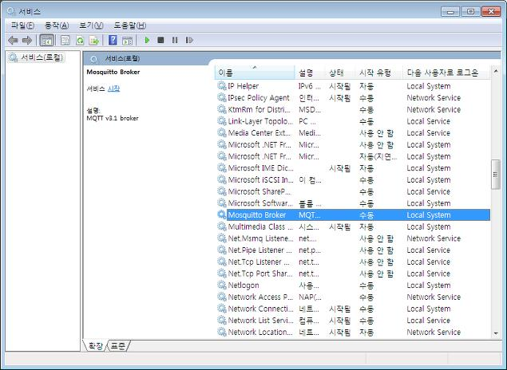

제품 구입 감사 안내문
(주)오토닉스 제품을 구입해 주셔서 감사합니다.
반드시 사용 전 안전을 위한 주의 사항을 완전히 읽고 지키십시오.
본 매뉴얼은 제품에 대한 안내와 바른 사용 방법에 대한 내용을 담고 있으므로 사용자가 쉽게 찾아 볼 수 있는 장소에 보관하십시오.
매뉴얼 안내
-
매뉴얼의 내용을 충분히 숙지한 후에 제품을 사용하십시오.
-
매뉴얼은 제품 기능에 대해 자세하게 설명한 것으로, 매뉴얼 이외의 내용에 대해서는 보증하지 않습니다.
-
매뉴얼의 일부 또는 전부를 무단으로 편집 또는 복사하여 사용할 수 없습니다.
-
매뉴얼은 제품과 함께 제공하지 않습니다.
당사 홈페이지 (www.autonics.com) 에서 다운로드하여 사용하십시오. -
매뉴얼의 내용은 해당 제품의 성능 개선에 따라 사전 예고없이 변경될 수 있으며, 업그레이드 공지는 당사 홈페이지를 통해 제공해 드립니다.
-
버전에 따라 표시가 다소 상이할 수 있습니다.
-
당사에서는 매뉴얼의 내용을 조금 더 쉽게, 정확하게 작성하고자 많은 노력을 기울였습니다. 그럼에도 불구하고 수정해야 될 부분이나 질문사항이 있으시면 당사 홈페이지를 통하여 의견을 주시기 바랍니다.
매뉴얼의 공통 기호
|
지시사항을 위반하였을 때, 심각한 상해나 사망이 발생할 가능성이 있는 경우 |
|
지시사항을 위반하였을 때, 경미한 상해나 제품 손상이 발생할 가능성이 있는 경우 |
|
해당 기능에 대한 보충 설명 |
|
해당 기능에 대한 예시 |
|
해당 기능에 대한 중요 내용 |
안전을 위한 주의 사항
USB 사용 시 안전을 위한 주의사항입니다.
‘안전을 위한 주의 사항’은 제품을 안전하고 올바르게 사용하여 사고나 위험을 미리 막기 위한 것이므로 반드시 지키십시오.
 경고
경고
-
가연성 / 폭발성 / 부식성 가스, 다습, 직사광선, 복사열, 진동, 충격, 염분이 있는 환경에서 사용하지 마십시오.
폭발 및 화재 위험이 있습니다. -
임의로 제품을 개조하지 마십시오.
화재 위험이 있습니다.
 주의
주의
-
정격/성능 범위 내에서 사용하십시오.
화재 및 제품 고장 위험이 있습니다. -
청소 시 마른 수건으로 닦으시고, 물, 유기용제를 사용하지 마십시오.
화재 위험이 있습니다.
 취급시 주의 사항
취급시 주의 사항
-
취급 시 주의사항에 명기된 사항을 지키십시오. 그렇지 않을 경우, 예기치 못한 사고가 일어날 수 있습니다.
-
불량 USB 포트에 연결하지 마십시오. 저장 장치가 손상되거나 정상 인식되지 않을 수 있습니다.
-
다수의 USB 장비를 함께 사용하는 경우, 인식하지 않거나 오류 등이 발생할 수도 있습니다
-
USB 연결 해제 시 안전하게 제거하십시오.
-
장기간 USB 미사용 시 PC에서 제거하여 보관하십시오.
-
분실 또는 도난에 주의하십시오.
-
USB에 저장되어있는 데이터를 임의로 삭제하거나 수정하지 마십시오.
본 사용자 매뉴얼에 기재된 사양 등은 제품의 개선을 위하여 예고 없이 변경될 수 있습니다.
반드시 취급설명서, 매뉴얼, 기술해설 (카탈로그, 홈페이지) 의 주의 사항을 지키십시오.
Autonics 최종 사용자 소프트웨어 라이선스 약관
중요 - "SCADAMaster"(이하 "소프트웨어")를 개봉, 복사, 설치, 또는 사용하기 전에 읽으십시오. 본 약관은 소유권을 증명하지 않습니다. 사용 허가에 관련된 라이선스 약관입니다.
다음의 계약 조건과 규정을 상세히 읽기 전에는 본 소프트웨어와 그에 관련된 어떠한 부분(총체적으로, "소프트웨어"라고 함)이라도 개봉, 사용하거나 로드하지 마십시오. 본 소프트웨어를 로드하거나 사용함으로써, 사용자는 이 계약서의 규약에 동의합니다. 만일 본 계약서의 내용에 동의하지 않으시면, 본 소프트웨어를 개봉, 복사, 설치하거나 사용하지 마십시오.
-
본 계약서에서 제공된 경우를 제외하고, 사용자는 본 소프트웨어의 어떠한 부분이라도 복사, 수정, 임대, 판매, 배포 또는 양도를 할 수 없으며, 본 소프트웨어의 허가 받지 않은 복사를 방지할 것을 동의합니다.
-
본 소프트웨어를 역(逆) 엔지니어링, 역(逆) 컴파일, 또는 해체할 수 없습니다.
-
본 소프트웨어는 소프트웨어 사용권 증서에 명시된 사용자와 정품 Key-Lock을 소유한 클라이언트 컴퓨터에 설치가 가능하며, 초과 설치 사용은 별도의 사용자 Key-Lock을 추가 구매해야 합니다.
-
본 소프트웨어는, 제 3자 공급자의 소프트웨어나 다른 재산을 포함하고 있을 수도 있으며, 그 중 일부는 함께 들어있는 "license.txt" 파일이나 다른 문서 또는 파일에 의거하여 라이선스되고 확인될 수 있습니다.
소프트웨어와 저작권의 소유권.
본 소프트웨어의 모든 복사본의 소유권은 오토닉스 또는 오토닉스의 공급자가 가지게 됩니다. 본 소프트웨어는 대한민국과 다른 나라들의 법률, 그리고 국제 조약의 규정에 의하여 저작권이 부여되고 보호됩니다. 본 소프트웨어로부터 저작권에 대한 어떠한 통고도 삭제하여서는 안됩니다. 오토닉스는 본 소프트웨어와 그 내부에 조회된 제품들을 아무 때나 통보 없이, 그리고 본 소프트웨어를 업데이트 하거나 지원해야 할 의무를 지는 일 없이 바꿀 수 있습니다. 별도로 명시적으로 제시된 경우를 제외하고, 오토닉스는 오토닉스의 특허, 지적 소유권, 등록 상표, 또는 다른 지적 재산권에 관하여 명백한 또는 암시된 어떠한 권리도 부여하지 않습니다. 사용자는 그 수령자가 이러한 규정을 완전히 준수할 것을 동의하고 사용자가 본 소프트웨어의 복사본을 간직하지 않는 경우에만 본 소프트웨어를 양도할 수 있습니다. 양도 시 소프트웨어의 전체를 교부하여야 하며, 양수인이 모든 조건을 동의하여야 합니다. 위반 시 책임은 양도인에게 있으며 오토닉스나 오토닉스의 공급자는 어떠한 보증이나 책임을 지지 않습니다.
매체에 대한 제한적 보증.
본 소프트웨어가 오토닉스에 의하여 물리적인 저장 매체를 사용하여 제공된 경우, 오토닉스는 그 매체가 오토닉스에 의하여 제공된 후로부터 90일 동안 물질적, 물리적인 결함이 없을 것을 보증합니다. 만일 그러한 결함이 발견되었을 경우, 교환을 받거나 오토닉스가 지정할 수 있는 다른 방법으로 본 소프트웨어를 제공받을 수 있도록 그 매체를 오토닉스에 반납하시기 바랍니다.
기타 보증의 제외.
상기에서 제시된 경우를 제외하고, 본 소프트웨어는 상거래 보증, 법률 위반의 여부, 또는 특정 용도에의적합성에 대한 보증을 포함하여 어떠한 명시적 또는 묵시적인 보증이 없이 "있는 그대로" 제공됩니다. 오토닉스는 본 소프트웨어에 포함되어 있는 어떠한 정보나 문서 내용, 그래픽, 링크, 또는 기타 다른 사항들의 정확도나 완성도에 대해 보증을 하거나 책임을 지지 않습니다.
책임의 제한.
오토닉스나 오토닉스의 공급자는 어떠한 경우에도 본 소프트웨어의 사용이나 사용 불능으로부터 초래된 여하한 피해에 (이익 상실, 경영 중단, 또는 정보 상실을 포함하여 다른 유사한 경우까지) 대하여, 오토닉스가 그러한 피해의 가능성에 대해 정보를 받은 적이 있다 하더라도, 책임을 지지 않습니다. 몇몇 사법권은 묵시적인 보증 또는 초래되거나 부수하여 발생하는 피해에 대한 책임 면제나 제한을 금지하고 있으므로, 위의 제한은 사용자에게 적용되지 않을 수도 있습니다. 사용자는 또한 관할 사법권에 따라 다른 법적 권리를 가질 수도 있습니다.
본 계약서의 종결.
오토닉스는 사용자가 이 규정을 위반할 경우 아무 때라도 본 계약서를 종결할 수 있습니다. 종결과 동시에, 사용자는 본 소프트웨어를 즉시 파기하거나 또는 본 소프트웨어의 모든 복사본을 오토닉스에 반납하여야 합니다.
1. SCADAMaster
1.1. SCADAMaster 소개
SCADAMaster는 각종 PLC, 제어기기로 구성된 공정, 시설, 설비 등의 운행을 감시·제어하고 데이터를 취득하는 PC 소프트웨어입니다. 취득된 데이터는 사용자가 이해할 수 있도록 그래프·차트와 같은 형태로 변환되거나, 연결된 데이터베이스에 누적되어 동향 분석 등에 사용됩니다.
1.2. 특징
- SCADAMaster는 블라블라합니다.
-
동해물과 백두산이 마르고 닳도록 하느님이 보우하사 우리나라 만세.
- SCADAMaster는 블라블라블라 하고 블라블라합니다.
-
동해물과 백두산이 마르고 닳도록 하느님이 보우하사 우리나라 만세.
무궁화 삼천리 화려 강산 대한사람 대한으로 길이 보전하세. - SCADAMaster는 블라블라합니다.
-
동해물과 백두산이 마르고 닳도록 하느님이 보우하사 우리나라 만세.
- SCADAMaster는 블라블라블라 하고 블라블라합니다.
-
동해물과 백두산이 마르고 닳도록 하느님이 보우하사 우리나라 만세.
무궁화 삼천리 화려 강산 대한사람 대한으로 길이 보전하세. - SCADAMaster는 블라블라합니다.
-
동해물과 백두산이 마르고 닳도록 하느님이 보우하사 우리나라 만세.
- SCADAMaster는 블라블라블라 하고 블라블라합니다.
-
동해물과 백두산이 마르고 닳도록 하느님이 보우하사 우리나라 만세.
무궁화 삼천리 화려 강산 대한사람 대한으로 길이 보전하세.
1.3. 기능
| 이름 | 설명 | 참조 |
|---|---|---|
일반 페이지 |
화면에 표시되는 기본 페이지입니다. 프로젝트에 설정된 기본 해상도의 크기로 생성됩니다. |
|
팝업 페이지 |
조건이 만족하면 기본 페이지 위에 팝업 형태로 나타나는 페이지입니다. 페이지 크기, 팝업 위치 등을 설정할 수 있습니다. |
| 이름 | 설명 | 참조 |
|---|---|---|
통신 드라이버 |
시스템에서 감시·제어할 외부 기기와의 통신을 설정합니다. |
|
Network |
시스템 이중화 설정을 위해 서버·클라이언트 시스템 종류 및 동기화 데이터를 설정합니다. |
|
OPC UA |
OPA UA 서버 구동을 위한 연결 정보를 설정합니다. |
|
Database |
외부 데이터베이스 연결 정보를 설정합니다. 사용 가능한 데이터베이스 종류에는 Microsoft SQL Server, MySQL, MariaDB, ODBC, Oracle, PostgreSQL, SQLite, IBM DB2, InterBase가 있습니다. |
|
MQTT |
MQTT 메시징 프로토콜의 사용 환경을 설정합니다. |
|
메시지 |
E-mail 및 SMS 메시징 환경을 설정합니다. |
| 이름 | 설명 | 참조 |
|---|---|---|
데이터 수집 |
데이터 수집을 설정합니다. |
|
다국어 |
자주 사용하는 문자열 및 다국어 관리를 위한 문자열 테이블을 설정합니다. |
|
경보 |
경보 조건 및 동작을 설정합니다. |
|
일정 |
스케줄을 설정합니다. |
|
레시피 |
일괄적으로 태그값을 전송할 레시피 테이블을 설정합니다. |
|
보고서 |
설정한 보고서 형식에 맞춰 데이터를 인쇄하거나 CSV 파일로 저장합니다. |
|
스크립트 |
사용자 스크립트를 생성합니다. |
|
애니메이션 에디터 |
사용자 애니메이션 파일을 생성하거나 GIF 애니메이션 파일을 추가·편집합니다. |
|
사용자 보안 |
프로젝트 보안 강화를 위해 사용자 계정 및 보안 레벨 등을 설정합니다. |
|
공용 설정 |
프로젝트 전역에 적용되는 프로젝트, 스플래쉬, 화면, 멀티미디어 항목을 설정합니다. |
| 이름 | 설명 | 참조 |
|---|---|---|
선 |
직선을 그리고 조건·효과·동작을 설정합니다. |
|
사각형 |
사각형을 그리고 조건·효과·동작을 설정합니다. |
|
원형 |
원을 그리고 조건·효과·동작을 설정합니다. |
|
다각형 |
다각형을 그리고 조건·효과·동작을 설정합니다. |
|
다중선 |
다중선을 그리고 조건·효과·동작을 설정합니다. |
|
호 |
호를 그리고 조건·효과·동작을 설정합니다. |
|
파이 |
파이를 그리고 조건·효과·동작을 설정합니다. |
|
현 |
현을 그리고 조건·효과·동작을 설정합니다. |
| 이름 | 설명 | 참조 |
|---|---|---|
이미지 |
이미지를 삽입하고 조건·효과·동작을 설정합니다. 삽입 가능한 이미지 파일에는 BMP, JPG, JPEG, PNG, SVG가 있습니다. |
|
애니메이션 |
애니메이션을 삽입하고 조건·효과를 설정합니다. 삽입 가능한 애니메이션 파일 종류에는 GIF, ANM(SCADAMaster 애니메이션 편집기로 생성)이 있습니다. |
|
디지털 태그 |
디지털 태그값을 표시하는 오브젝트를 그리고 조건·효과·동작을 설정합니다. |
|
아날로그 태그 |
아날로그 태그값을 표시하는 오브젝트를 그리고 조건·효과·동작을 설정합니다. |
|
문자열 태그 |
문자열 태그값을 표시하는 오브젝트를 그리고 조건·효과·동작을 설정합니다. |
|
스위치/램프 |
스위치/램프를 그리고 조건·효과를 설정합니다. |
|
경보 목록 |
시스템에서 발생한 경보를 표시하는 리스트를 그리고 조건·효과를 설정합니다. |
|
트렌드 |
태그값의 변화 추이를 보여주는 꺾은선 그래프를 그리고 조건·효과를 설정합니다. |
|
차트 |
여러개의 태그값을 비교·분석할 수 있는 차트를 그리고 조건·효과를 설정합니다. 차트 종류에는 막대형·선형·분포형·원형·도넛형 차트가 있습니다. |
|
에디트 박스 |
사용자가 값을 직접 입력할 수 있는 오브젝트를 그리고 조건·효과를 설정합니다. |
|
라디오 버튼 |
그룹 박스 내 아이템 중 원하는 항목을 선택하는 오브젝트를 그리고 조건·효과를 설정합니다. |
|
체크 박스 |
체크/비 체크 형태로 데이터를 관리하는 오브젝트를 그리고 조건·효과를 설정합니다. |
|
콤보 박스 |
아이템 리스트를 드롭하여 원하는 항목을 선택하는 오브젝트를 그리고 조건·효과를 설정합니다. |
|
날짜/시간 |
날짜/시간을 표시하는 오브젝트를 그리고 조건·과를 설정합니다. |
|
DAQ 테이블 |
설정된 태그의 데이터의 변동 추이를 실시간으로 표시하는 표를 그리고 조건·효과를 설정합니다. |
|
데이터 테이블 |
설정된 태그의 값을 쓰기/읽기 할 수 있는 표를 그리고 조건·효과를 설정합니다. |
1.4. 구성품
| SCADAMaster-DS |
|
| SCADAMaster-RS |
|
1.5. 라이선스 키락
SCADAMaster를 사용하려면 SCADAMaster 버전에 맞는 라이선스 키락이 필요합니다. SCADAMaster를 실행하기 전 PC에 USB 형태의 라이선스 키락을 먼저 장착하십시오. 키락이 장착되지 않았거나 목적에 맞지 않은 키락이 장착되어 있을 경우, SCADAMaster는 데모 모드로 작동됩니다.
연결된 키락의 정보는 SCADAMaster의 에서 확인할 수 있습니다.
1.5.1. 종류
프로젝트 파일을 제작하는데 사용됩니다.
| 사용 가능 실 태그 수 | 모델명 |
|---|---|
75 |
SCADAMaster-DS-075 |
150 |
SCADAMaster-DS-150 |
500 |
SCADAMaster-DS-500 |
1,500 |
SCADAMaster-DS-1500 |
3,000 |
SCADAMaster-DS-3000 |
64,000 |
SCADAMaster-DS-FULL |
프로젝트 파일을 실행하는데 사용됩니다.
| 사용 가능 실 태그 수 | 모델명 |
|---|---|
75 |
SCADAMaster-RS-075 |
150 |
SCADAMaster-RS-150 |
500 |
SCADAMaster-RS-500 |
1,500 |
SCADAMaster-RS-1500 |
3,000 |
SCADAMaster-RS-3000 |
64,000 |
SCADAMaster-RS-FULL |
1.6. 설치/제거
1.6.1. 시스템 사양
SCADAMaster 사용에 필요한 운영체제와 컴퓨터 사양은 다음과 같습니다.
- 운영체제
-
Windows 10, Windows Server 2019
- 컴퓨터 사양
-
항목 최소 사양 권장 사양 CPU
Dual Core
Dual Core
메모리
4 GB
≥ 8 GB
하드디스크
10 GB
≥ 8 GB
| 사용중인 그래픽 카드의 최신 드라이버 설치를 권장합니다. |
1.6.2. SCADAMaster의 설치
SCADAMaster의 설치 파일은 패키지에 동봉된 USB 메모리에 저장되어 있으며, Autonics 홈페이지에서도 다운받을 수 있습니다.
-
SCADAMaster 설치 파일을 실행하십시오.
-
설치 언어를 선택하고 OK를 클릭하십시오. 설치 언어에는 한글과 영어가 있습니다.
-
Microsoft Visual C++ 설치 대화창이 나타나면 동의함 에 체크하고 설치 를 클릭하십시오. PC에 Microsoft Visual C++이 설치되어 있으면 해당 과정은 생략되며, SCADAMaster 설치 마법사가 바로 실행됩니다.
-
Microsoft Visual C++의 설치가 진행되는 동안 대기하십시오.
-
Microsoft Visual C++의 설치가 완료되면 닫기를 클릭하십시오. 그러면 SCADAMaster 설치 마법사가 시작됩니다.
-
SCADAMaster 설치 마법사가 시작되면 다음>을 클릭하여 설치를 진행하십시오.
-
사용권 계약을 확인하고 동의함을 클릭하십시오.
-
설치 구성 요소를 선택하고 다음을 클릭하십시오.
-
설치 위치를 선택하고 설치를 클릭하십시오.
-
SCADAMaster의 설치가 진행되는 동안 대기하십시오.
-
설치가 완료되면 PC를 재부팅하십시오.
| SCADAMaster 설치 전 1.6.1, “시스템 사양”을 확인한 후 설치하십시오. |
1.6.3. SCADAMaster의 제거
SCADAMaster의 제거는 [Windows 제어판 > 앱 및 기능] 에서 할 수 있습니다.
-
설치된 앱 목록에서 SCADAMaster를 클릭하여 제거 버튼을 클릭하십시오. SCADAMaster 제거 마법사가 나타납니다.
-
제거를 진행하려면 예를 클릭하시고, 취소하려면 아니오를 클릭하십시오.
-
제거가 완료되면 확인을 클릭하여 SCADAMaster 제거를 마무리하십시오.
2. 시작하기
2.1. SCADAMaster 실행
라이선스 키락을 PC에 장착하고 라이선스에 맞는 SCADAMaster를 실행하십시오.
키락의 종류에 맞지 않은 SCADAMaster를 실행하거나, 키락 없이 SCADAMaser를 실행하는 경우 데모 버전으로 작동합니다.
2.1.1. 데모 모드
키락이 장착되지 않았거나, 목적에 맞지 않은 키락이 장착되어 있을 경우, SCADAMaster는 데모 모드로 작동됩니다. 데모 모드로 작동 시, 2시간이 경과하면 경고 메시지가 나타나며, 메시지 창에서 OK 버튼을 클릭하면 프로그램이 종료됩니다.
-
SCADAMaster-DS 키락이 장착되지 않은 상태에서 SCADAMaster-DS를 실행한 경우
-
SCADAMaster-RS 키락이 장착되지 않은 상태에서 SCADAMaster-RS를 실행한 경우
-
SCADAMaster-RS 키락이 장착된 상태에서 SCADAMaster-DS를 실행한 경우
-
SCADAMaster-DS 키락이 장착되지 않은 상태에서 프로젝트를 저장한 경우
-
SCADAMaster-RS 키락이 장착된 상태에서 프로젝트를 저장한 경우
-
키락이 지원하는 실 태그 수보다 프로젝트에 사용된 실 태그 수가 많은 경우
2.2. 시작 화면
SCADAMaster를 실행하거나 리본 메뉴에서  를 클릭하면 시작 화면이 나타납니다.
를 클릭하면 시작 화면이 나타납니다.

| 1. 프로젝트 메뉴 |
새 프로젝트 생성, 프로젝트 열기, 프로젝트 저장, 다른 이름으로 저장, 프로젝트 닫기를 할 수 있습니다. 프로젝트 저장, 다른 이름으로 저장, 프로젝트 닫기는 열려있는 프로젝트가 있을 때에만 활성화됩니다. |
| 2. 새 프로젝트 |
새 프로젝트를 설정하여 생성합니다. 프로젝트 유형, 이름, 해상도, 저장 경로를 설정하고 '생성’을 클릭하면 새 프로젝트가 생성됩니다. |
| 3. 최근 프로젝트 |
최근 편집·저장 된 프로젝트를 최근 수정 순 또는 이름 순으로 정렬하여 표시합니다. 프로젝트를 선택하여 더블클릭하면 프로젝트가 열립니다. |
| 4. 샘플 프로젝트 |
Autonics에서 기본 제공하는 샘플 프로젝트입니다. 샘플 프로젝트를 활용하여 사용자 환경에 맞는 프로젝트를 제작할 수 있습니다. |
| 5. Autonics |
Autonics 홈페이지로 연결됩니다. |
| 6. 라이브러리 |
라이브러리 다운로드 페이지로 연결됩니다. |
3. 프로젝트
3.1. 프로젝트 시작
3.1.1. 새 프로젝트 생성
시작 화면에서 새 프로젝트를 생성할 수 있습니다.
SCADAMaster를 실행하거나 리본 메뉴에서  를 클릭하면 시작 화면이 나타납니다.
를 클릭하면 시작 화면이 나타납니다.
| PC |
프로젝트 종류입니다. PC에서 프로젝트가 운영됩니다. |
| 이름 |
프로젝트 이름을 입력합니다. |
| 해상도 |
프로젝트의 기본 해상도를 설정합니다. 기본 페이지의 고정 해상도입니다. |
| 저장 경로 |
프로젝트의 저장 경로입니다. 우측의 … 버튼을 클릭하여 저장 경로를 지정할 수 있습니다. |
| 생성 |
위의 설정 항목들을 설정한 후, 생성버튼을 클릭하여 프로젝트를 생성합니다. |
3.1.2. 프로젝트 열기
시작 화면에서 프로젝트 열기를 클릭하여 저장된 프로젝트 파일을 열 수 있습니다.
열고자 하는 프로젝트 파일을 선택 한 후, 열기버튼을 클릭하십시오. 취소 또는 프로젝트 열기 창의 ×를 클릭하면 프로젝트 열기가 취소됩니다.
또는, 최근 프로젝트에서 프로젝트를 더블 클릭하여 프로젝트를 열 수있습니다.
|
SCADAMaster의 버전을 업데이트하여 설치했을 경우, 이전 버전의 SCADAMaster에서 제작한 프로젝트 사용 시 오류가 발생할 수 있습니다. 이런 경우, 버전 동기화를 위해 업데이트한 상위 버전의 SCADAMaster에서 이전 버전의 SCADAMaster 프로젝트를 열고 다시 저장하십시오. |
3.2. 프로젝트 공용 설정
에서 프로젝트, 스플래쉬, 화면, 멀티미디어 항목의 전역 설정을 할 수 있습니다.
1. 프로젝트 설정
프로젝트의 기본 정보를 확인·설정합니다.
| 프로젝트 이름 |
프로젝트 이름을 표시합니다. 프로젝트 이름은 수정할 수 없습니다. |
| 저장 경로 |
프로젝트 저장 경로를 표시합니다. 프로젝트 저장 경로는 수정할 수 없습니다. |
| 프로젝트 종류 |
프로젝트 종류를 표시합니다. 해당 환경에서 프로젝트가 운영됩니다. |
| 프로젝트 해상도 |
프로젝트의 기본 해상도를 설정합니다. 기본 페이지의 고정 해상도입니다. 너비/높이 입력칸에 정수를 입력하여 설정할 수도 있습니다. 설정 범위
|
| 프로젝트 버전 |
프로젝트 버전을 설정합니다. 프로젝트의 업데이트 이력 관리를 위해 사용합니다. |
| 프로젝트 기준 날짜/시간 |
프로젝트의 시작 날짜와 시간을 설정합니다. 설정된 시작 날짜와 시간 기준으로 보고서를 출력합니다. 설정 범위
|
| 프로젝트 비밀번호 (Designer) |
프로젝트 비밀번호를 설정합니다. 프로젝트를 열거나 프로젝트 전역 설정 시, 비밀번호를 확인하도록 하여 보안을 강화할 수 있습니다. 설정 범위
|
| 시스템 로그 |
프로젝트의 시스템 로그 데이터 보존 기간을 설정합니다. |
| 프로젝트 설명 |
프로젝트에 대한 설명을 입력합니다. |
2. 스플래시 설정
SCADAMaster-RS에서 프로젝트 로딩 시 나타나는 화면을 설정합니다.
| 시작 시 스플래시 화면 사용 |
스플래시 화면 사용 여부를 설정합니다. 처음 사용 체크 시, 이미지 선택창이 나타납니다. |

|
스플래시 화면용 이미지 선택창이 나타납니다. PC에서 이미지를 선택합니다. |
| 최소 표시 시간 |
스플래시 화면 최소 표시 시간을 설정합니다. |
| 스플래시 화면 |
스플래시 화면 크기를 설정합니다. 고정 크기를 선택하면 직접 크기를 설정할 수 있습니다. |
| 프로젝트 설명 표시 |
프로젝트 설명 표시 여부를 설정합니다. 프로젝트 설명은 메뉴에서 설정된 정보입니다. 표시 여부를 체크하면 위치, 폰트 크기, 폰트 색 메뉴가 활성화됩니다. 설정 범위
|
| 프로젝트 버전 표시 |
프로젝트 버전 표시 여부를 설정합니다. 프로젝트 버전은 메뉴에서 설정된 정보입니다. 표시 여부를 체크하면 위치, 폰트 크기, 폰트 색 메뉴가 활성화됩니다. 설정 범위
|
3. 화면 설정
SCADAMaster-RS에서 프로젝트 실행 시 나타나는 초기 화면 및 모니터를 설정합니다.
| 모니터 설정 |
모니터 표시 옵션을 설정합니다.
|
| 모니터 및 초기 페이지 |
모니터 및 모니터 별 초기 페이지를 설정합니다.
|


4. 멀티미디어 설정
소리 크기를 설정합니다.
| 경보 볼륨 |
경보 알람 소리 크기를 설정합니다. 일반 볼륨보다 크게 설정하는 것을 권장합니다. |
| 일반 볼륨 |
기본적으로 적용되는 소리 크기입니다. |
| 터치 볼륨 |
터치·클릭 볼륨입니다. |
3.3. 프로젝트 저장·닫기
3.3.1. 프로젝트 저장
시작 화면에서 프로젝트 저장를 클릭하여 프로젝트를 저장할 수 있습니다.
프로젝트를 저장하지 않고 프로그램을 종료하면 프로젝트 저장 여부를 묻는 메시지 팝업이 나타납니다. 예를 클릭하여 프로젝트를 저장한 후 프로그램을 종료하십시오.
프로젝트 저장을 원치 않을 경우 아니오를 클릭하십시오. 취소를 클릭하면 프로그램 종료가 취소됩니다.
3.3.2. 다른 이름으로 저장
시작 화면에서 다른 이름으로 저장을 클릭하여 다른 이름으로 프로젝트를 저장할 수 있습니다. 프로젝트 이름을 입력한 뒤 저장을 클릭하십시오. 취소 또는 프로젝트 저장 창의 ×를 클릭하면 다른 이름으로 저장하기가 취소됩니다.
3.3.3. 프로젝트 닫기
시작 화면에서 프로젝트 닫기을 클릭하여 현재 SCADAMaster에 열려있는 프로젝트들이 자동 저장된 후 종료됩니다.
| SCADAMaster-DS/RS 사용 중 PC의 전원이 비정상 종료되면 프로젝트 파일이 손상되어 복구가 불가능 할 수 있습니다. 반드시 주기적으로 프로젝트를 백업하시고, 비정상 PC 전원 차단에 유의하십시오. |
3.4. 프로젝트 런타임 실행
작화한 프로젝트를 런타임 실행하여 사용합니다.
-
SCADAMaster-DS에서 실행: 버튼을 클릭하면 현재 편집중인 프로젝트를 저장하고 런타임을 실행합니다.
-
SCADAMaster-RS에서 실행: SCADAMaster-RS 프로그램을 실행하고 런타임 실행할 프로젝트를 선택한 후 열기 버튼을 클릭합니다.
3.4.1. 런타임 시스템 메뉴
런타임 시스템 메뉴 표시 여부를 설정할 수 있습니다. 시스템 메뉴에는 런타임 종료, 사용자 로그인, 태그 값 모니터, 통신 상태 모니터, 시스템 로그 모니터가 있습니다. 런타임 시스템 메뉴 표시 여부는 에서 할 수 있습니다.
해당 메뉴에서 '메인 화면에 시스템 메뉴 표시’항목에 체크하면 런타임에서 시스템 메뉴가 표시됩니다.
1. 런타임 종료
을 클릭하거나, 우측 상단의 × 버튼을 클릭하면 종료 여부를 확인하는 메세지 창이 나타납니다. Yes 버튼을 클릭하면 SCADAMaster-RS가 종료됩니다. No 버튼을 클릭하면 종료를 취소하고 런타임으로 돌아갑니다.
2. 사용자 계정 로그인
을 클릭하면 사용자 계정 로그인창이 나타납니다. 키보드를 사용하거나, 우측 상단의 버튼을 누르면 나타나는 가상 키보드를 사용하여 사용자 ID와 비밀번호를 입력합니다. 입력이 완료되면 OK 버튼을 클릭하면 로그인이 됩니다. 사용자 계정 설정은 ' 7.9, “사용자 보안”' 을 참조하십시오.
3. 태그 값 모니터링
를 클릭하면 'Tag Value Monitor’창이 나타납니다. 좌측 태그 리스트에서 선택한 태그를 우측 트렌드 그래프에서 모니터링합니다.
| Tag List (Group) |
태그 그룹 리스트입니다. 등록 된 태그 그룹을 트리구조로 표시합니다. |
| Tag List (Tag) |
태그 리스트입니다. 선택한 그룹에 등록된 태그·그룹을 리스트로 표시하며, 태그 종류, 태그 이름을 표시하며, 태그 값 모니터 트렌드에 추가 여부를 체그합니다. |
| Tag Value Monitor (Trend) |
태그 값 모니터를 위한 트랜드입니다. |
| Show Trend |
트랜드 그래프 표시 여부를 설정합니다. 버튼을 클릭하여 활성화 하면 ( |
| Time range (sec) |
설정한 시간 동안의 최신 데이터를 그래프에 표시합니다. 시간축 (X축) 표시 범위가 됩니다. 시간 설정칸 우측의 ∨ 버튼을 클릭하면 선택 가능한 메뉴가 나타납니다. 메뉴에서 원하는 시간을 선택하십시오. |
| Play/Stop |
모니터링을 시작/정지합니다. |
| Tag Value Monitor |
태그 값 모니터 트랜드 그래프에 표시할 태그를 선택하고 태그 값 및 표시 방법을 설정합니다. 각 태그 행을 더블클릭하면 해당 태그의 값을 수정할 수 있습니다.
|
| Close |
태그 값 모니터 창을 닫습니다. |


4. 통신 상태 모니터
를 클릭하면 'Communication Status Monitor' 창이 나타납니다. 현재 프로젝트의 통신 상태를 실시간으로 모니터링할 수 있습니다.
통신 연결 상태 창
현재 프로젝트에 연결된 통신 기기들의 연결 상태를 확인할 수 있습니다. 가장 좌측 Interface 항목을 제외한 나머지 항목들을 드래그하여 표시 열 순서를 변경할 수 있습니다.
| Interface |
통신 인터페이스를 표시합니다. 각 통신 인터페이스별 연결 항목을 트리구조로 표시하며, ∨ 를 클릭하여 숨기거나 표시할 수 있습니다. |
| Station |
스테이션 이름을 표시합니다. |
| State |
통신 연결 상태를 아이콘으로 표시합니다. |
| Use |
체크 박스를 체크하여 통신 사용 여부를 선택할 수 있습니다. |
| Connect |
연결된 통신 인터페이스를 Disconnect 를 클릭하여 연결 해제하거나 Connect 를 클릭하여 다시 연결할 수 있습니다. |
| Read Succeess Rate |
통신 데이터 읽기 성공률을 표시합니다. |
| Read AVG Response Time(msec) |
통신 읽기 응답 평균 시간을 msec 단위로 표시합니다. |
| Write Success Rate |
통신 쓰기 성공률을 표시합니다. |
| Write AVG Response Time(msec) |
통신 쓰기 응답 평균 시간을 msec 단위로 표시합니다. |
| Read Request Count |
통신 읽기 요청 횟수를 표시합니다. |
| Read Success Count |
통신 읽기 성공 횟수를 표시합니다. |
| Read Timeout Count |
통신 읽기 타임 아웃 횟수를 표시합니다. |
| Read Fail Count |
통신 읽기 실패 횟수를 표시합니다. |
| Write Request Count |
통신 쓰기 요청 횟수를 표시합니다. |
| Write Success Count |
통신 쓰기 성공 횟수를 표시합니다. |
| Write Timeout Count |
통신 쓰기 타임 아웃 횟수를 표시합니다. |
| Write Fail Count |
통신 쓰기 실패 횟수를 표시합니다. |
| Frame Monitor |
체크 박스를 체크하여 '통신 프레임 표시 창' 에 통신 프레임 표시 여부를 선택할 수 있습니다. |
통신 프레임 표시 창
현재 프로젝트 통신 프레임의 표시 상태를 설정하고 실시간으로 확인할 수 있습니다.
| Frame Data Format |
통신 프레임 표시 단위를 선택하여 설정합니다. 설정 범위
|
| Separator |
통신 프레임 표시 구분자를 선택하여 설정합니다. |
| Auto Scroll |
체크 박스를 체크하여 통신 프레임 표시 창이 갱신될 때마다 해당 값을 표시할 수 있도록 하는 자동 스크롤 기능 활성화 여부를 선택할 수 있습니다. |
| ↑↓ |
통신 프레임 표시 정렬 기준을 위 또는 아래로 전환합니다. |

|
통신 프레임 표시 창을 비웁니다. 기존 통신 데이터에는 영향을 주지 않습니다. |
| Export file |
통신 프레임 로그 데이터를 저장 날짜와 시간이 포함된 파일명을 가진 PDF로 저장할 수 있습니다. |
5. 시스템 로그 모니터
를 클릭하면 'System Log Monitor’창이 나타납니다. 시스템에서 발생하는 로그 내역을 한번에 확인할 수 있습니다.
| Log Filter |
시스템 로그 모니터에 표시할 로그 종류를 선택합니다.
|
| Category |
시스템 로그 모니터에 표시할 로그 카테고리를 선택합니다. |
| Log View Settings |
시스템 로그 표시 방법을 설정합니다.
|
| System Log |
시스템 로그를 표시합니다.
|
| Export logs to PDF |
시스템 로그 데이터를 PDF 파일로 내보냅니다. 내보내기한 PDF 파일은 프로젝트 저장 경로의 log 폴더에 저장됩니다. |
| Close |
시스템 로그 모니터 창을 닫습니다. |
4. 화면
4.1. UI 화면 구성

| 1. 리본 메뉴 |
SCADAMaster의 메뉴들을 탭 별로 표시합니다.
|
||||||||||||||
| 2. 패널 |
프로젝트의 구성 요소 및 속성을 표시합니다. 표시 할 패널은 에서 선택할 수 있으며, 패널 활성화 버튼을 사용하여 활성/비활성화 할 수 있습니다.
사용자 환경에 맞춰 패널의 위치를 바꿀 수 있습니다. |
||||||||||||||
| 3. 패널 활성화 버튼 |
각 패널을 활성/비활성화합니다.
|
||||||||||||||
| 4. 작업 영역 |
페이지를 편집하는 영역입니다. 열려있는 페이지는 탭으로 표시됩니다. |
||||||||||||||
| 5. 화면 보기 설정 메뉴 |
작화 영역의 표시 환경을 설정합니다. 눈금선·안내선을 표시/숨기기 하거나 화면 표시 비율을 조정할 수 있습니다. |


4.2. 화면 보기 설정
SCADAMaster는 사용자의 편의에 맞게 UI 화면 표시 방법을 설정할 수 있습니다. 화면 표시 비율, 눈금선·안내선 표시 여부, 오브젝트 붙이기 기능, 패널 표시 여부를 설정할 수 있으며, [보기] 리본 메뉴에서 설정합니다.

| 확대/축소 |
화면 표시 비율을 설정합니다.
|
| 눈금선 |
눈금선의 표시 여부와 간격을 설정합니다. 페이지에 눈금선을 표시하면 오브젝트 정렬이 용이합니다.
|
| 안내선 |
안내선의 표시 여부를 설정합니다. 오브젝트 이동 시, 페이지의 중심이나 다른 오브젝트와의 정렬 기준선에 안내선이 표시됩니다. 작화 시, 오브젝트 정렬이 용이합니다. |
| 붙이기 |
붙이기를 설정합니다. 오브젝트 이동 시, 자동으로 설정된 대상에 맞춰 정렬됩니다.
|


|
화면 보기 설정은 작업 영역 아래의 화면 보기 설정 메뉴에서도 할 수 있습니다. |
SCADAMaster-DS 사용 시, 윈도우 디스플레이 배율을 100%, 해상도를 1920×1080로 설정할 것을 권장합니다. 그렇지 않으면 SCADAMaster-DS의 메뉴 이름의 일부만 표시될 수 있습니다.
|
5. 기본 설정
5.1. 페이지
페이지는 프로젝트를 구성하는 화면으로, 일반 페이지와 팝업 페이지가 있습니다.
5.1.1. 페이지 종류
| 일반 페이지 |
화면에 표시되는 기본 페이지입니다. 프로젝트에 설정된 기본 해상도의 크기로 생성됩니다. 페이지 전환 스위치를 사용하거나, 특정 오브젝트에 동작 옵션을 설정하여 조작합니다. |
| 팝업 페이지 |
조건이 만족하면 기본 페이지 위에 팝업 형태로 나타나는 페이지입니다. 페이지 크기, 팝업 위치 등을 설정할 수 있습니다. 페이지 전환 스위치를 사용하거나, 특정 오브젝트에 동작 옵션을 설정하여 조작합니다. |

5.1.2. 페이지 편집
페이지 편집은 [페이지] 리본 메뉴, 페이지 패널, 작업 영역 에서 할 수 있습니다.
| 작업 | 페이지 리본 메뉴 | 페이지 패널 | 작업 영역 |
|---|---|---|---|
일반 페이지 생성 |
을 클릭하십시오. |
아무 일반 페이지를 오른쪽 마우스 클릭하고 메뉴에서 생성 을 클릭하십시오. |
- |
페이지 생성 |
을 클릭하십시오. |
아무 팝업 페이지를 오른쪽 마우스 클릭하고 메뉴에서 생성 을 클릭하십시오. |
- |
페이지 복제 |
복제하고자 하는 페이지를 작업 영역에 열고 메뉴를 클릭하십시오. |
복제하고자 하는 페이지를 오른쪽 마우스 클릭하고 메뉴에서 페이지 복제를 클릭하십시오. |
- |
페이지 파일 삽입 |
을 클릭하고 삽입할 페이지를 선택하여 열기 버튼을 클릭하십시오. |
- |
- |
페이지 삭제 |
삭제하고자 하는 페이지를 작업 영역에 열고 를 클릭하십시오. |
삭제하고자 하는 페이지를 오른쪽 마우스 클릭하고 메뉴에서 삭제 를 클릭하십시오. |
- |
페이지 열기 |
- |
열 페이지를 오른쪽 마우스 클릭하고 메뉴에서 열기 을 클릭하거나, 해당 페이지를 더블클릭하십시오. |
- |
페이지 닫기 |
닫을 페이지를 작업 영역에 열고 를 클릭하십시오. |
닫을 페이지를 오른쪽 마우스 클릭하고 메뉴에서 닫기 를 클릭하십시오. |
해당 페이지의 탭 우측 ×를 클릭하십시오. |
모두 닫기 |
작업 영역에 열려있는 모든 페이지를 닫습니다. |
- |
- |
페이지 설정 |
설정을 변경할 페이지를 작업 영역에 열고 을 클릭하십시오. |
설정을 변경할 페이지를 오른쪽 마우스 클릭하고 메뉴에서 설정 을 클릭하십시오. |
설정을 변경할 페이지의 작업 영역 아무 곳을 오른쪽 마우스 클릭하고 메뉴에서 설정 을 클릭하거나, 아무 곳을 더블클릭 하십시오. |
5.1.3. 페이지 설정 메뉴
페이지를 처음 생성하거나, 생성된 페이지의 설정을 변경할 때 페이지 설정창이 나타납니다. 을 클릭하거나, 작업 영역 아무 곳을 더블 클릭하거나, 페이지 패널에서 해당 페이지를 우클릭하고 설정을 클릭하면 '페이지 설정' 창이 나타납니다.
1. 페이지 설정
| 미리보기 |
설정 중인 내용을 적용한 화면을 미리보기로 표시합니다. |
| 이름 |
페이지의 이름을 설정합니다. 페이지 이름순으로 페이지가 나열됩니다. |
| 종류 |
페이지의 종류를 설정합니다. |
| 인덱스 |
페이지의 인덱스 번호를 설정합니다. |
| 크기 |
일반 페이지의 크기를 표시하거나, 팝업 페이지의 크기를 설정합니다. 일반 페이지의 크기는 에서 프로젝트 해상도 수정을 통해 변경할 수 있으나, 페이지 별 크기 지정은 불가능합니다. 페이지에 작화가 되어 있는 상태에서 해상도를 변경하면 오브젝트의 크기와 비율도 조정됩니다. |
| 채우기 |
바탕 채우기 색을 설정합니다. 색을 클릭하면 '색 선택' 창이 나타납니다. 팝업 페이지는 투명도 조절을 할 수 있습니다. 색 설정에 대한 자세한 내용은 '색 선택 창' 을 참조하십시오. |
| 설명 |
페이지에 대한 설명을 입력합니다. |
2. 기본 설정
| 터치 |
화면 터치 옵션을 설정합니다.
|
| 위치 |
(팝업 페이지만 해당)
|
| 표시 |
(팝업 페이지만 해당)
|
3. 동작 설정
| 페이지 열기 시 동작 |
페이지가 열릴 때의 동작을 설정합니다. |
| 페이지 닫기 시 동작 |
페이지가 닫힐 때의 동작을 설정합니다. |
| 동작에 대한 자세한 설명은 8.6, “동작” 을 참조하십시오. |
5.2. 태그
감시·제어 해야 할 데이터 메모리 주소를 태그로 등록하여 편리하게 프로젝트를 구성하고 운용할 수 있습니다.
-
실 태그: 통신 연결 된 PLC 및 제어기기의 데이터 실 주소를 등록하여 실시간 감시·제어할 수 있습니다.
-
가상 태그: SCADAMaster 내부에서만 사용하는 태그입니다. 프로젝트 동작 확인 및 운행 테스트를 할 수 있습니다.
5.2.1. 태그 종류
데이터 종류에 따라 디지털 태그, 아날로그 태그, 문자열 태그가 있습니다.
-
디지털 태그: ON/OFF 상태, 유/무 상태, 참/거짓 등, 이산적인 데이터 값을 나타내는 태그입니다.


-
아날로그 태그: 온도, 압력, 수, 양 등, 연속적인 물리적 값을 나타내는 태그입니다.

-
문자열 태그: 문자 값을 가진 태그입니다.

5.2.2. 태그 설정
태그 설정은 에서 할 수 있습니다. 태그를 클릭하면 '태그' 설정 창이 나타납니다. 태그 그룹을 만들고 그룹 별 태그 추가·설정이 가능합니다. 태그 설정 방법은 아래와 같습니다.

1. 그룹
|
새 그룹을 추가합니다. 선택한 그룹의 하위 그룹으로 추가됩니다. |
|

|
선택한 그룹 이름을 변경합니다. |

|
선택한 그룹을 삭제합니다. |
| 태그 그룹 리스트 |
태그 그룹 리스트입니다. 등록 된 태그 그룹을 트리구조로 표시합니다. |
| 그룹 경로 |
선택된 그룹이 소속된 경로를 표시합니다. |
2. 태그
|
새 태그를 추가합니다. 선택한 그룹에 추가됩니다. |
|

|
선택한 태그를 복제합니다. |
|
|
선택한 태그의 이름을 변경합니다. |
|
|
선택한 태그를 삭제합니다. |
|
태그 리스트에 필터를 적용합니다. |
|
| 태그 리스트 |
태그 리스트입니다. 선택한 그룹에 등록된 태그·그룹을 리스트로 표시하며, 태그 종류, 태그 이름, 데이터 메모리 주소를 표시합니다. |
3. 태그 설정
| 태그 |
태그 이름을 설정합니다. |
| 실 태그/가상 태그 |
태그 유형을 선택합니다. 실 태그 선택 시, 통신 기기, 주소, 시작 시 초기값 쓰기 설정 칸이 활성화됩니다. |
| 통신 기기 |
실 태그 선택 시 활성화됩니다. 시스템에 연결 된 통신 기기 중 태그를 매칭할 장치를 선택합니다. ∨ 버튼을 클릭하여 드랍 메뉴에서 장치를 선택하거나, …을 클릭하여 '통신 드라이버' 설정 창에서 선택합니다. '통신 드라이버' 설정 창에서 새 기기를 추가하거나 기기 설정을 변경할 수 있습니다. |
| 주소 |
실 태그 선택 시 활성화됩니다. 선택된 통신 기기의 데이터 메모리 주소를 입력합니다. 한 주소가 여러 개의 태그로 중복 등록 가능합니다. 주소는 연결된 기기에 따라 상이하므로, 주소에 대한 자세한 내용은 해당 기기의 매뉴얼을 참조하십시오. |
| 시작 시 초기값 쓰기 |
실 태그 선택 시 활성화됩니다. 시작 시 초기 값 쓰기 여부를 설정합니다. SCADAMaster-RS로 실행 시, 설정된 초기 값이 입력된 상태에서 런타임을 실행합니다. |
| 태그 종류 |
태그 종류를 선택합니다. 선택된 태그 종류에 따라 하위 설정 메뉴가 상이합니다. 하위 메뉴에 대한 자세한 내용은 '태그 종류 설정 메뉴' 를 참조하십시오. |
| 업데이트 |
태그 설정 후 업데이트 를 클릭하여 설정 내용을 업데이트합니다. |
4. 기타 메뉴
| CSV 불러오기 |
저장된 태그 CSV 파일을 불러옵니다. '태그 CSV 파일 열기' 창이 나타나면 CSV파일을 선택하고 열기 버튼을 클릭하십시오. CSV 불러오기를 하면 기설정된 내용을 지우고 CSV 파일의 내용으로 리셋합니다. 기설정된 내용을 저장하려면 CSV로 내보내기 한 후 CSV 불러오기를 실행하십시오. |
| CSV로 내보내기 |
설정된 태그 설정 내용을 CSV 파일로 내보냅니다. '태그 CSV 파일 저장' 창이 나타나면 저장 경로와 파일 이름을 설정하고 저장 을 클릭하십시오. |
| 확인 |
설정 내용을 저장하고 태그 설정창을 닫습니다. |
| 취소 |
설정 내용을 무시하고 태그 설정창을 닫습니다. |
| 적용 |
설정 내용을 저장합니다. |
| 각 태그의 초기 값, 최소 값, 최대 값의 설정 값이 커서 숫자가 길어질 경우, CSV 파일 상에서 지수로 표기되어 내보내기 한 값과 불러오기 한 값이 상이할 수 있습니다. 이럴 경우, CSV 파일 상 해당 셀의 숫자 앞에 작은 따옴표(')를 추가하여 문자열화 하십시오. 그러면 큰 수를 자동으로 지수로 표기하는 것을 방지할 수 있습니다. |
6. 네트워크 설정
6.1. 통신 드라이버
통신 드라이버를 설정하여 외부 장치와 통신할 수 있습니다.
통신 드라이버 설정은 에서 할 수 있습니다. 통신 드라이버 를 클릭하면 통신 드라이버 설정창 이 나타납니다. 통신 장치와 스테이션 ID를 트리 구조로 확인할 수 있으며, 통신 장치와 인터페이스를 추가, 확인, 수정, 삭제할 수 있습니다.
1. 통신 장치 추가
제조사별 추가 가능한 통신 장치 목록이 Serial/Ethernet 타입으로 나뉘어 표시됩니다. 추가할 통신 장치를 선택하면 해당 장치의 형태와 설명을 확인할 수 있습니다. 통신 장치를 선택하고 다음 을 클릭하면 '통신 장치 추가' 설정창으로 이동합니다.
통신 장치 추가 창
| 제조사 명 |
해당 제조사의 추가 가능한 통신 장치 목록을 표시합니다. |
| 통신 장치 명 |
해당 장치의 형태와 설명을 표시합니다. |
| Serial |
시리얼 타입 통신 장치 목록을 표시합니다. |
| Ethernet |
이더넷 타입 통신 장치 목록을 표시합니다. |
| 이름으로 검색 |
입력 값으로 디바이스를 검색합니다. 임의의 값을 입력하면 그 값을 포함하는 디바이스를 검색할 수 있습니다. |
| 다음 |
통신 장치를 선택 후 클릭하면 해당 통신 장치의 '통신 장치 추가 설정' 창으로 이동합니다. |
통신 장치 추가 설정 창
| 스테이션 이름 |
스테이션 이름을 입력할 수 있습니다. |
||||||
| ID |
스테이션 아이디를 입력할 수 있습니다. |
||||||
| 통신 인터페이스 |
|
||||||
| 이전 |
'통신 장치 추가 창' 으로 돌아갑니다. |
|
선택한 장치에 따라 '사용자 정의 프로토콜', '파라미터', '통신 데이터 코드', '네트워크 번호', 'PC 번호', '네트워크 경로', 'Security Mode', 'Security Policies', 'User Authentication', 'User ID/PW', '랙 번호', '슬롯 번호' 등의 항목이 추가로 나타납니다. 자세한 내용은 해당 장치의 기술 자료를 참고하십시오. |
2. 통신 인터페이스 추가
통신 종류
통신 타입을 선택합니다. 선택한 통신 타입의 하위 설정 메뉴가 나타납니다.
설정 범위: Serial (초기값), Ethernet
Serial
시리얼 타입 통신 인터페이스 항목을 설정합니다.
| 포트 종류 |
포트 종류를 설정합니다. |
| COM 포트 |
COM 포트 번호를 설정합니다. |
| 통신 속도 |
통신 속도를 설정합니다. |
| 데이터 길이 |
데이터 길이를 설정합니다. |
| 스탑 비트 |
스탑 비트를 설정합니다. |
| 패리티 비트 |
패리티 비트를 설정합니다. |
| 흐름 제어 |
흐름 제어 방식을 설정합니다. |
| 통신 |
|
||||||
| 데이터 스왑 |
데이터 스왑 방식을 선택합니다. |
Ethernet
이더넷 타입 통신 인터페이스 항목을 설정합니다.
| 포트 종류 |
포트 종류를 설정합니다. |
||||||
| 대상 종류 |
통신 주소 형식을 설정합니다. |
||||||
| IP 주소/URL |
'대상 종류' 항목의 설정 값과 일치하는 형식의 주소를 입력합니다. |
||||||
| 통신 |
|
||||||
| 데이터 스왑 |
데이터 스왑 방식을 선택합니다. |
3. 스테이션/인터페이스 수정
수정할 통신 장치/통신 인터페이스 항목을 선택하고 '스테이션/인터페이스 수정' 버튼을 누르면 '통신 장치/통신 인터페이스 수정' 창이 열립니다.
통신 장치와 통신 인터페이스 설정에 대한 자세한 내용은 '1. 통신 장치 추가', '2. 통신 인터페이스 추가' 항목을 확인하십시오.
4. 스테이션/인터페이스 제거
삭제할 통신 장치/통신 인터페이스 항목을 선택하고 '스테이션/인터페이스 삭제' 버튼을 누르면 선택한 항목이 삭제됩니다.
6.2. 네트워크
시스템 종류 (서버, 클라이언트), 동기화, 운행 관련 항목을 설정하여 시스템 이중화 기능을 활성화할 수 있습니다.
네트워크 설정은 에서 할 수 있습니다. Network 를 클릭하면 Network 설정창 이 나타납니다.
1. 연결 설정
| 로컬 시스템 종류 |
현재 시스템의 운영 종류를 지정합니다. 운영 종류에 따라 설정 가능한 시스템 종류에 차이가 있습니다. 설정 범위와 설정 가능 시스템 종류
|
||
| IP |
로컬 또는 타겟 시스템의 네트워크 주소 (IP) 를 입력합니다. |
||
| 포트 |
로컬 또는 타겟 시스템의 포트 번호를 입력합니다. |
||
| 데이터 포트 |
로컬과 타겟 시스템 간의 데이터 교환에 사용할 내부 포트 번호를 입력합니다. |
2. 운행 설정
시스템 운행과 관련된 항목을 설정합니다.
| 시간 초과 |
연결 시 접속 시도에 대한 응답을 기다리는 시간을 설정합니다. |
| 재시도 횟수 |
'시간 초과' 발생 후 재접속을 시도할 횟수를 설정합니다. |
| 시스템 시작 시 활성화 |
체크할 경우 주 서버 또는 보조 서버로 시스템이 시작되면 현 시스템을 Active 상태로 활성화 합니다. 상대방 서버가 Active 상태일 경우에는 Stand by 상태로 전환됩니다.
|
3. 데이터 동기화
데이터를 동기화할 항목을 선택합니다. '모두 선택’을 체크하면 전체 항목을 선택할 수 있습니다.
6.3. OPC UA
OPC UA는 여러 공급 업체의 다양한 플랫폼 간에 정보 교환과 통합을 위한 산업용 표준 프로토콜입니다. OPC UA 서버 관련 항목을 설정하여 OPC UA 서버를 구동하거나, 클라이언트 관련 항목을 설정하여 OPC UA 서버에 접속할 수 있습니다.
OPC UA 설정은 에서 할 수 있습니다. OPC UA 를 클릭하면 OPC UA 설정창 이 나타납니다.
1. 서버 탭
OPC UA 서버 관련 항목을 설정합니다.
| OPC UA 서버 연결 정보 |
|
||||
| 보안 모드 |
OPC UA 서버의 보안 모드를 체크하여 선택합니다. 적어도 한개 이상의 보안 모드를 체크해야 합니다. |
||||
| 보안 정책 |
OPC UA 서버의 보안 정책 (메세지 암호화 알고리즘) 을 체크하여 선택합니다. |
||||
| 사용자 인증 |
OPC UA 서버의 사용자 인증 정책을 체크하여 선택합니다. |
||||
| 사용자 계정 |
SCADAMaster의 사용자 계정 그룹을 OPC UA 서버에 접속 가능한 OPC UA 서버의 사용자 인증 계정 (사용자 아이디, 사용자 비밀번호) 에 등록합니다.
|
2. 클라이언트 탭
OPC UA 클라이언트 관련 항목을 설정합니다.
OPC UA 클라이언트
| 스테이션 |
' 6.1, “통신 드라이버”' 에서 설정한 OPC UA 클라이언트 중 한가지를 선택할 수 있습니다. 스테이션을 선택하면, 해당 정보가 표시되며 연결을 시도합니다. |
||
| OPC UA 서버 찾기 |
접속할 OPC UA 서버의 URL 주소와 포트를 입력합니다. 이후 … 을 누르면 해당 서버에 접속을 시도합니다. 접속에 성공했을 경우 서버 이름을 자동으로 등록하고 'End Point 선택' 창이 열립니다. End Point를 선택하고 선택 을 누르면 아래 '서버' 와 'EndPoint' 항목에 이를 표시합니다.
|
||
| 인증 |
|
||
| 연결 |
설정한 정보로 OPC UA 서버에 접속합니다. |
| OPC UA 서버 접속 방법에 대한 자세한 내용은 'OPC UA 클라이언트 서버 접속 방법' 항목을 참고하십시오. |
OPC UA 노드 설정
| 노드 태그 설정 |
접속한 OPC UA 서버의 노드 모델 데이터를 표시합니다. 항목을 선택하여 클라이언트의 태그 데이터에 연결 할 수 있습니다. 태그 데이터 연결 방법은 '태그 연결 방법' 항목을 참고하십시오.
|
-
의 OPC UA를 클릭하여 OPC UA 설정창 을 열고 클라이언트 탭을 선택하십시오.
-
'스테이션' 항목에서 ' 6.1, “통신 드라이버”' 에서 설정한 OPC UA 클라이언트를 선택하십시오. OPC UA 서버와의 연결 성공시, 서버 이름이 자동으로 입력되며, 'End Point 선택' 창이 열립니다. 실패할 경우 'Not fount ..' 에러 메시지 팝업창이 표시됩니다.
-
'End Point 선택' 창에서 원하는 End Point를 선택하고 확인을 클릭하십시오.
-
'인증' 항목에서 사용자 권한을 '익명’으로 선택하거나 '사용자 이름/비밀번호’를 선택한 뒤 OPC UA 서버에 등록된 사용자 이름과 비밀번호를 입력하십시오.
-
연결 버튼을 눌러 서버에 접속하십시오. OPC UA 서버와의 End Point 연결 성공 시, 'Connection was successful' 메시지 팝업창이 표시됩니다.
-
'OPC UA 클라이언트 서버 접속 방법' 항목을 참고하여 서버에 접속하십시오.
-
노드 태그 설정 을 클릭하여 '노드 태그 설정' 창을 여십시오.
-
매핑할 노드를 선택 후 'Tag' 셀의 …을 클릭하면 '태그 에디터' 팝업창이 열립니다.
-
바인딩할 태그를 선택 후 확인을 클릭하십시오.
6.4. Database
외부 데이터베이스에 연결하고 SQL Query를 작성, 그 결과를 Tag에 할당 할 수 있습니다.
Database 설정은 에서 할 수 있습니다. Database 를 클릭하면 Database 설정창 이 나타납니다.
1. Database 설정
데이터베이스와 그 하위 쿼리를 트리형식으로 볼 수 있고 데이터베이스 서버와 쿼리를 추가, 수정, 삭제할 수 있습니다.
 새 서버 추가 새 서버 추가
|
새 데이터베이스 서버를 추가할 수 있는 서버 추가 창을 엽니다. 자세한 내용은 '서버 추가 창' 항목을 참고하십시오. |
| 새 쿼리 추가 |
새로운 쿼리를 추가할 수 있는 '쿼리 추가' 창을 엽니다. 자세한 내용은 '쿼리 추가 창' 항목을 참고하십시오. |
| 서버/쿼리 수정 |
리스트에 추가한 서버 또는 쿼리를 수정할 수 있는 '서버/쿼리 수정' 창을 엽니다. 리스트에서 서버 또는 쿼리를 선택 후 클릭하십시오. |
| 서버/쿼리 삭제 |
선택한 서버 또는 쿼리를 리스트에서 삭제합니다. |
2. 조건
| 새 조건 추가 |
새 조건을 추가합니다. 새 조건 추가에 대한 자세한 내용은 '조건 추가 창' 항목을 참조하십시오. |
| 조건 수정 |
추가한 조건을 수정합니다. |
| 조건 삭제 |
추가한 조건을 삭제합니다. |
| 서버 |
서버의 이름을 입력합니다. |
| 데이터베이스 종류 |
데이터베이스 종류를 설정합니다. 해당 항목을 선택하면 선택 가능한 리스트가 나타납니다. 데이터베이스의 종류에 따라 하위 설정 메뉴 항목이 상이합니다. '데이터베이스 종류별 하위 설정 메뉴' 를 참고하여 해당 데이터베이스에 해당하는 값을 입력하십시오. 설정 범위 (택 1)
|
| 동적 연결 사용 |
데이터베이스에 연결할 시점을 설정합니다. 설정 범위
|
| 설명 |
데이터베이스와 관련된 설명을 입력합니다. |
| 연결 테스트 |
데이터베이스 서버에 연결 테스트를 진행합니다.
|
| 쿼리 이름 |
추가할 쿼리의 이름을 입력하여 설정합니다. 띄어쓰기는 불가능합니다. |
||
| 쿼리 종류 |
추가할 쿼리의 종류를 체크하여 설정합니다. 설정 범위
|
||
| 태그 연결 |
쿼리에 사용할 태그를 연결할 수 있습니다. 클릭하면 '태그 연결 설정' 창이 열립니다. 자세한 내용은 '태그 연결 설정 창' 항목을 참고하십시오. |
||
| 쿼리 |
'태그 연결 설정' 에서 '쿼리 사용' 기능으로 가져올 쿼리를 입력합니다. '적용 쿼리 종류' 가 'Insert' 또는 'Update' 인 경우 '필드', 필드 종류', '태그/날짜', '태그 종류' 열이 표시되며 각 항목간 경계를 드래그하여 간격을 조절할 수 있습니다. |
||
| Where |
'태그 연결 설정' 에서 '쿼리 사용' 기능으로 가져올 쿼리의 Where 구문을 입력합니다. |
||
| 태그 |
자주쓰는 태그를 리스트에 등록하고 사용하여 쿼리문 작성 시 태그값 입력을 편리하게 할 수 있습니다. 태그 리스트에 태그를 추가한 뒤 항목을 더블 클릭하면 자동으로 쿼리 입력에 추가됩니다.
|
||
| 설명 |
작성한 쿼리와 관련된 설명을 입력할 수 있습니다. |
||
| SQL 실행 |
작성한 쿼리문이 정상적으로 실행되는지 테스트합니다. 태그에서 항목을 쿼리문에 추가한 경우 '테스트 쿼리에는 태그를 포함시킬 수 없습니다.' 라는 에러 팝업창이 나타나며 실행되지 않습니다. 테스트 쿼리가 정상 실행되면 실행 예상 속도를 표시합니다. (예: 7 ms) |
| 테이블 |
데이터베이스에서 필드 정보를 가져올 테이블 이름을 입력하여 설정합니다. 테이블 이름을 입력하고 를 누르면 해당하는 필드를 가져와 아래 리스트에 표시합니다. |
||||||
| 쿼리 사용 |
작성한 쿼리문을 조회하여 그에 해당하는 필드 정보를 가져옵니다. |
||||||
| 필드 데이터 추가 |
클릭하면 연결할 필드를 중앙의 리스트에 추가할 수 있습니다. 추가 후 각 항목을 선택하여 세부 사항을 설정할 수 있습니다.
|
||||||
| 필드 데이터 삭제 |
선택한 필드를 리스트에서 삭제합니다. |
- 제한 사항
-
-
필드 종류 설정 범위 2 - Const
-
Int/Const: 숫자 10자리 입력 가능
-
String/Const: 숫자, 문자, 특수문자 입력 가능 (" ' 입력 불가)
-
Bool/Const: 0, 1
-
Double/Const: 숫자 (Double형 자릿수)
-
Date/Const: String/Const 와 동일 (Date 형식 준수)
-
DateTime/Const: String/Const 와 동일 (Date 형식 준수)
-
-
필드 종류 설정 범위 2 - Tag: '태그' 창이 열려 태그를 선택할 수 있습니다.
-
Int/Tag: Analog 태그만 표시
-
String/Tag: String 태그만 표시
-
Bool/Tag: Digital 태그만 표시
-
Double/Tag: Analog 태그만 표시
-
Date/Tag: String 태그만 표시
-
DateTime/Tag: String 태그만 표시
-
-
필드 종류 설정 범위 2 - Date: '날짜 설정' 창이 열려 날짜 형식을 선택할 수 있습니다.
-
모드: 날짜와 시간중 표시할 형식을 선택할 수 있습니다. (동시 선택 가능)
-
시간: 표시 시간 형식을 선택합니다. 12시간과 24시간 중에 선택할 수 있습니다.
-
-
- 주의 사항
-
-
초기 값으로 Int와 Const가 선택되어 있습니다.
-
필드 종류가 Const일때는 고정값을 사용하여 데이터를 입력하십시오
-
태그 에디터에서 태그를 선택하면 해당 태그에 컬럼의 값을 가져오거나 해당 태그의 값으로 컬럼을 갱신, 삽입 합니다.
-
필드의 입력 정보가 하나라도 잘못된 경우, 쿼리가 동작하지 않거나 오동작할 수 있습니다.
-
DataTime 형식에 한해서 직접 날짜 및 시간을 입력할 수 있습니다.
-
-
데이터베이스에 서버를 추가하십시오.
-
Select 문을 입력하십시오.
-
조건과 조건 만족 시 실행할 쿼리를 추가하십시오.
-
런타임을 실행하고 조건을 만족시켜 쿼리 동작을 실행시키십시오.
-
조건이 만족되면 해당 항목의 가장 마지막 행 값을 가져옵니다.
-
데이터베이스에 서버를 추가하십시오.
-
Insert 문을 입력하십시오.
-
조건과 조건 만족 시 실행할 쿼리를 추가하십시오.
-
런타임을 실행하고 조건을 만족시켜 쿼리 동작을 실행시키십시오.
-
조건이 만족되면 설정값을 입력합니다.
-
데이터베이스에 서버를 추가하십시오.
-
Update 문을 입력하십시오.
-
조건과 조건 만족 시 실행할 쿼리를 추가하십시오.

-
런타임을 실행하고 조건을 만족시켜 쿼리 동작을 실행시키십시오.
-
조건이 만족되면 설정값을 갱신합니다.
-
데이터베이스에 서버를 추가하십시오.
-
Other (Delete) 문을 입력하십시오.

-
조건과 조건 만족 시 실행할 쿼리를 추가하십시오.
-
런타임을 실행하고 조건을 만족시켜 쿼리 동작을 실행시키십시오.
-
조건이 만족되면 설정값을 삭제합니다.
| 조건 |
조건 이름을 입력하여 설정합니다. 이름이 중복되거나 공백일 경우 조건이 생성되지 않습니다. |
||||
| 사용 여부 |
|
||||
| 논리 |
등록한 조건들에 대한 동작 논리를 설정합니다. 설정 범위
|
||||
| 조건 추가 |
조건을 추가합니다.
|
||||
| ↑ 위로 이동 |
선택된 조건을 리스트에서 위로 올립니다. |
||||
| ↓ 아래로 이동 |
선택된 조건을 리스트에서 아래로 내립니다.
|
||||
| 쿼리 |
설정된 조건 만족 시 실행할 쿼리 항목을 아래 리스트에 표시합니다.
|
6.4.1. 데이터베이스 설정 시 주의 사항
-
테이블 또는 필드 이름 생성 시 + - * / @ % , . ( ) [ ] 와 같은 특수 문자 사용을 자제하십시오. 데이터베이스별 시스템 예약어로 인한 에러 발생 위험이 있습니다. 특수 문자를 사용해야할 경우 _ (언더바) 를 포함하십시오.
데이터베이스별 시스템 예약어는 해당 개발사 기술 자료를 확인하십시오. -
테이블 또는 필드 이름 생성 시 데이터베이스 시스템 예약어를 단독으로 사용하지 마십시오. 만약 사용해야할 경우 '예약어_1' 과 같은 형태로 다른 단어를 합성하여 사용하십시오.
-
데이터베이스에 영어 이외의 다른 언어를 사용 시 테이블 또는 스키마에 언어를 설정하십시오. 스카다와 통신 과정에서 인코딩 에러가 발생할 위험이 있습니다.
-
데이터베이스의 필드가 NOT NULL 일때 Insert 구문 입력 시 반드시 필드를 추가해야 하며, 데이터베이스의 필드가 PK로 설정되어 있을때 Insert 구문 입력 시 기존 값과 다른 값을 입력하십시오. auto increment 로 설정된 필드는 태그 연결 창에서 필드를 삭제 하십시오.
-
String 태그에 DateTime 형태의 값을 입력하여 데이터베이스에 Insert 또는 Update 할 때 DateTime의 형태가 데이터베이스에서 지원하는 형식인지 확인하십시오.
| 데이터베이스별 세부 사항은 각 데이터베이스 매뉴얼을 참고하십시오. |
6.5. MQTT
MQTT (Message Queuing Telemetry Transport) 는 제한된 통신 환경을 고려하여 최소한의 전력과 패킷량으로 통신이 가능하도록 디자인된 프로토콜입니다. 사물통신 (M2M: Machine To Machine), 사물인터넷 (IoT: Internet of Things) 에 최적화되어 있습니다.
MQTT는 HTTP, TCP등의 기존 통신과 같은 '클라이언트 - 서버' 구조가아닌, '브로커 (Broker), Publisher, Subscriber' 구조로 이루어집니다.
Publisher는 Topic을 발행 (publish) 하고, Subscriber는 Topic에 구독 (subscribe) 하며, Broker는 이들을 중계하는 역할을 합니다. 단일 Topic에 여러 Subscriber가 구독할 수 있기 때문에 1:N 통신 구축에 유용합니다.
6.5.1. Mosquitto (MQTT 메시지 브로커)
Mosquitto는 MQTT 오픈소스 메시지 브로커 프로그램입니다. 시스템 자원을 적게 사용하며, 대부분의 MQTT 필수 기능을 지원합니다.
6.5.1.1. 설치 및 테스트 (운영체제: Windows)
-
Mosquitto 제작사 웹사이트 (http://mosquitto.org) 에서 설치 파일을 다운로드한 후 설치하십시오.
-
설치 폴더 내의 아래 실행 파일들을 확인하십시오.
-
mosquitto.exe (Mosquitto Server/Broker)
-
mosquitto_sub.exe (Mosquitto client for subscribe)
-
mosquitto_put.exe (Mosquitto client for publish)
-
-
'명령 프롬프트' 를 실행하고 프로그램이 설치된 경로로 이동하십시오. 이후 아래의 명령어를 입력하고 Topic 출력을 확인하십시오.
-
명령어
mosquitto_sub -h test.mosquitto.org -t "#" -v
-
Topic 출력
-
6.5.1.2. 서비스 중지 설정 (운영체제: Windows)
Mosquitto 서비스가 부팅 시에 자동으로 실행됩니다. 해당 서비스가 동작중이면 수동으로 실행시킨 서버가 동작하지 않으므로 아래 내용을 참고하여 서비스를 중지하십시오.
-
'제어판 - 관리도구 - 서비스' 창의 'Mosquitto Broker' 항목을 더블클릭하여 ‘Mosquitto Broker 속성’ 창을 여십시오.
 -
'일반' 탭의 '시작 유형' 항목을 '수동’으로, '서비스 상태' 항목을 '중지’로 변경하십시오.
6.5.1.3. 실행 (운영체제: Windows)
'명령 프롬프트' 를 관리자 모드로 실행하고 설치 폴더로 이동하여 실행할 각 기능에 해당하는 명령어를 입력하십시오.
| 서버 (mosquitto) |
|
| 발행 (mosquitto_pub) |
|
| 구독 (mosquitto_sub) |
|

| 보다 자세한 명령어 및 사용법은 해당 제작사의 웹사이트 (http://mosquitto.org) 를 참고하십시오. |
6.5.2. MQTT 설정
MQTT 설정은 에서 할 수 있습니다. MQTT 를 클릭하면 MQTT 설정창 이 나타납니다.

1. 연결
| 노드 추가 |
새로운 MQTT 설정 정보 노드 (Connection) 를 생성합니다. |
| 노드 이름 변경 |
선택된 노드 (Connection) 의 이름을 변경합니다. |
| 노드 삭제 |
선택된 노드 (Connection) 를 삭제합니다. |
| 접속 테스트 |
리스트에서 선택한 연결 항목의 접속 가능 여부를 확인합니다. |
2. 설정
| MQTT Client ID |
브로커 서버에 연결될 클라이언트의 고유 ID를 입력하여 설정합니다. 노드 추가 시 임의의 값으로 자동 설정되며 변경할 수 있습니다. |
||
| Host |
브로커 서버의 주소를 입력하여 설정합니다. |
||
| 포트 |
브로커 서버의 포트를 입력하여 설정합니다. |
||
| 세션 초기화 |
브로커 서버와의 연결 해제 후 다시 연결된 경우, 이전 세션의 유지 또는 삭제 여부를 선택합니다. 설정 범위
|
||
| 사용자 |
브로커 서버 접속에 사용할 사용자 아이디를 입력하여 설정합니다. |
||
| 비밀번호 |
브로커 서버에 접속에 사용할 사용자 비밀번호를 입력하여 설정합니다. |
||
| Topic 추가 |
'Topic' 추가 창을 엽니다.
|
||
| 태그 추가 |
Topic 에 추가될 태그 또는 메세지를 추가합니다. 'Topic' 창의 '전송 데이터 종류' 항목의 선택 값에 따라 '태그' 선택창 또는 '메세지' 입력창이 열립니다.
|
||
| Topic 수정 |
리스트에서 선택한 Topic의 설정창을 열고 기존 설정값을 수정할 수 있습니다. |
||
| Topic 지우기 |
리스트에서 선택한 Topic을 삭제합니다. |
||
| 업데이트 |
설정한 MQTT 정보를 업데이트하여 저장합니다. |
| Topic 이름 |
Topic 이름을 입력하여 설정합니다. |
| 카테고리 |
현 Topic의 발행/수신 여부를 선택합니다. 설정 범위
|
| QoS |
서비스 품질을 설정합니다. 브로커 서버에서 해당 기능을 지원해야 사용할 수 있습니다. 설정 범위
|
| Retain |
브로커 서버에 전송한 데이터의 저장 여부를 지정합니다. 설정 범위
|
| 전송 데이터 종류 |
설정 범위
|
| 모니터링 |
설정 범위
|
| 주기 (msec) |
데이터 송/수신 시간 간격을 설정합니다. |
| 데이터 포멧 형식 |
데이터 전송 형식을 설정합니다. '전송 데이터 종류’가 'Tag' 일때만 나타납니다. 설정 범위
|
-
리스트에서 태그를 추가할 Topic을 선택한 뒤 '태그 추가' 를 클릭하십시오.
-
'태그' 창이 열리면 리스트에 원하는 태그를 선택한 뒤 확인 을 클릭하십시오.
-
'키값' 창이 열리면 키값 항목에서 태그의 포멧 형식을 지정할 수 있습니다. 포멧 형식을 지정하고자 하는 태그의 왼쪽 체크박스를 체크 하면, 편집 기능 활성화되며 오른쪽의 키값 항목에서 포멧 형식을 지정할 수 있습니다. 체크하지 않으면 편집 기능이 비활성화 되고 데이터를 기본 포멧 형식 (tag.name = tag.value)으로 전송합니다.
-
'태그 이름: New_tag1', '태그 값: 10', 포멧 형식: 기본값 (tag.name = tag.value) ⇒ 전송 데이터: 'New_tag1=10'
-
'태그 이름: New_tag1', '태그 값: 10', ‘날짜: 2022.12.09’, ‘시간: 14:00:30’
포멧 형식 키값 설정 실제 전송 데이터 RAW
tag.date + tag.time + tag.name=tag.value
2022.12.09 14:00:30 New_tag1=10
XML
<tag>
<tagDate>tag.date </ tagDate >
<tagTime>tag.time </ tagTime >
<tagName>tag.name </tagName>
<tagValue>tag.value </tagValue>
</tag><tag>
<tagDate>2022.12.09</ tagDate >
<tagTime>14:00:30</ tagTime >
<tagName> New_tag1</tagName>
<tagValue>10</tagValue>
</tag>JSON
{
"tagDate":"tag.date",
"tagTime":"tag.time",
"tagName":"tag.name",
"tagValue" : "tag.value"
}{
"tagDate":"2022.12.09",
"tagTime":"14:00:30",
"tagName":" New_tag1",
"tagValue" : "10"
}
-
-
태그가 여러 개일 경우 '개별 송신' 항목 체크 시, 복수의 태그 데이터를 각각 전송합니다.
-
‘태그 이름: New_tag1’, ‘태그 값: 10’, ‘태그 이름: New_tag2’, ‘태그 값: 100’ , 포멧 형식: 기본값 (tag.name=tag.value)
-
‘개별 송신’ 항목 체크
포멧 형식 키값 설정 실제 전송 데이터 RAW
tag.name=tag.value
New_tag1=10
New_tag2=100XML
tag.name=tag.value <tag>
<tagName> New_tag1</tagName>
<tagValue>10</tagValue>
</tag><tag>
<tagName> New_tag2</tagName>
<tagValue>100</tagValue>
</tag>JSON
tag.name=tag.value
{"tagName" : "New_tag1", "tagValue" : "10"}
{"tagName" : "New_tag2", "tagValue" : "100"} -
‘개별 송신’ 항목 체크 안함
포멧 형식 키값 설정 실제 전송 데이터 RAW
tag.name=tag.value
New_tag1=10, New_tag2=100
XML
tag.name=tag.value
<tagList>
<tag>
<tagName>New_tag1</tagName> <tagValue>10</tagValue>
</tag>
<tag>
<tagName>New_tag2</tagName> <tagValue>100</tagValue>
</tag>
</tagList>JSON
tag.name=tag.value
{"tagList":[{"tagName":"Tag_0001","tagValue":"0"},{"tagName":"Tag_0002","tagValue":"0"}]}
-
-
|
태그에 대한 자세한 내용은 5.2, “태그” 항목을 참고하십시오. |
6.6. 메시지
SMS와 E-mail 기능을 사용하기 위해 관련 항목을 설정할 수 있습니다.
메시지 설정은 에서 할 수 있습니다. 메시지 를 클릭하면 메시지 설정창 이 나타납니다.
메시지 설정창 상단의 '주소', 'SMS', 'E-Mail' 선택 탭을 통해 각 항목에 대한 설정창 전환을 할 수 있습니다.
6.6.1. 주소
SMS와 E-mail을 보내기 위한 수신자 주소를 추가하고 그룹으로 관리할 수 있습니다.
1. 주소 그룹
| 주소 그룹 추가 |
새 수신자 주소 그룹을 추가합니다. |
| 주소 그룹 이름 바꾸기 |
리스트에서 선택한 수신자 주소 그룹의 이름을 변경합니다. |
| 주소 그룹 삭제 |
리스트에서 선택한 수신자 주소 그룹을 삭제합니다. |
| 주소 리스트 |
추가한 주소 그룹을 리스트로 표시합니다. |
2. 주소 그룹 항목
'주소 리스트' 에서 추가한 주소 그룹을 선택하면 해당 그룹에 새 수신자 주소를 추가하고 수신자 리스트를 확인할 수 있습니다.
| 주소 추가 |
새 수신자 주소를 추가합니다. 클릭하면 리스트에 새 주소 항목을 생성합니다. 수신자의 이름, 전화번호, 이메일 주소, 해당 항목에 대한 설명을 입력할 수 있습니다. |
6.6.2. SMS
외부 문자 서비스를 이용하여 SMS 메시지를 보낼 수 있습니다. SMS 메시지 발송 기능은 외부 업체 (너나우리) 서비스에 가입 후 사용할 수 있습니다. 서비스 가입과 관련된 자세한 내용은 웹사이트 https://www.nunauri.com/ 를 참고하십시오.
1. SMS 리스트
| 추가 |
SMS 메시지 항목을 리스트에 추가합니다. 사전에 여러 메시지 항목들을 등록할 수 있습니다. |
| 이름 바꾸기 |
리스트에 추가한 SMS 메시지 항목의 이름을 수정합니다. |
| 삭제 |
리스트에 추가한 SMS 메시지 항목을 삭제합니다. |
| SMS 설정 |
리스트에 추가한 SMS 메시지 항목의 설정을 변경할 수 있는 'SMS 설정' 창을 엽니다. 대한 자세한 내용은 'SMS 설정 창' 을 참조하십시오. |
2. SMS 메시지 등록
-
SMS: 'SMS 리스트' 에서 추가한 SMS 메시지 항목의 이름을 표시합니다.
-
종류: 작성할 메시지의 종류를 선택합니다. 이후 아래 메시지 입력칸에 내용을 입력할 수 있습니다. (단문: 90 Byte, 장문: 2000 Byte)
설정 범위: SMS (단문) / LMS (장문) -
설명: 해당 메시지에 대한 설명을 입력합니다. 내용은 발송되지 않습니다.
-
테스트: 시험 발송을 위한 번호를 입력합니다. 입력 후 SMS 발송 을 클릭하여 정상 발신 여부를 확인할 수 있습니다.
3. 태그
| 추가 |
SMS 메시지와 함께 전달할 태그 값을 추가할 수 있는 '태그' 선택 창을 엽니다. |
| 삭제 |
리스트에서 선택한 태그를 삭제합니다. |
6.6.3. E-mail 설정
E-mail 메시지 내용을 작성 하고 추가 및 관리할 수 있습니다.
1. E-mail 리스트
| 추가 |
E-mail 메시지 항목을 리스트에 추가합니다. 사전에 여러 메시지 항목들을 등록할 수 있습니다. |
| 이름 변경 |
리스트에 추가한 E-mail 메시지 항목의 이름을 수정합니다. |
| 삭제 |
리스트에 추가한 E-mail 메시지 항목을 삭제합니다. |
| E-mail 설정 |
리스트에 추가한 E-mail 메시지 항목의 설정을 변경할 수 있는 'E-mail 설정' 창을 엽니다. 자세한 내용은 'E-mail 설정 창' 항목을 확인하십시오. |
2. E-mail 메시지 등록
|
'E-mail 리스트' 에서 추가한 E-mail 메시지 항목의 이름을 표시합니다. |
|
| 설명 |
해당 메시지에 대한 설명을 입력합니다. 내용은 발송되지 않습니다. |
| 테스트 |
시험 발송을 위한 E-mail 주소를 입력합니다. 입력 후 E-mail 발송 을 클릭하여 정상 발신 여부를 확인할 수 있습니다. |
3. 태그
| 추가 |
E-mail 메시지와 함께 전달할 태그 값을 추가할 수 있는 '태그' 선택 창을 엽니다. |
| 삭제 |
리스트에서 선택한 태그를 삭제합니다. |
| 너나우리 |
SMS 서비스를 제공하는 외부 업체의 홈페이지 주소 링크입니다. 회원 가입 후 서비스를 이용할 수 있습니다. |
| ID |
너나우리 서비스의 아이디를 입력합니다. |
| 비밀번호 |
너나우리 서비스의 비밀번호를 입력합니다. |
| 잔여량 |
|
| 발신자 |
보내는 사람의 전화번호를 입력하여 설정합니다. |
| SMTP 서버 |
|
| 사용자 |
|
| 보안 |
보안 방식을 선택합니다. |
| 발신자 |
발신자의 E-mail 주소를 입력합니다. |
7. 기능 설정
7.1. 데이터 수집
선택한 태그의 값 변동을 런타임 중 실시간으로 모니터링합니다.
설정된 수집 조건에 따라 데이터가 수집되며, 수집된 데이터는 DB 파일 (.db)로 작업중인 프로젝트 경로의 Data 폴더에 저장됩니다.
런타임 중 저장된 데이터는 실시간으로 갱신되며 런타임 종료 시 갱신은 중단됩니다.
런타임 재 실행 시 저장된 DB 파일이 갱신되며, SCADAMaster-DS에서 데이터 수집 설정 변경 시에는 새로운 DB 파일이 생성됩니다.
수집되는 데이터는 DAQ 테이블 오브젝트로 확인이 가능합니다.
7.1.1. 데이터 수집 설정
데이터 수집 설정은 에서 할 수 있습니다. 데이터 수집을 클릭하면 '데이터 수집' 설정 창이 나타납니다. 데이터 수집 설정 방법은 아래와 같습니다.

| 모델 |
데이터 수집이 필요한 태그 들을 하나의 모델로 그룹화하여 관리합니다. 런타임 실행 시 모델 별로 DB 파일이 생성됩니다.
|
| 태그 |
|
| 확인 |
설정 내용이 저장되고 창이 닫힙니다. |
| 취소 |
설정을 취소합니다. |
| 적용 |
수정된 내용을 저장합니다. |
| 모델 |
모델 이름을 설정합니다. |
| 데이터 수집 실행 |
데이터 수집 실행 시점을 설정합니다.
|
| 데이터 수집 방식 |
데이터 수집 방식을 설정합니다.
|
| 데이터 보존 기간 |
데이터 보존 기간을 설정합니다. 기간 값과 기간 단위를 설정하십시오. |
| CSV로 내보내기 (주기) |
CSV로 내보내기 기능의 사용 여부를 설정하고, 내보내기 주기를 설정합니다. 간격 값과 간격 단위를 설정하십시오. |
| 설명 |
데이터 수집 모델에 대한 설명을 입력합니다. |
7.1.2. 데이터 수집 활용
데이터 수집 기능은 'DAQ 테이블' 오브젝트로 사용·관리합니다. DAQ 테이블 오브젝트에 대한 자세한 내용은 ' 8.2.13, “DAQ 테이블”' 을 참조하십시오.
7.2. 다국어
자주 사용하는 문자 및 언어를 다국어 문자열 테이블로 관리합니다.
스위치로 프로젝트 표시 언어를 바꾸거나, 자주 사용하는 문자를 등록하여 오브젝트 작화 시 편리하게 사용하는 등 다양하게 활용할 수 있습니다.
프로젝트 화면 표시 언어 변경  
|
7.2.1. 다국어 설정
다국어 테이블 설정은 에서 할 수 있습니다. 다국어를 클릭하면 '다국어' 설정 창이 나타납니다. 다국어 설정 방법은 아래와 같습니다.
1. 언어 탭
언어를 추가·설정합니다.

| 태그 |
언어 전환용 태그를 설정합니다. 설정된 태그의 값과 일치하는 인덱스의 언어가 표시됩니다. |
||

|
언어를 추가합니다. 언어 목록에 새로운 행이 추가됩니다. |
||
|
선택한 언어를 삭제합니다. 언어 다중 선택 후 삭제하면 선택된 모든 언어가 삭제됩니다. |
|||
| 언어 목록 |
추가한 언어를 행으로 나열하여 표시합니다. 각 열의 경계를 마우스로 클릭·드래그 하여 열폭을 조정할 수 있습니다.
|
2. 문자 탭
언어 별 문자를 추가·설정합니다.

|
|
문자를 추가합니다. 문자 목록에 새로운 행이 추가됩니다. |
|
선택한 문자를 삭제합니다. 문자 다중 선택 후 삭제하면 선택된 모든 문자가 삭제됩니다. |
|
| 문자 목록 |
추가한 문자를 행으로 나열하고, 언어는 열로 나열하여 표시합니다. 각 열의 경계를 마우스로 클릭·드래그 하여 열폭을 조정할 수 있습니다.
|
3. 기타 메뉴
| CSV 불러오기 |
저장된 다국어 CSV 파일을 불러옵니다. '다국어 테이블 CSV 파일 열기' 창이 나타나면 CSV 파일을 선택하고 열기 버튼을 클릭하십시오. CSV 불러오기를 하면 기설정된 내용을 지우고 CSV 파일의 내용으로 리셋합니다. 기설정된 내용을 저장하려면 CSV로 내보내기 한 후 CSV 불러오기를 실행하십시오. |
| CSV로 내보내기 |
설정된 다국어 설정 내용을 CSV 파일로 내보냅니다. '다국어 테이블 CSV 파일 저장' 창이 나타나면 저장 경로와 파일 이름을 설정하고 저장 버튼을 클릭하십시오. |
| 확인 |
설정 내용이 저장되고 창이 닫힙니다. |
| 취소 |
설정을 취소합니다. |
| 적용 |
수정된 내용을 저장합니다. |
|
다국어 테이블 언어·문자 설정 후 CSV로 내보내기 하면 아래와 같이 CSV 파일이 생성됩니다. |
7.2.2. 다국어 활용
각종 오브젝트 및 기능에서 다국어를 사용할 수 있습니다. 다음은 예제 프로젝트를 작화하는 방법입니다. 다국어 테이블을 설정하고, 오브젝트 표시 문자를 설정한 후 언어 전환 스위치를 작화하여 다국어 기능을 사용합니다.
예제 프로젝트를 기준으로 설명합니다. 예제 프로젝트에서는 언어 전환 스위치를 사용하였으나, 사용자 환경에 맞게 다른 오브젝트를 활용하거나 오브젝트의 조건/효과/동작 설정으로도 활용할 수 있습니다.
7.2.2.1. 다국어 설정
-
메뉴를 클릭하여 '다국어' 설정 창을 여십시오.
-
언어 탭을 클릭하십시오.
-
언어 전환 태그를 설정하십시오. … 버튼을 클릭하면 '태그' 설정 창이 나타납니다. 아날로그 태그 중 선택 가능합니다.
-
목록 우측 상단에 있는
를 클릭하여 언어 행을 추가하십시오. 국어, 영어, 일본어 3개 언어 추가 시 3개의 행이 필요합니다. -
행이 추가되면 인덱스 번호와 언어 이름을 설정하십시오.
-
문자 탭을 클릭하십시오.
-
목록 우측 상단에 있는
를 클릭하여 문자 행을 추가하십시오. -
행이 추가되면 ID 번호와 각 언어별 문자를 설정하십시오.
-
또는, CSV 가져오기 버튼을 클릭하여 저장 된 다국어 테이블 CSV 파일을 불러오기 하십시오.
-
다국어 테이블 설정이 완료되었으면 하단의 확인 버튼을 클릭하십시오. 설정 내용을 저장하고 설정 창을 닫습니다.
7.2.2.2. 오브젝트 설정
-
문자를 설정할 오브젝트를 더블클릭하거나, 오브젝트를 선택하고 메뉴를 클릭하여 '오브젝트' 설정 창을 여십시오. 사각형, 원, 다각형, 파이, 현, 이미지 오브젝트에 문자 사용이 가능합니다.
-
오브젝트 설정 창 기본 탭의 문자 사용 메뉴의 사용 여부를 체크하십시오.
 →
→ -
문자열 테이블 사용 여부를 체크하십시오. 사용 여부를 체크하면 하위 메뉴가 문자열 선택 메뉴로 변경됩니다.
-
표시할 문자의 ID 번호를 지정할 방식을 선택하십시오.
-
고정값을 선택 시, 우측 입력 칸에 직접 숫자를 입력하여 설정하거나, 박스 우측의 ▲ / ▼ 버튼을 사용하여 값을 선택하십시오.
-
태그를 선택 시, 태그 값을 연동할 아날로그 태그를 설정하십시오. 지정된 태그 값과 일치하는 ID의 문자가 표시됩니다. 박스 우측의 … 버튼을 클릭하면 태그 설정 창이 나타납니다. 태그 목록에서 태그를 선택하거나 새로운 태그를 추가하여 설정하십시오.
-
확인 버튼을 클릭하십시오. 설정 내용을 저장하고 설정 창을 닫습니다.
7.2.2.3. 언어 전환 스위치 설정
-
메뉴를 클릭하십시오.
-
스위치를 작화할 영역에 클릭·드래그 하여 스위치를 작화하십시오.
-
작화한 스위치를 더블클릭하거나, 선택하고 메뉴를 클릭하여 '스위치/램프' 설정 창을 여십시오.
-
오브젝트 설정 창 기본 탭의 스위치를 클릭하고 스위치 종류를 워드 로 변경하여 스위치 기능을 활성화하십시오.
스위치 기능을 활성화하면 하위 메뉴가 나타납니다.
램프 기능을 사용하지 않으려면 램프를 클릭하여 램프 기능을 비활성화 하십시오. -
태그를 설정하십시오. 다국어 테이블 설정 시 지정한 언어 전환 태그와 동일한 태그로 설정하십시오.
-
값 설정칸에 작화 중인 스위치가 담당할 언어에 해당하는 인덱스 번호를 입력하십시오. 인덱스 번호는 '다국어' 설정 창의 언어 탭에서 확인하십시오.
-
스위치 모양을 설정하십시오. 모양 리스트에서 모양 설정 하고자 하는 상태의 열을 더블클릭하면 모양 설정 창이 나타납니다. 모양 설정에 대한 자세한 내용은 ' 8.2.4, “스위치/램프”' 를 참조하십시오.
-
확인 버튼을 클릭하십시오. 설정 내용을 저장하고 설정 창을 닫습니다.
-
동일한 방법으로 각 언어에 해당되는 언어 전환 스위치를 모두 작화하십시오.
7.3. 경보
시스템 및 장비에서 발생하는 다양한 문제를 감지해 경보를 발생합니다. 발생한 경보는 경보 목록으로 확인할 수 있습니다.
7.3.1. 경보 설정
경보 설정은 에서 할 수 있습니다. 경보를 클릭하면 '경보' 설정 창이 나타납니다.

1. 경보 그룹
|
|
새 경보 그룹을 추가합니다. |

|
선택한 경보 그룹의 이름을 변경합니다. |
|
선택한 경보 그룹을 삭제합니다. |
|
| 목록 |
추가된 경보 그룹을 목록으로 표시합니다. |
2. 공통 설정
| 경보 레벨 |
경보 레벨을 설정·관리합니다. + 버튼을 클릭하여 새 경보레벨을 추가하고, 버튼을 클릭하여 선택한 레벨을 삭제합니다. |
| 흐름 메시지 설정 |
흐름 메시지 표시 방법을 설정합니다.
|
| 확인 |
설정 내용이 저장되고 창이 닫힙니다. |
| 취소 |
설정을 취소합니다. |
|
흐름 알람 색 영역 : 경보 레벨 문자 색 : 경보 레벨 배경 색 : 흐름 메시지 배경 색 |
3. 경보
|
|
새 경보를 추가합니다. |

|
선택한 경보를 복제합니다. |
|
|
선택한 경보의 이름을 변경합니다. |
|
선택한 경보를 삭제합니다. |
|
| 목록 |
추가된 경보를 목록으로 표시합니다. |
4. 경보 설정
경보 목록에서 선택한 경보의 세부 설정 사항이 표시되며 수정할 수 있습니다.
| 경보 이름 |
경보 이름을 표시합니다. 경보 이름을 수정하려면 경보 목록 상단의 |
| 경보 레벨 |
경보 레벨을 설정합니다. 경보 레벨의 추가·관리는 '2. 공통 설정' 을 참조하십시오. |
| 흐름 메시지 사용 |
흐름 메시지의 사용 여부를 설정합니다. 메뉴에 입력한 내용이 표시됩니다. |
| 경보 인지 시 흐름 메시지 끄기 |
경보 인지 시, 흐름 메시지의 표시 중단 여부를 설정합니다. |
| 대상 태그 |
경보 조건의 감시 대상이 되는 태그를 설정합니다. 해당 태그의 상태에 따라 경보가 발생됩니다. |
| 경보 해제/인지 동작 |
경보 해제/인지 시의 동작을 설정합니다. 동작 설정 버튼을 클릭하면 '동작 설정' 창이 나타납니다. 동작 설정 창에서 해제 동작/인지 동작 리스트의 + 버튼을 클릭하여 동작을 추가하거나, ↑ / ↓ 버튼을 클릭하여 동작 순서를 변경할 수 있습니다. |
| 트리거 |
경보 발생 조건 및 발생 시의 동작을 설정합니다.
|
| 확인 |
설정 내용이 저장되고 창이 닫힙니다. |
| 취소 |
설정을 취소합니다. |
| 적용 |
수정된 내용을 저장합니다. |

| 트리거 |
트리거 이름을 설정합니다. |
| 트리거 조건 |
트리거 발생 조건을 설정합니다. '논리 비교’가 기본 조건 설정 방법입니다. |
| 경보 내용 |
해당 트리거에 대한 설명입니다. 경보 목록에서 경보 내용으로 불러옵니다. 문자열 테이블 사용 여부를 체크하면 문자열에 설정한 내용을 불러올 수 있습니다.
|
| 경보 동작 |
해당 트리거 발생 시의 동작을 설정합니다. + 버튼을 클릭하여 동작을 추가하거나, ↑ / ↓ 버튼을 클릭하여 동작 순서를 변경할 수 있습니다. 동작에 대한 자세한 설명은 ' 8.6, “동작”' 을 참조하십시오. |
| 확인 |
설정 내용이 저장되고 창이 닫힙니다. |
| 취소 |
설정을 취소합니다. |
7.3.2. 경보 활용
경보 기능을 사용하여 다양한 경보 동작을 발생 시킬 수 있으며, '경보 목록' 오브젝트에서 발생 내역 확인·관리할 수 있습니다. 다음은 예제 프로젝트를 작화하는 방법입니다. 경보를 설정하고, 경보 동작에 사용될 오브젝트 및 경보 목록 오브젝트를 작화하여 경보기능을 사용합니다.
예제 프로젝트: 탱크 1, 2, 3 온도에 대한 경보 설정
1. 경보 설정
| 트리거 | 경보 레벨 | 대상 태그 값 범위 | 경보 내용 | 경보 동작 | 경보 동작 오브젝트 |
|---|---|---|---|---|---|
트리거 1 |
1 |
50 ~ 100 |
온도 주의 |
태그 값 쓰기: 1 |
워드 램프 |
트리거 2 |
2 |
100 ~ 500 |
온도 경고 |
태그 값 쓰기: 2 |
워드 램프 |
2. 워드 램프 설정
| 표시 | 태그 값 | 상태 |
|---|---|---|
(이미지) |
0 |
경보 미 발생 |
(이미지) |
1 |
트리거 1 발생 |
(이미지) |
2 |
트리거 2 발생 |
경보 레벨 1에 해당하는 경보 발생 시
경보 레벨 2에 해당하는 경보 발생 시
예제 프로젝트를 기준으로 설명합니다. 예제 프로젝트에서는 경보 동작용 오브젝트에 '워드 램프’를 사용하였으나, 사용자 환경에 맞게 다른 오브젝트를 활용하거나 외부 장치를 사용할 수 있습니다.
7.3.2.1. 경보 설정
-
를 클릭하여 '경보' 설정 창을 여십시시오.
-
공통 설정 버튼을 클릭하여 '공통 설정' 창을 여십시오.
-
경보 레벨 목록 우측 상단에 있는
버튼을 클릭하여 필요한 만큼 경보 레벨을 설정하십시오. -
흐름 메시지 사용 시, 흐름 메시지 표시 방법을 설정하십시오.
-
확인 버튼을 클릭하여 설정을 저장하십시오.
-
그룹 목록 우측 상단에 있는
버튼을 클릭하여 경보 그룹을 추가하고 버튼을 클릭하여 그룹 이름을 설정하십시오. -
경보 목록 우측 상단에 있는
버튼을 클릭하여 경보를 추가하고 를 클릭하여 경보 이름을 설정하십시오. -
경보 목록 우측에서 이름, 레벨, 흐름 메시지 사용 여부, 경보 태그, 동작 등 해당 경보의 상세 내용을 설정하십시오.
-
트리거 목록 우측 상단에 있는
버튼을 클릭하여 '트리거' 설정 창을 여십시오. -
트리거 이름, 조건, 내용 등 해당 트리거의 상세 내용을 설정하십시오.
-
경보 동작 목록 우측 상단에 있는
버튼을 클릭하여 '태그 값 쓰기' 경고 동작을 추가하십시오. -
경보 동작용 오브젝트와 연동할 태그를 선택하고 쓰기할 값을 입력하십시오.
-
트리거 설정이 완료되었으면 하단의 확인 버튼을 클릭하십시오.
-
경보 설정이 완료되었으면 하단의 확인 버튼을 클릭하십시오. 설정 내용을 저장하고 설정 창을 닫습니다.
7.3.2.2. 경보 동작용 오브젝트 설정
-
메뉴를 클릭하십시오.
-
램프를 작화할 영역에 클릭·드래그 하여 램프를 작화하십시오.
-
작화한 램프를 더블클릭하거나, 선택하고 메뉴를 클릭하여 '스위치/램프' 오브젝트 설정 창을 여십시오.
-
오브젝트 설정 창 기본 탭에 램프가 활성화된 상태에서 램프 종류를 워드 로 변경하고 상태 개수를 설정하십시오. 상태 개수 = 1 (기본 모양) + 연동할 트리거 개수
-
태그는 연동할 트리거의 '태그 값 쓰기’동작과 동일한 태그로 설정하십시오.
-
조건에 따른 램프 모양을 설정하십시오. 모양 리스트에서 모양 설정하고자 하는 상태의 열을 더블클릭하면 모양 설정 창이 나타납니다. 모양 설정에 대한 자세한 내용은 ' 8.2.4, “스위치/램프”' 를 참조하십시오.
-
트리거의 '태그 값 쓰기’동작의 쓰기 값과 동일한 값을 조건으로 설정하십시오.
-
모양 설정이 완료되었으면 하단의 확인 버튼을 클릭하십시오.
-
램프 설정이 완료되었으면 하단의 확인 버튼을 클릭하십시오. 설정 내용을 저장하고 설정 창을 닫습니다.
7.3.2.3. 경보 목록
-
메뉴를 클릭하십시오.
-
경보 목록을 작화할 영역에 클릭·드래그 하여 경보 목록을 작화하십시오.
-
작화한 경보 목록을 더블클릭하거나, 선택하고 메뉴를 클릭하여 '오브젝트' 설정 창을 여십시오.
-
경보 목록에 표시할 내용 및 표시 형태를 설정하십시오. 경보 목록 설정에 대한 자세한 내용은 ' 8.2.5, “경보 목록”' 를 참조하십시오.
-
경보 목록 설정이 완료되었으면 하단의 확인 버튼을 클릭하십시오. 설정 내용을 저장하고 설정 창을 닫습니다.
7.4. 일정
일정을 등록하여 정해진 날짜와 시간에 동작을 실행합니다.
7.4.1. 일정 설정
경보 설정은 에서 할 수 있습니다. 일정을 클릭하면 '일정' 설정 창이 나타납니다.

| < 월/년도 > |
달력에 표시되는 달을 설정·표시합니다. < / > 버튼을 클릭하여 이전/다음 달로 이동할 수 있습니다. |
| 달력 |
월별 설정된 일정을 달력 형태로 표시합니다. 날짜를 선택하면 해당 날짜의 스케줄이 '당일’리스트에 표시되며, 스케줄 이름을 더블클릭하면 '일정 수정' 창이 나타납니다. |
|
|
새 일정을 추가합니다. 새 일정 추가에 대한 자세한 내용은 '일정 추가 창' 을 참조하십시오. |
|
선택한 일정을 수정합니다. 전체 또는 당일 일정 목록에서 수정 할 일정을 선택한 후 버튼을 클릭하면 '일정 수정' 창이 나타납니다. |
|
|
공휴일을 설정합니다. 공휴일로 지정된 날의 이벤트는 무효화됩니다. 버튼을 클릭하면 '휴일 설정' 창이 나타납니다. 공휴일 설정에 대한 자세한 내용은 '휴일 설정 창' 을 참조하십시오. |
|
|
선택한 일정을 삭제합니다. 전체 또는 당일 일정 목록에서 삭제 할 일정을 선택한 후 버튼을 클릭하면 일정이 삭제됩니다. |
|
| 전체 |
등록된 전체 일정을 목록으로 표시합니다. 리스트에서 일정을 더블클릭하면 '일정 수정' 창이 나타납니다. |
| 당일 |
달력에서 선택된 날짜에 등록된 일정을 목록으로 표시합니다. 리스트에서 일정을 더블클릭하면 '일정 수정' 창이 나타납니다. |
| 확인 |
설정 내용이 저장되고 창이 닫힙니다. |
| 취소 |
설정을 취소합니다. |
| 적용 |
수정된 내용을 저장합니다. |
| 개별/반복 |
반복 여부를 설정합니다.
|
개별 설정
| 이벤트 이름 |
이름을 설정합니다. 입력칸 우측의 색을 클릭하면 '색 선택' 창이 나타납니다. |
| 시작-끝 |
시작 날짜와 끝나는 날짜를 설정합니다. 우측의 ▼ 버튼을 클릭하면 날짜를 선택할 수 있는 달력이 나타납니다. 달력에서 원하는 날짜를 선택하십시오. |
| 시간 |
이벤트 발생 시간을 설정합니다. 오전/오후 영역, 시 영역, 분 영역 중 수정하고자 하는 영역을 블록 지정하여 우측의 ▲ / ▼ 버튼을 클릭하거나, 키보드의 방향키를 누르면 수정할 수 있습니다. 현재 시간이 초기 값으로 표시됩니다. |
| 종일 |
해당 날짜로 바뀌는 시점 (오전 12:00)에 이벤트가 발생합니다. |
| 이벤트 반복 횟수 |
이벤트 반복 횟수를 설정합니다. 직접 입력하거나 우측의 ▲ / ▼ 버튼을 클릭하여 설정합니다. |
| 주기 (초) |
이벤트 반복 주기를 설정합니다. 반복 횟수 2 이상 설정 시 활성화됩니다. 직접 입력하거나 우측의 ▲ / ▼ 버튼을 클릭하여 설정합니다. |
| 동작 |
이벤트 발생 시의 동작을 설정합니다. 동작 버튼을 클릭하면 '동작 설정' 창이 나타납니다. 동작 설정 창에서 + 버튼을 눌러 동작을 추가하거나, ↑ / ↓ 버튼을 눌러 동작 순서를 변경할 수 있습니다. 동작에 대한 자세한 설명은 ' 8.6, “동작”' 을 참조하십시오. |
| 설명 |
해당 일정에 대한 설명을 기입합니다. |
반복 설정
| 이벤트 이름 |
이름을 설정합니다. 입력칸 우측의 색을 클릭하면 '색 선택' 창이 나타납니다. |
| 반복 |
반복 주기를 설정합니다.
|
| 시작-끝 |
시작 날짜와 끝나는 날짜를 설정합니다. 우측의 ▼ 버튼을 클릭하면 날짜를 선택할 수 있는 달력이 나타납니다. 달력에서 원하는 날짜를 선택하십시오. |
| 시간 |
이벤트 발생 시간을 설정합니다. 오전/오후 영역, 시 영역, 분 영역 중 수정하고자 하는 영역을 블록 지정하여 우측의 ▲ / ▼ 버튼을 클릭하거나, 키보드의 방향키를 누르면 수정할 수 있습니다. 현재 시간이 초기 값으로 표시됩니다. |
| 종일 |
해당 날짜로 바뀌는 시점 (오전 12:00)에 이벤트가 발생합니다. |
| 주기 (초) |
이벤트 반복 주기를 설정합니다. 반복 횟수 2 이상 설정 시 활성화됩니다. 직접 입력하거나 우측의 ▲ / ▼ 버튼을 클릭하여 설정합니다. |
| 이벤트 반복 횟수 |
이벤트 반복 횟수를 설정합니다. 직접 입력하거나 우측의 ▲ / ▼ 버튼을 클릭하여 설정합니다. |
| 동작 |
이벤트 발생 시의 동작을 설정합니다. 동작 버튼을 클릭하면 '동작 설정' 창이 나타납니다. 동작 설정 창에서 + 버튼을 눌러 동작을 추가하거나, ↑ / ↓ 버튼을 눌러 동작 순서를 변경할 수 있습니다. 동작에 대한 자세한 설명은 ' 8.6, “동작”' 을 참조하십시오. |
| 설명 |
해당 일정에 대한 설명을 기입합니다. |
| 확인 |
설정 내용이 저장되고 창이 닫힙니다. |
| 취소 |
일정 추가를 취소합니다. |
|
|
공휴일을 추가합니다. 버튼을 클릭하면 '공휴일 추가' 창이 나타납니다.
|
|
선택된 공휴일을 수정합니다. 목록에서 수정 할 공휴일을 선택한 후 버튼을 클릭하면 '공휴일 수정' 창이 나타납니다. |
|
|
선택한 공휴일을 삭제합니다. 목록에서 삭제 할 공휴일을 선택한 후 버튼을 클릭하면 일정이 삭제됩니다. |
|
| 목록 |
등록된 공휴일을 목록으로 표시합니다. |
| 확인 |
설정 내용이 저장되고 창이 닫힙니다. |
| 취소 |
설정을 취소합니다. |
7.5. 레시피
복수의 태그를 한 레시피 모델에 테이블 형태로 등록하여, 조건 만족 시 일괄적으로 태그 값을 전송합니다.
7.5.1. 레시피 설정
레시피 설정은 에서 할 수 있습니다. 레시피를 클릭하면 '레시피' 설정 창이 나타납니다.

1. 모델/레시피
|
새 레시피 모델을 추가합니다. 클릭하면 '레시피 모델' 설정 창이 나타납니다. 새 레시피 모델 설정에 대한 자세한 내용은 '레시피 모델 설정 창' 을 참조하십시오. |
|
|
선택한 레시피 모델에 새 레시피를 추가합니다. |
|
|
|
선택한 레시피를 복제합니다. 레시피가 선택되어 있을 때에만 활성화됩니다. |
|
선택한 레시피 모델의 설정을 변경합니다. 레시피 모델이 선택되어 있을 때에만 활성화됩니다. |
|
|
선택한 레시피 모델/레시피를 삭제합니다. |
|
| 목록 |
추가된 레시피 모델/레시피를 목록으로 표시합니다. |
2. (레시피 모델 이름)
모델/레시피 목록에서 선택된 레시피 모델의 세부 설정을 표시하며, 레시피를 설정합니다. 모델/레시피 목록에서 레시피를 선택하거나, (레시피 모델 이름)목록에서 레시피를 클릭하면 레시피를 수정할 수 있습니다. 각 열의 경계를 마우스로 클릭·드래그 하여 열폭을 조정할 수 있습니다.
| 레시피 |
레시피 이름을 설정합니다. |
| ID |
해당 레시피 ID를 설정합니다. 레시피 별로 지정된 번호입니다. 번호는 중복될 수 없습니다. 레시피 실행 시 ID로 지정하여 실행합니다. |
| 설명 |
해당 레시피에 대한 설명입니다. 직접 입력하여 설정합니다. |
| 항목 |
해당 항목의 이름입니다. 클릭하여 수정할 수 있습니다. |
| 태그 |
해당 항목에 설정된 태그를 표시합니다. |
| 데이터 종류 |
해당 태그의 데이터 종류를 표시합니다. |
| (레시피 이름) |
해당 레시피에 항목 별 설정된 값을 표시하며 수정할 수 있습니다. 고정값 또는 태그로 설정 할 수 있습니다.
|
| 확인 |
설정 내용이 저장되고 창이 닫힙니다. |
| 취소 |
설정을 취소합니다. |
| 적용 |
수정된 내용을 저장합니다. |
| 모델 |
모델 이름을 설정합니다. |
||||||||
| 레시피 개수 |
해당 레시피 모델 하위에 추가할 레시피 개수를 설정합니다. 추후 추가·삭제 가능합니다. |
||||||||
| 레시피 실행 |
해당 레시피 모델의 실행 조건을 설정합니다.
|
||||||||
| 레시피 상태 태그 |
레시피 실행 상태 표시용 태그를 설정합니다.
… 버튼을 클릭하면 태그 설정 창이 나타납니다. 태그 목록에서 매칭할 태그를 선택하거나 새로운 태그를 추가하여 설정하십시오. |
||||||||
| 설명 |
해당 레시피 모델에 대한 설명입니다. 직접 입력하여 설정합니다. |
||||||||
| 항목 |
레시피 모델에 등록할 태그를 설정·관리합니다. 하나의 레시피 모델에 다른 종류의 태그 등록이 가능합니다.
|
7.5.2. 레시피 활용
레시피 기능을 사용하여 복수의 태그 데이터를 일괄적으로 수정할 수 있습니다. 다음은 예제 프로젝트를 작화하는 방법입니다. 레시피를 설정하고, 레시피 실행 오브젝트 및 레시피 상태 확인 오브젝트를 작화하여 레시피 기능을 사용합니다.
예제 프로젝트: 탱크 1, 2, 3 온도 일괄 설정
레시피 설정
| 레시피 ID | 레시피 이름 | 연동 태그 | 태그 값 |
|---|---|---|---|
1 |
저온 |
탱크1_온도 |
30 |
2 |
표준 |
탱크1_온도 |
50 |
3 |
고온 |
탱크1_온도 |
80 |
레시피 ID 1 적용 시
레시피 ID 2 적용 시
레시피 ID 3 적용 시
예제 프로젝트를 기준으로 설명합니다. 예제 프로젝트에서는 레시피 실행 조건에 '비트 트리거' OFF → ON을 사용하고, 레시피 ID 선택 오브젝트로 '워드 스위치’를 사용하였으나, 사용자 환경에 맞게 다른 오브젝트를 활용하거나 오브젝트의 조건/효과/동작 설정으로도 활용할 수 있습니다.
7.5.2.1. 레시피 설정
-
메뉴를 클릭하여 '레시피' 설정 창을 여십시시오.
-
모델/레시피 목록 우측 상단에 있는
버튼을 클릭하십시오. -
'레시피 모델 설정' 창이 나타나면 레시피 모델의 이름, 하위 레시피 개수을 설정하십시오.
-
레시피 실행 메뉴의 사용 여부를 체크하십시오.
→
사용 여부를 체크하면 하위 메뉴인 레시피 실행 조건(다운로드), 레시피 ID 태그가 활성화됩니다. -
레시피 실행 조건(다운로드) 우측의 설정 버튼을 클릭하여 '레시피 실행 조건' 설정 창을 여십시오.
-
목록 우측 상단에 있는
버튼을 클릭하여 비트 트리거 를 조건으로 선택하십시오. -
레시피 실행 스위치로 사용될 디지털 태그를 선택하고 동작 형태를 'OFF → ON’으로 선택한 후, 확인 버튼을 클릭하십시오.
-
레시피 모델 설정 창으로 돌아오면 레시피 ID 태그, 레시피 상태 태그, 설명을 설정하십시오.
-
항목 목록 우측 상단에 있는
버튼을 클릭하여 필요한 만큼 항목을 추가하고 이름을 설정하십시오. -
확인 버튼을 클릭하여 레시피 모델 설정을 저장하십시오.
-
모델/레시피 목록에 설정한 레시피 모델과 레시피가 추가된것을 확인하십시오.
-
우측 (레시피 모델명) 목록에서 각 레시피의 값을 설정하십시오.
-
레시피 설정이 완료되었으면 하단의 확인 버튼을 클릭하십시오. 설정 내용을 저장하고 설정 창을 닫습니다.
7.5.2.2. 레시피 실행 오브젝트 설정
-
메뉴를 클릭하십시오.
-
스위치를 작화할 영역에 클릭·드래그 하여 스위치를 작화하십시오.
-
작화한 스위치를 더블클릭하거나, 선택하고 메뉴를 클릭하여 '스위치/램프' 오브젝트 설정 창을 여십시오.
-
오브젝트 설정 창 기본 탭의 스위치를 클릭하고 스위치 종류를 비트 로 변경하여 스위치 기능을 활성화하십시오.
스위치 기능을 활성화하면 하위 메뉴가 나타납니다. -
태그를 설정하십시오. 레시피 모델 설정 시 지정한 레시피 실행 조건 디지털 태그와 동일한 태그로 설정하십시오.
-
스위치 종류를 Toggle 로 설정하십시오.
-
램프 기능을 활성화하여 램프 종류를 비트 로 변경하고 태그를 설정하십시오. 스위치에서 설정한 태그와 동일한 태그로 설정하십시오.
램프 기능을 사용하지 않아도 무방하나, 현재 스위치에 설정된 태그의 값을 확인하기 위해서 사용합니다. -
스위치/램프 모양을 설정하십시오. 모양 리스트에서 모양 설정 하고자 하는 상태의 열을 더블클릭하면 모양 설정 창이 나타납니다. 모양 설정에 대한 자세한 내용은 ' 8.2.4, “스위치/램프”' 를 참조하십시오.
-
설정이 완료되었으면 확인 버튼을 클릭하십시오. 설정 내용을 저장하고 설정 창을 닫습니다.
7.5.2.3. 레시피 실행 상태 오브젝트 설정
-
메뉴를 클릭하십시오.
-
램프를 작화할 영역에 클릭·드래그 하여 램프를 작화하십시오.
-
작화한 램프를 더블클릭하거나, 선택하고 메뉴를 클릭하여 '스위치/램프' 오브젝트 설정 창을 여십시오.
-
오브젝트 설정 창 기본 탭에 램프가 활성화된 상태에서 램프 종류를 워드 로 변경하고 상태 개수를 3으로 설정하십시오.
-
태그는 레시피 모델 설정 시 지정한 레시피 상태 태그와 동일한 태그로 설정하십시오.
-
조건에 따른 램프 모양을 설정하십시오. 모양 리스트에서 모양 설정하고자 하는 상태의 열을 더블클릭하면 모양 설정 창이 나타납니다. 모양 설정에 대한 자세한 내용은 ' 8.2.4, “스위치/램프”' 를 참조하십시오.
-
각 모양의 조건 값을 ==0 (레시피 쓰기 완료), ==1 (레시피 쓰기 준비), ==2 (레시피 쓰기 중) 로 설정하십시오.
-
모양 설정이 완료되었으면 하단의 확인 버튼을 클릭하십시오.
-
램프 설정이 완료되었으면 하단의 확인 버튼을 클릭하십시오. 설정 내용을 저장하고 설정 창을 닫습니다.
7.5.2.4. 레시피 ID 선택 오브젝트 설정
-
메뉴를 클릭하십시오.
-
스위치를 작화할 영역에 클릭·드래그 하여 스위치를 작화하십시오.
-
작화한 스위치를 더블클릭하거나, 선택하고 메뉴를 클릭하여 '스위치/램프' 오브젝트 설정 창을 여십시오.
-
오브젝트 설정 창 기본 탭의 스위치를 클릭하고 스위치 종류를 워드 로 변경하여 스위치 기능을 활성화하십시오.
스위치 기능을 활성화하면 하위 메뉴가 나타납니다.
램프 기능을 사용하지 않으려면 램프를 클릭하여 램프 기능을 비활성화 하십시오. -
태그를 설정하십시오. 레시피 모델 설정 시 지정한 레시피 ID 태그와 동일한 태그로 설정하십시오.
-
값 설정칸에 작화 중인 스위치가 담당할 레시피에 해당하는 ID 번호를 입력하십시오. ID 번호는 '레시피' 설정 창에서 확인하십시오.
-
스위치 모양을 설정하십시오. 모양 리스트에서 모양 설정 하고자 하는 상태의 열을 더블클릭하면 모양 설정 창이 나타납니다. 모양 설정에 대한 자세한 내용은 ' 8.2.4, “스위치/램프”' 를 참조하십시오.
-
설정이 완료되었으면 확인 버튼을 클릭하십시오. 설정 내용을 저장하고 설정 창을 닫습니다.
-
동일한 방법으로 각 레시피에 해당되는 레시피 ID 선택 스위치를 모두 작화하십시오.
7.5.2.5. 오브젝트 동작에 레시피 실행 설정
오브젝트의 동작에 레시피 실행을 설정할 수 있습니다. 오브젝트의 동작에 레시피 실행을 활용하는 방법에 대한 자세한 내용은 '10. 레시피 실행' 을 참조하십시오.
7.6. 보고서
설정한 보고서 형식에 맞춰 데이터를 인쇄하거나 CSV 파일로 저장합니다.
7.6.1. 보고서 설정
보고서 설정은 에서 할 수 있습니다. 보고서를 클릭하면 '보고서' 설정 창이 나타납니다.

1. 보고서
|
|
새 보고서 그룹 또는 보고서 시트를 추가합니다. |
|
선택한 보고서 그룹 또는 보고서 시트의 이름을 변경합니다. |
|
|
선택한 보고서 그룹 또는 보고서 시트를 삭제합니다. |
|
| 목록 |
추가된 보고서를 목록으로 표시합니다. |
| 보고서 |
보고서 이름을 표시합니다. |
| 보고서 출력 |
보고서 출력 방법과 조건을 설정합니다.
|
| 보고서 출력 전/후 동작 |
보고서 출력에 선행하거나 후행하는 동작을 설정합니다. 동작 버튼을 클릭하면 '동작 설정' 창이 나타납니다. 동작 설정 창에서 + 버튼을 눌러 동작을 추가하거나, ↑ / ↓ 버튼을 눌러 동작 순서를 변경할 수 있습니다. 동작에 대한 자세한 설명은 ' 8.6, “동작”' 을 참조하십시오. |
| 확인 |
설정 내용이 저장되고 창이 닫힙니다. |
| 취소 |
설정을 취소합니다. |
| 적용 |
수정된 내용을 저장합니다. |


2. 보고서 페이지 설정
보고서 목록에서 해당 보고서 시트를 더블클릭하면 '보고서 페이지 설정' 창이 나타납니다. 보고서 페이지 설정 창에서 보고서 내용과 양식을 설정합니다. 보고서 내용과 양식을 설정, 저장한 후 설정 창 우측 상단의 × 버튼을 클릭하면 창이 닫힙니다.
| 모두 지우기 |
시트에 입력된 내용을 모두 지웁니다. |
||||||||||||||||
| 저장 |
수정된 내용을 저장합니다. |
||||||||||||||||
| 붙여넣기 |
복사 또는 잘라내기한 내용을 붙여넣기합니다. |
||||||||||||||||
| 잘라내기 |
선택한 셀의 내용을 잘라내기합니다. |
||||||||||||||||
| 복사 |
선택한 셀의 내용을 복사합니다. |
||||||||||||||||
| 폰트 설정 메뉴 |
폰트를 설정합니다. |
||||||||||||||||
| 셀 병합 |
선택한 셀을 병합합니다. 내용이 있는 여러 개의 셀을 병합하면, 왼쪽 최상단 값만 남고 나머지 값은 손실됩니다. |
||||||||||||||||
| 셀 분할 |
선택한 셀을 분할합니다. 선택한 셀이 병합되어 있을 때에만 사용할 수 있습니다. 셀의 내용은 왼쪽 최상단 셀에 입력됩니다. |
||||||||||||||||
| 행 삽입 |
선택한 셀 위에 행을 추가합니다. |
||||||||||||||||
| 행 삭제 |
선택한 셀의 행을 삭제합니다. |
||||||||||||||||
| 열 삽입 |
선택한 셀 왼쪽에 열을 추가합니다. |
||||||||||||||||
| 열 삭제 |
선택한 셀의 열을 삭제합니다. |
||||||||||||||||
| 테두리 |
선택한 셀의 테두리를 설정합니다. 테두리를 클릭하면 '테두리' 설정 창이 나타납니다. 선 스타일과 색을 먼저 설정한 후, 해당 선 스타일을 적용할 테두리 위치 버튼을 클릭하면 선 스타일이 적용됩니다. 선 스타일이 잘 적용 되었는지 가운데의 미리보기를 통해 확인하십시오. 설정이 완료되었으면 하단의 확인 버튼을 클릭하십시오. 설정 내용을 저장하고 설정 창을 닫습니다. |
||||||||||||||||
| 태그 |
태그 이름을 불러옵니다. 태그 이름을 함수에 입력할 때 사용합니다. 태그를 클릭하면 '태그' 창이 나타납니다. 태그 창에서 태그를 선택하고 선택 버튼을 클릭하면 선택한 셀에 태그 이름이 입력됩니다. |
||||||||||||||||
| 함수 |
'함수' 선택 창이 나타납니다. 입력할 함수를 검색해서 찾거나 함수 목록에서 선택하여 입력 버튼을 클릭하면 선택한 셀에 함수가 입력됩니다. 제공 함수
|
||||||||||||||||
| 페이지 |
'페이지 선택' 창이 나타납니다. 입력할 페이지 이름을 검색해서 찾거나 페이지 목록에서 선택하여 입력 버튼을 클릭하면 선택한 셀에 페이지 이름이 입력됩니다. |
||||||||||||||||
| 인쇄 |
현재 편집 중인 보고서를 인쇄 미리보기 하거나 인쇄할 수 있습니다. 버튼을 클릭하면 '인쇄 미리보기' 창이 나타납니다. 인쇄 미리보기 창에 대한 자세한 내용은 '인쇄 미리보기 창' 을 참조하십시오. |
| Fit width |
미리보기의 표시 비율을 화면의 가로 크기에 맞춥니다. |
| Fit page |
미리보기의 표시 비율을 화면의 세로 크기에 맞춥니다. |

|
미리보기의 표시 비율을 퍼센테이지로 설정합니다. 직접 숫자를 입력하여 설정하거나, 박스 우측의 ▼을 클릭하여 숫자를 선택하십시오. |
| Zoom out |
미리보기의 표시 비율을 축소합니다. |
| Zoom in |
미리보기의 표시 비율을 확대합니다. |
| Portrait |
세로형 페이지에 인쇄합니다. |
| Landscape |
가로형 페이지에 인쇄합니다. |
| First page |
맨 처음 페이지로 이동합니다. |
| Previous page |
한 페이지 이전 페이지로 이동합니다. |

|
지정된 페이지로 이동합니다. |
| Next page |
한 페이지 다음 페이지로 이동합니다. |
| Last page |
맨 마지막 페이지로 이동합니다. |
| Show single page |
미리보기에 한 페이지 씩 표시합니다. |
| Show facing pages |
미리보기에 두 페이지 씩 표시합니다. |
| Show overview of all pages |
미리보기에 모든 페이지를 표시합니다. |
| Page setup |
페이지를 설정합니다. 용지 크기, 용지 공급 방식, 인쇄 방향, 여백 등을 설정합니다. |
|
인쇄합니다. 프린터, 페이지 범위, 매수를 설정하고 인쇄 버튼을 클릭하십시오. |
7.7. 스크립트
사용자 스크립트를 등록·관리합니다. JavaScript를 지원합니다.
7.7.1. 스크립트 설정
스크립트 설정은 에서 할 수 있습니다. 스크립트를 클릭하면 '스크립트' 설정 창이 나타납니다.

1. 스크립트 목록
|
|
새 스크립트를 추가합니다. |
|
|
선택한 스크립트의 이름을 변경합니다. |
|
선택한 스크립트를 삭제합니다. |
|
| 목록 |
추가된 스크립트를 목록으로 표시합니다. |
2. 스크립트 설정 창
|
스크립트 목록을 숨깁니다. |
|||||||||||||||||||||||||||
|
스크립트 목록을 표시합니다. |
|||||||||||||||||||||||||||
|
현재 편집 중인 스크립트를 저장합니다. |
|||||||||||||||||||||||||||
|
모든 스크립트를 저장합니다. |
|||||||||||||||||||||||||||
|
한 단계 수정 전 상태로 되돌립니다. |
|||||||||||||||||||||||||||
|
한 단계 수정 후 상태로 되돌립니다. 실행 취소가 된 상태에서만 사용할 수 있습니다. |
|||||||||||||||||||||||||||
|
블록 지정된 내용을 복사합니다. |
|||||||||||||||||||||||||||
|
복사된 내용을 붙여넣기 합니다. |
|||||||||||||||||||||||||||
|
블록 지정된 내용을 잘라냅니다. |
|||||||||||||||||||||||||||
|
스크립트 편집창의 표시 폰트 크기를 설정합니다. 직접 숫자를 입력하여 설정하거나, 박스 우측의 ▲ / ▼ 버튼을 사용하여 값을 선택하십시오. |
|||||||||||||||||||||||||||
|
'함수 선택' 창이 나타납니다. 입력할 함수를 검색해서 찾거나 함수 목록에서 선택하여 입력 버튼을 클릭하면 선택한 셀에 함수가 입력됩니다. 제공 함수
|
|||||||||||||||||||||||||||
|
태그 선택창이 나타납니다. 태그 이름을 불러올 수 있습니다. |
|||||||||||||||||||||||||||

|
페이지 선택창이 나타납니다. 페이지 이름을 불러올 수 있습니다. |
||||||||||||||||||||||||||
|
현재 편집 중인 스크립트를 인쇄 미리보기 하거나 인쇄할 수 있습니다. 버튼을 클릭하면 '인쇄 미리보기' 창이 나타납니다. 인쇄 미리보기 창에 대한 자세한 내용은 '인쇄 미리보기 창' 을 참조하십시오. |
|||||||||||||||||||||||||||
|
현재 편집 중인 스크립트를 PDF로 저장합니다. 'PDF로 내보내기' 창이 나타나면 저장 경로와 파일 이름을 설정하고 저장 버튼을 클릭하십시오. |
|||||||||||||||||||||||||||
|
현재 편집 중인 스크립트의 유효성 검사를 실행합니다. 유효성 검사 결과는 하단의 검사 결과 창에 나타납니다. |
|||||||||||||||||||||||||||
|
모든 스크립트의 유효성 검사를 실행합니다. 유효성 검사 결과는 하단의 검사 결과 창에 나타납니다. |
3. 검사 결과
| 검사 결과 |
유효성 검사 결과를 표시합니다. |
7.7.2. 스크립트 활용
스크립트는 여러가지 동작이나 조건에 사용할 수 있습니다. 오브젝트의 동작에 스크립트를 활용하는 방법에 대한 자세한 내용은 '9. 스크립트 실행' 을 참조하십시오.
7.8. 애니메이션 에디터
사용자 애니메이션 파일을 생성하거나 GIF 애니메이션 파일을 추가·편집합니다.
7.8.1. 애니메이션 설정
애니메이션 설정은 에서 할 수 있습니다. 애니메이션 에디터를 클릭하면 '애니메이션 에디터' 설정 창이 나타납니다.

1. 애니메이션 목록
|
|
애니메이션을 추가합니다. |
|
|
선택한 애니메이션의 이름을 변경합니다. |
|
선택한 애니메이션을 삭제합니다. |
2. 프레임 편집
|
선택한 이미지의 순서를 한 프레임 앞으로 이동합니다. |
|
|
선택한 이미지의 순서를 한 프레임 뒤로 이동합니다. |
|
|
PC에서 이미지를 선택하여 프레임에 추가합니다. |
|

|
라이브러리에서 이미지를 선택하여 프레임에 추가합니다. 클릭하면 '라이브러리 설정’창이 나타납니다. 라이브러리 설정 창에 대한 자세한 내용은 '라이브러리 설정 창' 을 참조하십시오. |
|
선택한 이미지를 프레임에서 삭제합니다. |
|
| 프레임 목록 |
해당 애니메이션에 추가된 프레임을 순서대로 표시합니다. |
3. 애니메이션 미리보기
| 미리보기 창 |
편집중인 애니메이션을 미리보기합니다. |

|
애니메이션을 1회 재생합니다. |
| 간격 |
프레임 사이의 지연 속도를 설정하여 애니메이션 재생 속도를 조절합니다. 프레임 사이의 지연 속도는 설정 값 × 100ms 입니다. 직접 숫자를 입력하여 설정하거나, 박스 우측의 ▲ / ▼ 버튼을 사용하여 값을 선택하십시오. |
| 저장 |
애니메이션 설정 내용을 저장합니다. |
| 확인 |
설정 내용이 저장되고 창이 닫힙니다. |
| 취소 |
설정을 취소합니다. |
7.8.2. 애니메이션 활용
애니메이션 에디터 기능을 사용하여 사용자 애니메이션을 제작하여 화면에 작화할 수 있습니다. 다음은 사용자 애니메이션을 만들고 애니메이션 오브젝트를 작화하여 애니메이션을 사용합니다.
7.8.2.1. 사용자 애니메이션 설정
-
메뉴를 클릭하여 '애니메이션 에디터’설정 창을 여십시시오.
-
애니메이션 목록 우측 상단에 있는
버튼을 클릭하십시오. -
애니메이션 목록에서 생성된 애니메이션을 클릭하고
버튼을 클릭하여 이름을 수정하십시오. -
프레임 목록 우측 상단에 있는 버튼을 클릭하여 애니메이션에 추가할 이미지를 PC에서 불러오거나 ,
버튼을 클릭하여 라이브러리에서 불러오십시오. -
프레임 목록에서 이미지 순서를 확인하고, 와 버튼을 클릭하여 순서를 조정하십시오.
-
아래의 미리보기창에서
버튼을 클릭하여 재생 테스트를 하십시오. -
재생 속도가 느리면 간격 숫자를 작게 설정하고, 재생 속도가 빠르면 간격 숫자를 크게 설정하여 속도를 조절하십시오.
-
저장 버튼을 클릭하십시오.
-
애니메이션 설정이 완료되었으면 하단의 확인 버튼을 클릭하십시오. 설정 내용을 저장하고 설정 창을 닫습니다.
7.8.2.2. 애니메이션 작화
-
메뉴를 클릭하십시오.
-
애니메이션을 작화할 영역에 클릭·드래그 하여 애니메이션을 작화하십시오.
-
작화한 애니메이션을 더블클릭하거나, 선택하고 메뉴를 클릭하여 '오브젝트' 설정 창을 여십시오.
-
애니메이션 재생 속도 및 조건을 설정하십시오. 경보 목록 설정에 대한 자세한 내용은 ' 8.2.2, “애니메이션”' 를 참조하십시오.
-
애니메이션 설정이 완료되었으면 하단의 확인 버튼을 클릭하십시오. 설정 내용을 저장하고 설정 창을 닫습니다.
7.9. 사용자 보안
프로젝트 보안 강화를 위해 사용자 그룹, 사용자 계정 및 보안 레벨 등을 설정·관리합니다.
7.9.1. 사용자 보안 설정
사용자 보안 설정은 에서 할 수 있습니다. 사용자 보안을 클릭하면 '사용자 보안' 설정 창이 나타납니다.

1. 그룹
|
|
새 사용자 그룹을 추가합니다. 클릭하면 '그룹 추가' 창이 나타납니다.
|
|
선택한 그룹의 설정을 수정합니다. |
|
|
선택한 그룹을 삭제합니다. |
|
|
선택한 그룹에 포함되는 사용자를 선택합니다. 버튼을 클릭하면 모든 사용자 목록이 나타납니다. 해당 그룹에 배정할 사용자를 선택하거나 선택 해제하면 그룹 내 사용자 목록이 수정됩니다. |
|
| 그룹 이름 |
추가된 그룹을 목록으로 표시합니다. |
2. 사용자
| 모든 사용자 보기 |
사용자 목록에 모든 사용자 계정을 표시합니다. |
|
|
사용자를 추가합니다. 버튼을 클릭하면 '사용자 추가' 창이 나타납니다. 사용자 추가에 대한 자세한 내용은 '사용자 추가 창' 을 참조하십시오. |
|
선택한 사용자의 설정을 수정합니다. |
|
|
선택한 사용자를 삭제합니다. |
|
|
선택한 사용자가 포함될 그룹을 선택합니다. 버튼을 클릭하면 모든 그룹 목록이 나타납니다. 해당 사용자가 포함될 그룹을 선택하거나 선택 해제하면 그룹 내 사용자 목록이 수정됩니다. |

3. 기타 메뉴
| 확인 |
설정 내용이 저장되고 창이 닫힙니다. |
| 취소 |
설정을 취소합니다. |
| 적용 |
수정된 내용을 저장합니다. |
| 사용자 |
사용자 이름을 입력합니다. |
| 보안 레벨 |
해당 사용자의 사용자 보안 레벨을 설정합니다. 직접 숫자를 입력하여 설정하거나, 박스 우측의 ▲ / ▼ 버튼을 사용하여 값을 선택하십시오. |
| 비밀번호 |
사용자 계정 로그인시 사용할 비밀번호를 입력합니다. |
| 비밀번호 확인 |
입력한 비밀번호를 확인합니다. |
| 로그아웃 시 비밀번호 확인 |
로그아웃 시 비밀번호 확인 여부를 설정합니다. 확인 여부에 체크하면 해당 계정 로그아웃 시 비밀번호 입력 창이 나타납니다. |
| 자동 로그아웃 시간 |
자동 로그아웃 사용 여부와 시간을 설정합니다. 자동 로그아웃을 사용하지 않으려면 '사용 안함’으로 설정하고, 자동 로그아웃을 사용하려면 자동 로그아웃 대기 시간 값과 시간 단위를 설정하십시오. |
| 로그인/로그아웃 동작 |
해당 사용자가 로그인/로그아웃할 때 동작을 설정합니다. 동작 버튼을 클릭하면 '동작 설정' 창이 나타납니다. 동작 설정 창에서 + 버튼을 눌러 동작을 추가하거나, ↑ / ↓ 버튼을 눌러 동작 순서를 변경할 수 있습니다. 동작에 대한 자세한 설명은 ' 8.6, “동작”' 을 참조하십시오. |
| 설명 |
해당 일정에 대한 설명을 기입합니다. |
7.9.2. 사용자 보안 활용
사용자 보안 기능을 사용하여 사용자 그룹 별로 표시·조작 가능한 오브젝트를 구분하여 설정할 수 있습니다. 다음은 예제 프로젝트를 작화하는 방법입니다. 사용자 보안을 설정하고, 로그인/로그아웃 스위치 및 조작 오브젝트를 작화하여 사용자 보안 기능을 사용합니다.
예제 프로젝트: 사용자 그룹 별 프로젝트 사용

사용자 보안 설정
| 사용자 이름 | 그룹 | 보안 레벨 |
|---|---|---|
Heo |
설계자 |
3 |
Kim |
관리자 |
2 |
Lee |
관리자 |
2 |
Choi |
실무자 |
1 |
Lim |
실무자 |
1 |
Jung |
실무자 |
1 |
로그인 한 사용자가 없거나, 보안 레벨 1 사용자 로그인 시
보안 레벨 2, 3 사용자 로그인 시
예제 프로젝트를 기준으로 설명합니다. 예제 프로젝트에서는 로그인한 사용자가 없거나, 보안 레벨 1 사용자 로그인 시 탱크의 온도 현재 값 확인만 가능하며, 보안 레벨 2 또는 3 사용자 로그인 시 탱크 온도의 조작이 가능합니다. 사용자 환경에 맞게 다른 오브젝트를 활용하거나 외부 장치를 사용할 수 있습니다.
7.9.2.1. 사용자 보안 설정
-
메뉴를 클릭하여 '사용자 보안' 설정 창을 여십시시오.
-
그룹 목록 우측 상단에 있는
버튼을 클릭하여 필요한 만큼 그룹을 설정하십시오. -
사용자 목록 우측 상단에 있는
버튼을 클릭하여 필요한 만큼 사용자를 설정하십시오. -
그룹 목록 우측 상단에 있는 버튼을 클릭하여 선택한 그룹에 사용자를 배정하거나, 사용자 목록 우측 상단에있는 버튼을 클릭하여 선택한 사용자가 포함되는 그룹을 선택하십시오.
-
사용자 보안 설정이 완료되었으면 하단의 확인 버튼을 클릭하십시오. 설정 내용을 저장하고 설정 창을 닫습니다.
7.9.2.2. 로그인/로그아웃 버튼 설정
-
메뉴를 클릭하십시오.
-
버튼을 작화할 영역에 클릭·드래그 하여 버튼을 작화하십시오.
-
작화한 버튼을 더블클릭하거나, 선택하고 메뉴를 클릭하여 '오브젝트' 설정 창을 여십시오.
-
오브젝트 설정 창 기본 탭에서 선/채우기/문자 등 모양을 설정하십시오. 모양 설정에 대한 자세한 내용은 ' 8.1, “기본 오브젝트”' 을 참조하십시오.
-
효과/동작 탭에서 조건에 '마우스 이벤트 → 누르기’를 설정하고, 동작에 '사용자 로그인' 또는 '사용자 로그아웃’을 설정하십시오.
-
설정이 완료되었으면 확인 버튼을 클릭하십시오. 설정 내용을 저장하고 설정 창을 닫습니다.
7.9.2.3. 탱크 온도 현재 값 확인 용 오브젝트 설정
-
메뉴를 클릭하십시오.
-
아날로그 태그를 작화할 영역에 클릭·드래그 하여 아날로그 태그를 작화하십시오.
-
작화한 아날로그 태그를 더블클릭하거나, 선택하고 메뉴를 클릭하여 '오브젝트' 설정 창을 여십시오.
-
오브젝트 설정 창 기본 탭에서 값을 표시 할 태그를 설정하십시오.
-
태그 표시/선/채우기/폰트 등 모양을 설정하십시오. 모양 설정에 대한 자세한 내용은 ' 8.2.3, “디지털/아날로그/문자열 태그”' 를 참조하십시오.
-
설정이 완료되었으면 확인 버튼을 클릭하십시오. 설정 내용을 저장하고 설정 창을 닫습니다.
7.9.2.4. 탱크 온도 조작 용 스위치 설정
-
를 클릭하십시오.
-
스위치를 작화할 영역에 클릭·드래그 하여 스위치를 작화하십시오.
-
작화한 스위치를 더블클릭하거나, 선택하고 을 클릭하여 스위치/램프 오브젝트 설정 창 을 여십시오.
-
오브젝트 설정 창 기본 탭의 스위치를 클릭하고 스위치 종류를 워드 로 변경하여 스위치 기능을 활성화하십시오.
스위치 기능을 활성화하면 하위 메뉴가 나타납니다.
램프 기능을 사용하지 않으려면 램프를 클릭하여 램프 기능을 비활성화 하십시오. -
스위치 조작과 연동할 태그를 설정하십시오.
-
값 설정칸에 작화 중인 스위치가 쓰기할 값을 입력하십시오.
-
스위치 모양을 설정하십시오. 모양 리스트에서 모양 설정 하고자 하는 상태의 열을 더블클릭하면 모양 설정 창이 나타납니다. 모양 설정에 대한 자세한 내용은 ' 8.2.4, “스위치/램프”' 를 참조하십시오.
-
옵션 탭에서 '사용자 보안 레벨’을 설정하십시오. 해당 오브젝트의 조작 권한을 부여하고 싶은 사용자에 설정된 보안 레벨로 설정합니다.
-
효과 탭에서 조건에 '사용자 그룹 → 그룹 선택', '사용자 계정 → 사용자 선택' 또는 '사용자 보안 레벨 → 레벨 조건’을 설정하고, 효과에 '보이기’를 설정하십시오. 해당 그룹, 사용자 또는 레벨의 사용자가 로그인 시 오브젝트가 화면에 표시됩니다.
-
설정이 완료되었으면 확인 버튼을 클릭하십시오. 설정 내용을 저장하고 설정 창을 닫습니다.
-
동일한 방법으로 태그 값에 해당되는 태그 값 쓰기 스위치를 모두 작화하십시오.
8. 오브젝트
8.1. 기본 오브젝트
선, 사각형, 원형, 다각형, 다중선, 호, 파이, 현을 작화합니다. 색, 두께, 모양 등을 설정하여 페이지를 꾸밀 수 있으며, 조건, 효과, 동작을 설정할 수 있습니다.
8.1.1. 기본 오브젝트 종류 및 작화 방법
1. 선

-
을 선택하거나 을 클릭하십시오.
-
화면에서 선이 시작되는 위치에서 클릭·드래그 하여 선이 끝나는 위치에서 클릭 해제하십시오. Shift 키를 누른 채로 드래그하면 수직·수평선이 그려집니다.
-
작화한 선을 더블클릭하거나, 선을 선택하고 메뉴를 클릭하여 '오브젝트' 설정 창을 여십시오.
-
선의 모양, 조건, 효과, 동작 등을 설정하십시오.
2. 사각형

-
을 선택하거나 을 클릭하십시오.
-
사각형을 작화할 위치에 클릭·드래그 하여 사각형을 작화하십시오. Shift 키를 누른 채로 드래그하면 정사각형이 그려집니다.
-
작화한 사각형을 더블클릭하거나, 사각형을 선택하고 메뉴를 클릭하여 '오브젝트' 설정 창을 여십시오.
-
사각형의 모양, 조건, 효과, 동작 등을 설정하십시오.
3. 원형

-
을 선택하거나 을 클릭하십시오.
-
원형을 작화할 위치에 클릭·드래그 하여 원을 작화하십시오. Shift 키를 누른 채로 드래그하면 정원이 그려집니다.
-
작화한 원을 더블클릭하거나, 원을 선택하고 메뉴를 클릭하여 '오브젝트' 설정 창을 여십시오.
-
원의 모양, 조건, 효과, 동작 등을 설정하십시오.
4. 다각형

-
을 선택하거나 을 클릭하십시오.
-
화면을 클릭하면 다각형의 첫번 째 꼭지점이 그려집니다.
-
다른 꼭지점의 위치를 순서대로 클릭하며 꼭지점을 늘리십시오.
-
다각형 꼭지점 추가가 완료되었으면 오른쪽 마우스를 클릭하십시오.
-
꼭지점의 위치를 수정하려면 다각형 오브젝트를 클릭하고 각 꼭지점에 있는 사각형 앵커를 클릭하여 원하는 위치로 드래그 하십시오. 선택된 앵커는 빨간색으로 표시됩니다.
-
작화한 다각형을 더블클릭하거나, 다각형을 선택하고 메뉴를 클릭하여 '오브젝트' 설정 창을 여십시오.
-
다각형의 모양, 조건, 효과, 동작 등을 설정하십시오.
5. 다중선

-
을 선택하거나 을 클릭하십시오.
-
화면을 클릭하면 다중선의 시작 지점이 그려집니다.
-
다른 꼭지점의 위치를 순서대로 클릭하며 꼭지점을 늘리십시오.
-
다중선 꼭지점 추가가 완료되었으면 오른쪽 마우스를 클릭하십시오.
-
꼭지점의 위치를 수정하려면 다중선 오브젝트를 클릭하고 각 꼭지점에 있는 사각형 앵커를 클릭하여 원하는 위치로 드래그 하십시오. 선택된 앵커는 빨간색으로 표시됩니다.
-
작화한 다중선을 더블클릭하거나, 다중선을 선택하고 메뉴를 클릭하여 '오브젝트' 설정 창을 여십시오.
-
다중선의 모양, 조건, 효과, 동작 등을 설정하십시오.
6. 호

-
를 선택하거나 를 클릭하십시오.
-
화면을 클릭하거나, 클릭·드래그 하여 호를 작화하십시오. Shift 키를 누른 채로 드래그하면 정사각형에 내접하는 호가 그려집니다.
-
호를 클릭하면 나타나는 사각형 가이드 라인을 조절하여 호의 크기와 위치를 수정하십시오.
-
작화한 호를 더블클릭하거나, 호를 선택하고 메뉴를 클릭하여 '오브젝트' 설정 창을 여십시오.
-
호의 모양, 조건, 효과, 동작 등을 설정하십시오.
7. 파이

-
를 선택하거나 를 클릭하십시오.
-
화면을 클릭하거나, 클릭·드래그 하여 파이를 작화하십시오. Shift 키를 누른 채로 드래그하면 정사각형에 내접하는 파이가 그려집니다.
-
파이를 클릭하면 나타나는 사각형 가이드 라인을 조절하여 파이의 크기와 위치를 수정하십시오.
-
작화한 파이를 더블클릭하거나, 파이를 선택하고 메뉴를 클릭하여 '오브젝트' 설정 창을 여십시오.
-
파이의 모양, 조건, 효과, 동작 등을 설정하십시오.
8. 현

-
을 선택하거나 을 클릭하십시오.
-
화면을 클릭하거나, 클릭·드래그 하여 현을 작화하십시오. Shift 키를 누른 채로 드래그하면 정사각형에 내접하는 현이 그려집니다.
-
현을 클릭하면 나타나는 사각형 가이드 라인을 조절하여 현의 크기와 위치를 수정하십시오.
-
작화한 현을 더블클릭하거나, 현을 선택하고 메뉴를 클릭하여 '오브젝트' 설정 창을 여십시오.
-
현의 모양, 조건, 효과, 동작 등을 설정하십시오.
8.1.2. 기본 오브젝트 설정
오브젝트의 설정은 '오브젝트' 설정 창에서 할 수 있습니다. 선을 더블클릭하거나, 선을 선택하고 메뉴를 클릭하면 '오브젝트' 설정 창이 나타납니다.

1. 오브젝트 설정
| 미리보기 |
설정 중인 내용을 적용한 오브젝트의 모양을 미리보기로 표시합니다. |
| 이름 |
오브젝트의 이름을 설정합니다. |
| 종류 |
오브젝트의 종류를 표시합니다. |
| 위치 |
오브젝트의 위치를 설정합니다. 페이지 상 좌표를 지정하면 해당 위치에 오브젝트의 좌측 최상단이 위치합니다. |
| 크기 |
오브젝트의 크기를 설정합니다. |
| 회전 |
오브젝트를 회전합니다. 오브젝트가 내접하는 사각형 가이드 라인을 시계 방향으로 회전합니다. 직접 숫자를 입력하여 설정하거나, 박스 우측의 ▲ / ▼ 버튼을 사용하여 값을 선택하십시오. |
| 투명도 |
투명도를 설정합니다. 숫자가 0에 가까워 질수록 투명해집니다. 바를 조정하거나, 직접 숫자를 입력하여 설정하거나, 박스 우측의 ▲ / ▼ 버튼을 사용하여 값을 선택하십시오. |
| 설명 |
오브젝트에 대한 설명을 입력합니다. |
2. 기본 설정
오브젝트 종류에 따라 기본 설정 매뉴가 상이하며, 일부 메뉴는 나타나지 않을 수 있습니다.
| 선 |
선 및 테두리 모양을 설정합니다.
|
| 채우기 |
오브젝트 면 채우기 모양을 설정합니다. |
| 문자 사용 |
오브젝트에 문자 표시 여부를 설정합니다.
|
| 폰트 |
문자 사용 시, 폰트 표시 방법을 설정합니다.
|
| 모퉁이 반경 |
사각형의 모퉁이를 둥글게 만듭니다. 네 모퉁이의 각 X, Y 시작 지점을 설정하여 부드럽게 연결합니다. |
| 각도 |
오브젝트의 시작 각도와 회전 각도를 설정합니다. 오브젝트가 내접하는 사각형 가이드 라인을 기준으로 시계방향으로 회전합니다. 예를 들어, 시작 각도 60°, 회전 각도 90°인 경우, 사각형 가이드 라인의 회전 핸들(0°)에서 시계 방향으로 60° 회전한 지점에서 오브젝트가 시작되어 90° 더 회전한 지점에서 오브젝트가 끝납니다. |
3. 효과/동작 설정
한 오브젝트에 여러 개의 효과·동작 조건을 설정할 수 있습니다. 좌측의 조건 그룹 목록에서 그룹을 선택하면 우측의 설정 영역에서 해당 그룹의 세부 설정 내용을 확인·수정할 수 있습니다.

| 조건 그룹 목록 |
추가한 조건 그룹을 목록 형태로 표시합니다.
|
| 조건 설정 |
추가한 조건을 목록 형태로 표시하며, 추가·편집할 수 있습니다. 각 조건에 대한 자세한 설명은 ' 8.4, “조건”' 을 참조하십시오.
|
| 효과 설정 |
조건이 만족되었을 때 나타나는 시각 효과를 설정합니다. 각 효과에 대한 자세한 설명은 ' 8.5, “효과”' 를 참조하십시오.
|
| 동작 설정 |
조건이 만족되었을 때 나타나는 동작을 설정합니다. 각 동작에 대한 자세한 설명은 ' 8.6, “동작”' 을 참조하십시오.
|


4. 기타 메뉴
| 확인 |
설정 내용이 저장되고 창이 닫힙니다. |
| 취소 |
설정을 취소합니다. |
| 적용 |
수정된 내용을 저장합니다. |
8.2. 고급 오브젝트
| 오브젝트 중첩 터치는 지원하지 않습니다. 고급 오브젝트 작화 시, 겹치지 않게 작화하십시오. |
8.2.1. 이미지
화면에 이미지 오브젝트를 삽입합니다. 이미지를 활용하여 페이지를 꾸밀 수 있으며, 조건, 효과, 동작을 설정할 수 있습니다.

8.2.1.1. 이미지 작화
-
를 선택하거나 를 클릭하십시오.
-
이미지를 작화할 위치에 클릭·드래그 하여 이미지를 작화하십시오. Shift 키를 누른 채로 드래그하면 정사각형이 그려집니다.
-
클릭 해제하면 '라이브러리 설정’창이 나타납니다.
-
'라이브러리' 또는 '사용자’에서 표시할 이미지를 선택하십시오. 라이브러리 설정 창에 대한 자세한 내용은 '라이브러리 설정 창' 을 참조하십시오.
-
이미지 선택이 완료되었으면 하단의 확인 버튼을 클릭하십시오. 설정 창이 닫히고 이미지가 작화됩니다.
8.2.1.2. 이미지 설정
이미지 설정은 '오브젝트' 설정 창에서 할 수 있습니다. 이미지를 더블클릭하거나, 이미지를 선택하고 메뉴를 클릭하면 '오브젝트' 설정 창이 나타납니다.

1. 오브젝트 설정
| 미리보기 |
설정 중인 내용을 적용한 오브젝트의 모양을 미리보기로 표시합니다. |
| 이름 |
오브젝트의 이름을 설정합니다. |
| 종류 |
오브젝트의 종류를 표시합니다. |
| 위치 |
오브젝트의 위치를 설정합니다. 페이지 상 좌표를 지정하면 해당 위치에 오브젝트의 좌측 최상단이 위치합니다. |
| 크기 |
오브젝트의 크기를 설정합니다. |
| 회전 |
오브젝트를 시계 방향으로 회전합니다. 직접 숫자를 입력하여 설정하거나, 박스 우측의 ▲ / ▼ 버튼을 사용하여 값을 선택하십시오. |
| 투명도 |
투명도를 설정합니다. 숫자가 0에 가까워 질수록 투명해집니다. 바를 조정하거나, 또는, 직접 숫자를 입력하여 설정하거나, 박스 우측의 ▲ / ▼ 버튼을 사용하여 값을 선택하십시오. |
| 설명 |
오브젝트에 대한 설명을 입력합니다. |
2. 기본 설정
| 이미지 |
이미지 오브젝트에 사용할 이미지를 선택합니다.
|
| 문자 사용 |
오브젝트에 문자 표시 여부를 설정합니다.
|
| 폰트 |
문자 사용 시, 폰트 표시 방법을 설정합니다.
|

| 라이브러리 |
SCADAMaster에서 기본 제공하는 이미지 라이브러리입니다. 버튼, 스위치, 아이콘, 게이지, 그래프, 파이프, 벨브 등 다양한 이미지가 제공됩니다.
|
| 사용자 |
사용자가 등록한 이미지 라이브러리입니다.
|
3. 효과/동작 설정
한 오브젝트에 여러 개의 효과·동작 조건을 설정할 수 있습니다. 좌측의 조건 그룹 목록에서 그룹을 선택하면 우측의 설정 영역에서 해당 그룹의 세부 설정 내용을 확인·수정할 수 있습니다.
| 조건 그룹 목록 |
추가한 조건 그룹을 목록 형태로 표시합니다.
|
| 조건 설정 |
추가한 조건을 목록 형태로 표시하며, 추가·편집할 수 있습니다. 각 조건에 대한 자세한 설명은 ' 8.4, “조건”' 을 참조하십시오.
|
| 효과 설정 |
조건이 만족되었을 때 나타나는 시각 효과를 설정합니다. 각 효과에 대한 자세한 설명은 ' 8.5, “효과”' 를 참조하십시오.
|
| 동작 설정 |
조건이 만족되었을 때 나타나는 동작을 설정합니다. 각 동작에 대한 자세한 설명은 ' 8.6, “동작”' 을 참조하십시오.
|
4. 기타 메뉴
| 확인 |
설정 내용이 저장되고 창이 닫힙니다. |
| 취소 |
설정을 취소합니다. |
| 적용 |
수정된 내용을 저장합니다. |
8.2.2. 애니메이션
화면에 애니메이션 오브젝트를 삽입합니다. 애니메이션을 활용하여 페이지를 꾸밀 수 있으며, 조건, 효과를 설정할 수 있습니다.
8.2.2.1. 애니메이션 작화
-
을 선택하거나 을 클릭하십시오.
-
애니메이션을 작화할 위치에 클릭·드래그 하여 애니메이션을 작화하십시오. Shift 키를 누른 채로 드래그하면 정사각형이 그려집니다.
-
클릭 해제하면 '애니메이션 선택’창이 나타납니다. 사용자 애니메이션을 선택하거나 GIF 파일을 불러오십시오.
-
사용자 애니메이션 선택: 애니메이션 목록에서 제작되어 있는 사용자 애니메이션 파일을 선택합니다. 사용자 애니메이션 제작은 ' 7.8, “애니메이션 에디터”' 를 참조하십시오.
미리보기창 아래의 버튼을 클릭하면 선택한 애니메이션을 재생하여 확인할 수 있습니다. -
GIF 애니메이션 불러오기: 좌측 상단의 Gif 메뉴를 활성화 ( →
 )하면
)하면  버튼이 나타납니다. 버튼을 클릭하여 PC에 저장된 GIF 파일을 불러오십시오.
버튼이 나타납니다. 버튼을 클릭하여 PC에 저장된 GIF 파일을 불러오십시오.
-
-
애니메이션 선택이 완료되었으면 하단의 확인 버튼을 클릭하십시오. 설정 창이 닫히고 애니메이션이 작화됩니다.
8.2.2.2. 애니메이션 설정
애니메이션 설정은 '오브젝트' 설정 창에서 할 수 있습니다. 애니메이션을 더블클릭하거나, 애니메이션을 선택하고 메뉴를 클릭하면 '오브젝트' 설정 창이 나타납니다.

1. 오브젝트 설정
| 미리보기 |
설정 중인 내용을 적용한 오브젝트의 모양을 미리보기로 표시합니다. |
| 이름 |
오브젝트의 이름을 설정합니다. |
| 종류 |
오브젝트의 종류를 표시합니다. |
| 위치 |
오브젝트의 위치를 설정합니다. 페이지 상 좌표를 지정하면 해당 위치에 오브젝트의 좌측 최상단이 위치합니다. |
| 크기 |
오브젝트의 크기를 설정합니다. |
| 설명 |
오브젝트에 대한 설명을 입력합니다. |
2. 기본 설정
| 재생 제어 |
애니메이션의 재생 조건을 설정합니다. 자동 재생하거나 태그 값으로 재생 제어할 수 있습니다.
|
3. 효과 설정
한 오브젝트에 여러 개의 효과·동작 조건을 설정할 수 있습니다. 좌측의 조건 그룹 목록에서 그룹을 선택하면 우측의 설정 영역에서 해당 그룹의 세부 설정 내용을 확인·수정할 수 있습니다.

| 조건 그룹 목록 |
추가한 조건 그룹을 목록 형태로 표시합니다.
|
| 조건 설정 |
추가한 조건을 목록 형태로 표시하며, 추가·편집할 수 있습니다. 각 조건에 대한 자세한 설명은 ' 8.4, “조건”' 을 참조하십시오.
|
| 효과 설정 |
조건이 만족되었을 때 나타나는 시각 효과를 설정합니다. 각 효과에 대한 자세한 설명은 ' 8.5, “효과”' 를 참조하십시오.
|
4. 기타 메뉴
| 확인 |
설정 내용이 저장되고 창이 닫힙니다. |
| 취소 |
설정을 취소합니다. |
| 적용 |
수정된 내용을 저장합니다. |
8.2.3. 디지털/아날로그/문자열 태그
화면에 디지털/아날로그/문자열 태그의 값을 표시하는 디지털 태그 오브젝트, 아날로그 태그 오브젝트, 문자열 태그 오브젝트를 삽입합니다. 오브젝트를 활용하여 태그의 값을 확인할 수 있으며, 조건, 효과, 동작을 설정할 수 있습니다.

8.2.3.1. 디지털/아날로그/문자열 태그 오브젝트 작화
-
를 선택하거나 를 클릭하십시오.
-
태그 오브젝트를 작화할 위치에 클릭·드래그 하여 태그 오브젝트를 작화하십시오. Shift 키를 누른 채로 드래그하면 정사각형이 그려집니다.
-
작화한 태그 오브젝트를 더블클릭하거나, 태그 오브젝트를 선택하고 메뉴를 클릭하여 '오브젝트' 설정 창을 여십시오.
-
태그 오브젝트 설정이 완료되었으면 하단의 확인 버튼을 클릭하십시오.
8.2.3.2. 디지털/아날로그/문자열 태그 오브젝트 설정
태그 오브젝트 설정은 '오브젝트' 설정 창에서 할 수 있습니다. 태그 오브젝트를 더블클릭하거나, 태그 오브젝트를 선택하고 메뉴를 클릭하면 '오브젝트' 설정 창이 나타납니다.

1. 오브젝트 설정
| 미리보기 |
설정 중인 내용을 적용한 오브젝트의 모양을 미리보기로 표시합니다. |
| 이름 |
오브젝트의 이름을 설정합니다. |
| 종류 |
오브젝트의 종류를 표시합니다. |
| 위치 |
오브젝트의 위치를 설정합니다. 페이지 상 좌표를 지정하면 해당 위치에 오브젝트의 좌측 최상단이 위치합니다. |
| 크기 |
오브젝트의 크기를 설정합니다. |
| 회전 |
오브젝트를 회전합니다. 오브젝트가 내접하는 사각형 가이드 라인을 시계 방향으로 회전합니다. 직접 숫자를 입력하여 설정하거나, 박스 우측의 ▲ / ▼ 버튼을 사용하여 값을 선택하십시오. |
| 투명도 |
투명도를 설정합니다. 숫자가 0에 가까워 질수록 투명해집니다. 바를 조정하거나, 또는, 직접 숫자를 입력하여 설정하거나, 박스 우측의 ▲ / ▼ 버튼을 사용하여 값을 선택하십시오. |
| 설명 |
오브젝트에 대한 설명을 입력합니다. |
2. 기본 설정
| 태그 |
값을 표시할 태그를 선택합니다.
|
| 태그 표시 (아날로그 태그) |
숫자 표시 방식을 설정합니다.
|
| 태그 표시 (문자열 태그) |
문자 표시 방식을 설정합니다.
|
| 선 |
테두리 모양을 설정합니다.
|
| 채우기 |
오브젝트 면 채우기 모양을 설정합니다. |
| 폰트 |
문자 사용 시, 폰트 표시 방법을 설정합니다.
|
3. 효과/동작 설정
한 오브젝트에 여러 개의 효과·동작 조건을 설정할 수 있습니다. 좌측의 조건 그룹 목록에서 그룹을 선택하면 우측의 설정 영역에서 해당 그룹의 세부 설정 내용을 확인·수정할 수 있습니다.
| 조건 그룹 목록 |
추가한 조건 그룹을 목록 형태로 표시합니다.
|
| 조건 설정 |
추가한 조건을 목록 형태로 표시하며, 추가·편집할 수 있습니다. 각 조건에 대한 자세한 설명은 ' 8.4, “조건”' 을 참조하십시오.
|
| 효과 설정 |
조건이 만족되었을 때 나타나는 시각 효과를 설정합니다. 각 효과에 대한 자세한 설명은 ' 8.5, “효과”' 를 참조하십시오.
|
| 동작 설정 |
조건이 만족되었을 때 나타나는 동작을 설정합니다. 각 동작에 대한 자세한 설명은 ' 8.6, “동작”' 을 참조하십시오.
|
4. 기타 메뉴
| 확인 |
설정 내용이 저장되고 창이 닫힙니다. |
| 취소 |
설정을 취소합니다. |
| 적용 |
수정된 내용을 저장합니다. |
8.2.4. 스위치/램프
화면에 스위치/램프를 삽입합니다. 스위치/램프를 활용하여 태그의 값을 확인하거나 제어할 수 있으며, 조건, 효과를 설정할 수 있습니다.
8.2.4.1. 스위치/램프 작화
-
를 선택하거나 를 클릭하십시오.
-
스위치/램프를 작화할 위치에 클릭·드래그 하여 스위치/램프를 작화하십시오. Shift 키를 누른 채로 드래그하면 정사각형이 그려집니다.
-
작화한 스위치/램프를 더블클릭하거나, 스위치/램프 선택하고 메뉴를 클릭하여 '오브젝트' 설정 창을 여십시오.
-
스위치/램프 설정이 완료되었으면 하단의 확인 버튼을 클릭하십시오.
8.2.4.2. 스위치/램프 설정
스위치/램프 설정은 '오브젝트' 설정 창에서 할 수 있습니다. 스위치/램프를 더블클릭하거나, 스위치/램프 선택하고 메뉴를 클릭하면 '오브젝트' 설정 창이 나타납니다.

1. 오브젝트 설정
| 미리보기 |
설정 중인 내용을 적용한 오브젝트의 모양을 미리보기로 표시합니다. ← / → 버튼을 클릭하면 다른 상태 모양을 확인할 수 있습니다. |
| 이름 |
오브젝트의 이름을 설정합니다. |
| 종류 |
오브젝트의 종류를 표시합니다. |
| 위치 |
오브젝트의 위치를 설정합니다. 페이지 상 좌표를 지정하면 해당 위치에 오브젝트의 좌측 최상단이 위치합니다. |
| 크기 |
오브젝트의 크기를 설정합니다. |
| 회전 |
오브젝트를 회전합니다. 오브젝트가 내접하는 사각형 가이드 라인을 시계 방향으로 회전합니다. 직접 숫자를 입력하여 설정하거나, 박스 우측의 ▲ / ▼ 버튼을 사용하여 값을 선택하십시오. |
| 투명도 |
투명도를 설정합니다. 숫자가 0에 가까워 질수록 투명해집니다. 바를 조정하거나, 또는, 직접 숫자를 입력하여 설정하거나, 박스 우측의 ▲ / ▼ 버튼을 사용하여 값을 선택하십시오. |
| 설명 |
오브젝트에 대한 설명을 입력합니다. |
2. 기본 설정
| 램프 |
태그의 값에 따라서 모양이 변경되는 기능입니다. 램프 기능을 활성화·비활성화하고 세부 내용을 설정하며, 램프 종류에 따라 기능과 하위 메뉴가 달라집니다. 램프의 종류를 선택하고 종류에 맞는 태그를 설정합니다.
|
| 스위치 |
태그의 값을 버튼으로 제어하는 기능입니다. 램프 기능을 활성화·비활성화하고 세부 내용을 설정하며, 램프 종류에 따라 기능과 하위 메뉴가 달라집니다. 램프의 종류를 선택하고 종류에 맞는 태그를 설정합니다.
|
| 모양 |
조건 개수만큼 모양을 설정합니다. 모양 목록에서 각 조건 행을 더블클릭하면 조건에 따른 모양을 설정할 수 있습니다. 모두 적용 열의 버튼을 클릭하면 해당 조건의 모양 설정을 모든 조건에 적용하며, 버튼을 클릭하면 해당 조건의 문자 설정을 모든 조건에 적용합니다.
|
| 선 |
선 및 테두리 모양을 설정합니다.
|
| 채우기 |
오브젝트 면 채우기 모양을 설정합니다. |
| 문자 사용 |
오브젝트에 문자 표시 여부를 설정합니다.
|
| 폰트 |
문자 사용 시, 폰트 표시 방법을 설정합니다.
|
| 모퉁이 반경 |
사각형의 모퉁이를 둥글게 만듭니다. 네 모퉁이의 각 X, Y 시작 지점을 설정하여 부드럽게 연결합니다. |
| 조건 |
해당 모양이 표시될 조건을 표시·설정합니다. 워드 램프일 경우에만 조건 설정이 활성화됩니다. '논리 비교’가 기본 조건 설정 방법입니다. 논리 비교에 대한 자세한 내용은 '2. 논리 비교' 를 참조하십시오. |
| 이미지 |
이미지 파일 이름을 표시하며, 파일을 교체합니다.
|
| 문자 사용 |
오브젝트에 문자 표시 여부를 설정합니다.
|
| 폰트 |
문자 사용 시, 폰트 표시 방법을 설정합니다.
|
| 조건 |
해당 모양이 표시될 조건을 표시·설정합니다. 워드 램프일 경우에만 조건 설정이 활성화됩니다. '논리 비교’가 기본 조건 설정 방법입니다. 논리 비교에 대한 자세한 내용은 '2. 논리 비교' 를 참조하십시오. |
3. 옵션 설정
스위치 기능 사용 시 옵션 탭이 활성화됩니다.
| 터치 시 음원 재생 |
스위치 터치 시 소리 재생 여부를 설정하며 소리 파일을 선택합니다. 소리 재생 여부를 체크하면 소리 파일 찾기 버튼 …이 활성화됩니다. … 버튼을 클릭하여 소리 파일을 불러오십시오. |
| 터치 시 색 반전 |
스위치 터치 시 색이 반전되어 표시됩니다. |
| 사용자 보안 레벨 |
설정한 사용자 보안 레벨 이상의 사용자만 해당 스위치를 사용할 수 있습니다. 직접 숫자를 입력하여 설정하거나, 박스 우측의 ▲ / ▼ 버튼을 사용하여 값을 선택하십시오. |
| 인터락 |
인터락 조건이 만족되는 경우 스위치의 사용을 제한합니다. 조건 목록에 조건을 추가합니다. 각 조건에 대한 자세한 설명은 ' 8.4, “조건”' 을 참조하십시오.
|
4. 효과 설정
한 오브젝트에 여러 개의 효과 조건을 설정할 수 있습니다. 좌측의 조건 그룹 목록에서 그룹을 선택하면 우측의 설정 영역에서 해당 그룹의 세부 설정 내용을 확인·수정할 수 있습니다.

| 조건 그룹 목록 |
추가한 조건 그룹을 목록 형태로 표시합니다.
|
| 조건 설정 |
추가한 조건을 목록 형태로 표시하며, 추가·편집할 수 있습니다. 각 조건에 대한 자세한 설명은 ' 8.4, “조건”' 을 참조하십시오.
|
| 효과 설정 |
조건이 만족되었을 때 나타나는 시각 효과를 설정합니다. 각 효과에 대한 자세한 설명은 ' 8.5, “효과”' 를 참조하십시오.
|
5. 기타 메뉴
| 확인 |
설정 내용이 저장되고 창이 닫힙니다. |
| 취소 |
설정을 취소합니다. |
| 적용 |
수정된 내용을 저장합니다. |
8.2.4.3. 스위치/램프 상태 미리보기
SCADAMaster-DS 상에서 스위치/램프 상태 별 화면을 미리보기 할 수 있습니다.
에서 확인할 상태를 선택하면 작화 중인 화면에 스위치/램프가 해당 상태로 표시됩니다.
상태 우측 입력 칸에 직접 숫자를 입력하여 설정하거나, 박스 우측의 ▲ / ▼ 버튼을 클릭하여 값을 선택하십시오.
8.2.5. 경보 목록
경보 발생 이력을 확인할 수 있는 경보 목록을 삽입합니다.

8.2.5.1. 경보 목록 작화
-
을 선택하거나 을 클릭하십시오.
-
경보 목록을 작화할 위치에 클릭·드래그 하여 경보 목록을 작화하십시오. Shift 키를 누른 채로 드래그하면 정사각형이 그려집니다.
-
작화한 경보 목록을 더블클릭하거나, 경보 목록을 선택하고 메뉴를 클릭하여 '오브젝트' 설정 창을 여십시오.
-
경보 목록 설정이 완료되었으면 하단의 확인 버튼을 클릭하십시오.
8.2.5.2. 경보 목록 설정
경보 목록 설정은 '오브젝트' 설정 창에서 할 수 있습니다. 경보 목록을 더블클릭하거나, 경보 목록을 선택하고 메뉴를 클릭하면 '오브젝트' 설정 창이 나타납니다.
경보 목록 작화 전 경보 설정이 선행되어야 합니다. 경보 설정은 메뉴에서 합니다. 경보 설정에 대한 자세한 내용은 ' 7.3, “경보”' 을 참조하십시오.

1. 오브젝트 설정
| 미리보기 |
설정 중인 내용을 적용한 오브젝트의 모양을 미리보기로 표시합니다. |
| 이름 |
오브젝트의 이름을 설정합니다. |
| 종류 |
오브젝트의 종류를 표시합니다. |
| 위치 |
오브젝트의 위치를 설정합니다. 페이지 상 좌표를 지정하면 해당 위치에 오브젝트의 좌측 최상단이 위치합니다. |
| 크기 |
오브젝트의 크기를 설정합니다. |
| 설명 |
오브젝트에 대한 설명을 입력합니다. |
2. 기본 설정
| 경보 그룹 |
경보 목록에 표시할 경보 그룹을 선택합니다. 선택한 경보 그룹에 속한 경보의 이력만 경보 목록에 기록됩니다. 그룹 명 앞의 체크박스에 체크하여 선택합니다. |
| 경보 레벨 |
경보 목록에 표시할 경보 레벨을 선택합니다. 선택한 경보 레벨에 해당되는 경보의 이력만 경보 목록에 기록됩니다. 레벨 앞의 체크박스에 체크하여 선택합니다. |
| 경보 목록 열 항목 |
경보 목록에 표시할 내용을 선택합니다. 각 항목 앞의 체크박스에 체크하여 선택하며, 항목 선택 후 ↑ / ↓ 버튼을 클릭하여 순서를 변경할 수 있습니다. |
| 제어 버튼 설정 |
경보 목록에 추가할 제어 버튼을 선택합니다. 각 버튼 앞의 체크박스에 체크하여 선택합니다. |
| 경보 리스트 테이블 설정 |
경보 목록의 기타 옵션을 설정합니다.
|
| 색/시간 설정 |
색/시간을 설정합니다.
|
4. 효과 설정
한 오브젝트에 여러 개의 효과 조건을 설정할 수 있습니다. 좌측의 조건 그룹 목록에서 그룹을 선택하면 우측의 설정 영역에서 해당 그룹의 세부 설정 내용을 확인·수정할 수 있습니다.
| 조건 그룹 목록 |
추가한 조건 그룹을 목록 형태로 표시합니다.
|
| 조건 설정 |
추가한 조건을 목록 형태로 표시하며, 추가·편집할 수 있습니다. 각 조건에 대한 자세한 설명은 ' 8.4, “조건”' 을 참조하십시오.
|
| 효과 설정 |
조건이 만족되었을 때 나타나는 시각 효과를 설정합니다. 각 효과에 대한 자세한 설명은 ' 8.5, “효과”' 를 참조하십시오.
|
5. 기타 메뉴
| 확인 |
설정 내용이 저장되고 창이 닫힙니다. |
| 취소 |
설정을 취소합니다. |
| 적용 |
수정된 내용을 저장합니다. |
8.2.6. 트렌드
화면에 태그값의 변화 추이를 보여주는 꺾은선 그래프를 삽입합니다.

8.2.6.1. 트렌드 작화
-
를 선택하거나 를 클릭하십시오.
-
트렌드를 작화할 위치에 클릭·드래그 하여 트렌드를 작화하십시오. Shift 키를 누른 채로 드래그하면 정사각형이 그려집니다.
-
작화한 트렌드를 더블클릭하거나, 트렌드를 선택하고 메뉴를 클릭하여 '오브젝트' 설정 창을 여십시오.
-
트렌드 설정이 완료되었으면 하단의 확인 버튼을 클릭하십시오.
8.2.6.2. 트렌드 설정
트렌드 설정은 '오브젝트' 설정 창에서 할 수 있습니다. 트렌드를 더블클릭하거나, 트렌드를 선택하고 메뉴를 클릭하면 '오브젝트' 설정 창이 나타납니다.

1. 오브젝트 설정
| 미리보기 |
설정 중인 내용을 적용한 오브젝트의 모양을 미리보기로 표시합니다. |
| 이름 |
오브젝트의 이름을 설정합니다. |
| 종류 |
오브젝트의 종류를 표시합니다. |
| 위치 |
오브젝트의 위치를 설정합니다. 페이지 상 좌표를 지정하면 해당 위치에 오브젝트의 좌측 최상단이 위치합니다. |
| 크기 |
오브젝트의 크기를 설정합니다. |
| 설명 |
오브젝트에 대한 설명을 입력합니다. |
2. 기본 설정
| 오른쪽으로 |
시간의 흐름에 따른 새 데이터가 차트 우측에 누적됩니다. |
||
| 왼쪽으로 |
시간의 흐름에 따른 새 데이터가 차트 좌측에 누적됩니다. |
||
| 트렌드 |
데이터 수집에 관련된 항목을 설정합니다.
|
||
| 그래프 |
그래프 내용에 관련된 항목을 설정합니다.
|
||
| 축 |
데이터 축 (Y축), 시간 축 (X축)의 세부 내용을 설정합니다.
|

| 축 |
데이터 축 (Y축), 시간 축 (X축)의 세부 내용을 설정합니다.
|
| 제목 |
트렌드의 제목을 설정합니다.
|
| 프레임 |
오브젝트의 프레임 배경 색과 차트 영역의 배경 색을 설정합니다.
|
| 범례/도구 모음 |
범례와 도구 모음의 표시 여부와 옵션을 설정합니다.
|
3. 효과 설정
한 오브젝트에 여러 개의 효과 조건을 설정할 수 있습니다. 좌측의 조건 그룹 목록에서 그룹을 선택하면 우측의 설정 영역에서 해당 그룹의 세부 설정 내용을 확인·수정할 수 있습니다.
| 조건 그룹 목록 |
추가한 조건 그룹을 목록 형태로 표시합니다.
|
| 조건 설정 |
추가한 조건을 목록 형태로 표시하며, 추가·편집할 수 있습니다. 각 조건에 대한 자세한 설명은 ' 8.4, “조건”' 을 참조하십시오.
|
| 효과 설정 |
조건이 만족되었을 때 나타나는 시각 효과를 설정합니다. 각 효과에 대한 자세한 설명은 ' 8.5, “효과”' 를 참조하십시오.
|
4. 기타 메뉴
| 확인 |
설정 내용이 저장되고 창이 닫힙니다. |
| 취소 |
설정을 취소합니다. |
| 적용 |
수정된 내용을 저장합니다. |
8.2.7. 차트
화면에 여러 개의 태그 값을 비교·분석할 수 있는 차트를 삽입합니다. 차트의 종류에는 막대형·선형·분포형·원형·도넛형 차트가 있습니다.

8.2.7.1. 차트 작화
-
를 선택하거나 를 클릭하십시오.
-
차트를 작화할 위치에 클릭·드래그 하여 차트를 작화하십시오. Shift 키를 누른 채로 드래그하면 정사각형이 그려집니다.
-
작화한 차트를 더블클릭하거나, 차트를 선택하고 메뉴를 클릭하여 '오브젝트' 설정 창을 여십시오.
-
차트 설정이 완료되었으면 하단의 확인 버튼을 클릭하십시오.
8.2.7.2. 차트 설정
차트 설정은 '오브젝트' 설정 창에서 할 수 있습니다. 차트를 더블클릭하거나, 차트를 선택하고 메뉴를 클릭하면 '오브젝트' 설정 창이 나타납니다.

1. 오브젝트 설정
| 미리보기 |
설정 중인 내용을 적용한 오브젝트의 모양을 미리보기로 표시합니다. |
| 이름 |
오브젝트의 이름을 설정합니다. |
| 종류 |
오브젝트의 종류를 표시합니다. |
| 위치 |
오브젝트의 위치를 설정합니다. 페이지 상 좌표를 지정하면 해당 위치에 오브젝트의 좌측 최상단이 위치합니다. |
| 크기 |
오브젝트의 크기를 설정합니다. |
| 설명 |
오브젝트에 대한 설명을 입력합니다. |
2. 기본 설정
차트의 종류를 선택하고 세부 내용을 설정합니다.
| Bar |
막대형 차트를 작화합니다. |
| Line/Scatter |
선형/분포형 차트를 작화합니다. |
| Pie/Donut |
원형/도넛형 차트를 작화합니다. |
2-1. 공통
차트의 일반 사항을 설정합니다.
1. 제목
| 제목 |
차트의 제목을 설정합니다. 제목 사용 여부를 체크하면 ( →
|
| 제목 폰트 |
축 제목의 폰트를 설정합니다. |
2. 프레임
| 패널 |
오브젝트 전체 프레임의 색과 외곽선을 설정합니다. |
| 배경 |
차트 영역의 배경 색을 설정합니다. |
3. 범례
| 범례 |
항목 구분을 위한 범례를 표시합니다. 사용 여부를 체크하면 ( → |
| 범례 폰트 |
범례의 폰트를 설정합니다. |
2-2. 막대
막대형 차트의 막대 종류와 축을 설정합니다.
| 막대 종류 |
막대형 차트의 종류를 선택합니다. |
| X축 카테고리 설정 |
X축에 표시되는 카테고리를 설정합니다.
|
| 카테고리 라벨 |
카테고리 라벨의 표시 여부와 스타일을 설정합니다. 사용 여부를 체크하면 ( → |
| Y축 값 설정 |
Y축에 표시되는 값을 설정합니다. (백분율형 차트는 Y축 값이 0 ~ 100 고정이므로 해당 매뉴의 설정이 비활성화됩니다.)
|
2-3. 막대 시리즈
막대 시리즈를 설정합니다.
| 막대 시리즈 세트 설정 |
각 카테고리 별 포함되는 막대를 설정합니다.
|
| 값 설정 |
선택한 막대 시리즈 세트가 나타내는 값을 카테고리 별로 설정합니다.
|
2-4. 선/분포
선형 차트/분포형 차트의 축을 설정합니다.
| X축 카테고리 설정 |
X축에 표시되는 카테고리를 설정합니다.
|
| 카테고리 라벨 |
카테고리 라벨의 표시 여부와 스타일을 설정합니다. 사용 여부를 체크하면 ( → |
| Y축 값 설정 |
Y축에 표시되는 값을 설정합니다.
|
2-5. 선/분포 시리즈
막대 시리즈를 설정합니다.
| 세부 설정 |
선/분포형 차트의 세부 내용을 설정합니다.
|
2-6. 원형 조각
원형 차트/도넛형 차트의 조각을 설정합니다.
| 조각 |
조각의 수와 각 조각이 나타내는 값을 설정합니다.
|
| 라벨 |
조각 별 라벨을 설정합니다. 사용 여부를 체크하면 ( → |
| 모양 |
조각 별 색과 모양을 설정합니다.
|
| 외곽선 |
조각 별 외곽선을 설정합니다. 선 스타일, 두께, 색을 설정합니다. |
2-7. 원형/도넛형
차트 스타일을 설정합니다.
| 세부 설정 |
원형/도넛형 차트의 세부 스타일을 설정합니다.
|
3. 효과 설정
한 오브젝트에 여러 개의 효과 조건을 설정할 수 있습니다. 좌측의 조건 그룹 목록에서 그룹을 선택하면 우측의 설정 영역에서 해당 그룹의 세부 설정 내용을 확인·수정할 수 있습니다.
| 조건 그룹 목록 |
추가한 조건 그룹을 목록 형태로 표시합니다.
|
| 조건 설정 |
추가한 조건을 목록 형태로 표시하며, 추가·편집할 수 있습니다. 각 조건에 대한 자세한 설명은 ' 8.4, “조건”' 을 참조하십시오.
|
| 효과 설정 |
조건이 만족되었을 때 나타나는 시각 효과를 설정합니다. 각 효과에 대한 자세한 설명은 ' 8.5, “효과”' 를 참조하십시오.
|
4. 기타 메뉴
| 확인 |
설정 내용이 저장되고 창이 닫힙니다. |
| 취소 |
설정을 취소합니다. |
| 적용 |
수정된 내용을 저장합니다. |
8.2.8. 에디트 박스
사용자가 직접 값을 입력할 수 있는 에디트 박스를 삽입합니다.
8.2.8.1. 에디트 박스 작화
-
를 선택하거나 를 클릭하십시오.
-
에디트 박스를 작화할 위치에 클릭·드래그 하여 에디트 박스를 작화하십시오. Shift 키를 누른 채로 드래그하면 정사각형이 그려집니다.
-
작화한 에디트 박스를 더블클릭하거나, 에디트 박스를 선택하고 메뉴를 클릭하여 '오브젝트' 설정 창을 여십시오.
-
에디트 박스 설정이 완료되었으면 하단의 확인 버튼을 클릭하십시오.
8.2.8.2. 에디트 박스 설정
에디트 박스 설정은 '오브젝트' 설정 창에서 할 수 있습니다. 에디트 박스를 더블클릭하거나, 에디트 박스를 선택하고 메뉴를 클릭하면 '오브젝트' 설정 창이 나타납니다.

1. 오브젝트 설정
| 미리보기 |
설정 중인 내용을 적용한 오브젝트의 모양을 미리보기로 표시합니다. |
| 이름 |
오브젝트의 이름을 설정합니다. |
| 종류 |
오브젝트의 종류를 표시합니다. |
| 위치 |
오브젝트의 위치를 설정합니다. 페이지 상 좌표를 지정하면 해당 위치에 오브젝트의 좌측 최상단이 위치합니다. |
| 크기 |
오브젝트의 크기를 설정합니다. |
| 설명 |
오브젝트에 대한 설명을 입력합니다. |
2. 기본 설정
| 태그 |
에디트 박스를 통해 값을 수정할 태그를 선택합니다.
|
| 옵션 |
에디트 박스의 옵션을 설정합니다.
|
| 채우기 |
면 채우기 색을 설정합니다.
|
| 폰트 |
폰트 표시 방법을 설정합니다.
|
3. 효과 설정
한 오브젝트에 여러 개의 효과 조건을 설정할 수 있습니다. 좌측의 조건 그룹 목록에서 그룹을 선택하면 우측의 설정 영역에서 해당 그룹의 세부 설정 내용을 확인·수정할 수 있습니다.
| 조건 그룹 목록 |
추가한 조건 그룹을 목록 형태로 표시합니다.
|
| 조건 설정 |
추가한 조건을 목록 형태로 표시하며, 추가·편집할 수 있습니다. 각 조건에 대한 자세한 설명은 ' 8.4, “조건”' 을 참조하십시오.
|
| 효과 설정 |
조건이 만족되었을 때 나타나는 시각 효과를 설정합니다. 각 효과에 대한 자세한 설명은 ' 8.5, “효과”' 를 참조하십시오.
|
4. 기타 메뉴
| 확인 |
설정 내용이 저장되고 창이 닫힙니다. |
| 취소 |
설정을 취소합니다. |
| 적용 |
수정된 내용을 저장합니다. |
8.2.9. 라디오 버튼
그룹 박스 내 아이템 중 원하는 항목을 선택할 수 있는 라디오 버튼을 삽입합니다.

8.2.9.1. 라디오 버튼 작화
-
을 선택하거나 을 클릭하십시오.
-
라디오 버튼을 작화할 위치에 클릭·드래그 하여 라디오 버튼을 작화하십시오. Shift 키를 누른 채로 드래그하면 정사각형이 그려집니다.
-
작화한 라디오 버튼을 더블클릭하거나, 라디오 버튼을 선택하고 메뉴를 클릭하여 '오브젝트' 설정 창을 여십시오.
-
라디오 버튼 설정이 완료되었으면 하단의 확인 버튼을 클릭하십시오.
8.2.9.2. 라디오 버튼 설정
라디오 버튼 설정은 '오브젝트' 설정 창에서 할 수 있습니다. 라디오 버튼을 더블클릭하거나, 라디오 버튼을 선택하고 메뉴를 클릭하면 '오브젝트' 설정 창이 나타납니다.

1. 오브젝트 설정
| 미리보기 |
설정 중인 내용을 적용한 오브젝트의 모양을 미리보기로 표시합니다. |
| 이름 |
오브젝트의 이름을 설정합니다. |
| 종류 |
오브젝트의 종류를 표시합니다. |
| 위치 |
오브젝트의 위치를 설정합니다. 페이지 상 좌표를 지정하면 해당 위치에 오브젝트의 좌측 최상단이 위치합니다. |
| 크기 |
오브젝트의 크기를 설정합니다. |
| 설명 |
오브젝트에 대한 설명을 입력합니다. |
2. 기본 설정
| 목록 설정 |
라디오 버튼의 내용을 설정합니다.
|
| 태그 |
라디오 버튼으로 선택한 값을 전송할 태그를 선택합니다.
|
| 채우기 |
면 채우기 색을 설정합니다.
|
| 폰트 |
그룹 이름과 항목의 폰트 표시 방법을 설정합니다.
|
3. 효과 설정
한 오브젝트에 여러 개의 효과 조건을 설정할 수 있습니다. 좌측의 조건 그룹 목록에서 그룹을 선택하면 우측의 설정 영역에서 해당 그룹의 세부 설정 내용을 확인·수정할 수 있습니다.
| 조건 그룹 목록 |
추가한 조건 그룹을 목록 형태로 표시합니다.
|
| 조건 설정 |
추가한 조건을 목록 형태로 표시하며, 추가·편집할 수 있습니다. 각 조건에 대한 자세한 설명은 ' 8.4, “조건”' 을 참조하십시오.
|
| 효과 설정 |
조건이 만족되었을 때 나타나는 시각 효과를 설정합니다. 각 효과에 대한 자세한 설명은 ' 8.5, “효과”' 를 참조하십시오.
|
4. 기타 메뉴
| 확인 |
설정 내용이 저장되고 창이 닫힙니다. |
| 취소 |
설정을 취소합니다. |
| 적용 |
수정된 내용을 저장합니다. |
8.2.10. 체크 박스
체크/비 체크 형태로 데이터를 관리할 수 있는 체크 박스를 삽입합니다.

8.2.10.1. 체크 박스 작화
-
를 선택하거나 를 클릭하십시오.
-
체크 박스를 작화할 위치에 클릭·드래그 하여 체크 박스를 작화하십시오. Shift 키를 누른 채로 드래그하면 정사각형이 그려집니다.
-
작화한 체크 박스를 더블클릭하거나, 체크 박스를 선택하고 메뉴를 클릭하여 '오브젝트' 설정 창을 여십시오.
-
체크 박스 설정이 완료되었으면 하단의 확인 버튼을 클릭하십시오.
8.2.10.2. 체크 박스 설정
체크 박스 설정은 '오브젝트' 설정 창에서 할 수 있습니다. 체크 박스를 더블클릭하거나, 체크 박스를 선택하고 메뉴를 클릭하면 '오브젝트' 설정 창이 나타납니다.

1. 오브젝트 설정
| 미리보기 |
설정 중인 내용을 적용한 오브젝트의 모양을 미리보기로 표시합니다. |
| 이름 |
오브젝트의 이름을 설정합니다. |
| 종류 |
오브젝트의 종류를 표시합니다. |
| 위치 |
오브젝트의 위치를 설정합니다. 페이지 상 좌표를 지정하면 해당 위치에 오브젝트의 좌측 최상단이 위치합니다. |
| 크기 |
오브젝트의 크기를 설정합니다. |
| 설명 |
오브젝트에 대한 설명을 입력합니다. |
2. 기본 설정
| 태그 |
체크 박스로 선택한 값을 전송할 태그를 선택합니다.
|
| 체크 박스 이미지 |
체크 박스 이미지를 설정합니다. 기본 이미지가 적용되어 있으며, 변경을 원하면 우측
|
| 채우기 |
면 채우기 색을 설정합니다.
|
| 문자 사용 |
문자 표시 여부를 설정합니다.
|
| 폰트 |
문자 사용 시, 폰트 표시 방법을 설정합니다.
|
3. 효과 설정
한 오브젝트에 여러 개의 효과 조건을 설정할 수 있습니다. 좌측의 조건 그룹 목록에서 그룹을 선택하면 우측의 설정 영역에서 해당 그룹의 세부 설정 내용을 확인·수정할 수 있습니다.
| 조건 그룹 목록 |
추가한 조건 그룹을 목록 형태로 표시합니다.
|
| 조건 설정 |
추가한 조건을 목록 형태로 표시하며, 추가·편집할 수 있습니다. 각 조건에 대한 자세한 설명은 ' 8.4, “조건”' 을 참조하십시오.
|
| 효과 설정 |
조건이 만족되었을 때 나타나는 시각 효과를 설정합니다. 각 효과에 대한 자세한 설명은 ' 8.5, “효과”' 를 참조하십시오.
|
4. 기타 메뉴
| 확인 |
설정 내용이 저장되고 창이 닫힙니다. |
| 취소 |
설정을 취소합니다. |
| 적용 |
수정된 내용을 저장합니다. |
8.2.11. 콤보 박스
아이템 리스트를 드롭하여 원하는 항목을 선택하는 콤보 박스를 삽입합니다.
8.2.11.1. 콤보 박스 작화
-
를 선택하거나 를 클릭하십시오.
-
콤보 박스를 작화할 위치에 클릭·드래그 하여 콤보 박스를 작화하십시오. Shift 키를 누른 채로 드래그하면 정사각형이 그려집니다.
-
작화한 콤보 박스를 더블클릭하거나, 콤보 박스를 선택하고 메뉴를 클릭하여 '오브젝트' 설정 창을 여십시오.
-
콤보 박스 설정이 완료되었으면 하단의 확인 버튼을 클릭하십시오.
8.2.11.2. 콤보 박스 설정
콤보 박스 설정은 '오브젝트' 설정 창에서 할 수 있습니다. 콤보 박스를 더블클릭하거나, 콤보 박스를 선택하고 메뉴를 클릭하면 '오브젝트' 설정 창이 나타납니다.

1. 오브젝트 설정
| 미리보기 |
설정 중인 내용을 적용한 오브젝트의 모양을 미리보기로 표시합니다. |
| 이름 |
오브젝트의 이름을 설정합니다. |
| 종류 |
오브젝트의 종류를 표시합니다. |
| 위치 |
오브젝트의 위치를 설정합니다. 페이지 상 좌표를 지정하면 해당 위치에 오브젝트의 좌측 최상단이 위치합니다. |
| 크기 |
오브젝트의 크기를 설정합니다. |
| 설명 |
오브젝트에 대한 설명을 입력합니다. |
2. 기본 설정
| 목록 설정 |
콤보 박스의 내용을 설정합니다.
|
| 태그 |
콤보 박스로 선택한 값을 전송할 태그를 선택합니다.
|
| 채우기 |
면 채우기 색을 설정합니다.
|
| 폰트 |
항목의 폰트 표시 방법을 설정합니다.
|
3. 효과 설정
한 오브젝트에 여러 개의 효과 조건을 설정할 수 있습니다. 좌측의 조건 그룹 목록에서 그룹을 선택하면 우측의 설정 영역에서 해당 그룹의 세부 설정 내용을 확인·수정할 수 있습니다.
| 조건 그룹 목록 |
추가한 조건 그룹을 목록 형태로 표시합니다.
|
| 조건 설정 |
추가한 조건을 목록 형태로 표시하며, 추가·편집할 수 있습니다. 각 조건에 대한 자세한 설명은 ' 8.4, “조건”' 을 참조하십시오.
|
| 효과 설정 |
조건이 만족되었을 때 나타나는 시각 효과를 설정합니다. 각 효과에 대한 자세한 설명은 ' 8.5, “효과”' 를 참조하십시오.
|
4. 기타 메뉴
| 확인 |
설정 내용이 저장되고 창이 닫힙니다. |
| 취소 |
설정을 취소합니다. |
| 적용 |
수정된 내용을 저장합니다. |
8.2.12. 날짜/시간
날짜와 시간을 표시하는 날짜/시간 오브젝트를 삽입합니다.

8.2.12.1. 날짜/시간 작화
-
을 선택하거나 을 클릭하십시오.
-
날짜/시간을 작화할 위치에 클릭·드래그 하여 날짜/시간을 작화하십시오. Shift 키를 누른 채로 드래그하면 정사각형이 그려집니다.
-
작화한 날짜/시간을 더블클릭하거나, 날짜/시간을 선택하고 메뉴를 클릭하여 '오브젝트' 설정 창을 여십시오.
-
날짜/시간 설정이 완료되었으면 하단의 확인 버튼을 클릭하십시오.
8.2.12.2. 날짜/시간 설정
날짜/시간 설정은 '오브젝트' 설정 창에서 할 수 있습니다. 날짜/시간을 더블클릭하거나, 날짜/시간을 선택하고 메뉴를 클릭하면 '오브젝트' 설정 창이 나타납니다.

1. 오브젝트 설정
| 미리보기 |
설정 중인 내용을 적용한 오브젝트의 모양을 미리보기로 표시합니다. |
| 이름 |
오브젝트의 이름을 설정합니다. |
| 종류 |
오브젝트의 종류를 표시합니다. |
| 위치 |
오브젝트의 위치를 설정합니다. 페이지 상 좌표를 지정하면 해당 위치에 오브젝트의 좌측 최상단이 위치합니다. |
| 크기 |
오브젝트의 크기를 설정합니다. |
| 설명 |
오브젝트에 대한 설명을 입력합니다. |
2. 기본 설정
| 형식 |
날짜/시간의 표시 형식을 설정합니다.
|
| 선 |
테두리 모양을 설정합니다.
|
| 채우기 |
면 채우기 색을 설정합니다.
|
| 폰트 |
문자 사용 시, 폰트 표시 방법을 설정합니다.
|
3. 효과 설정
한 오브젝트에 여러 개의 효과 조건을 설정할 수 있습니다. 좌측의 조건 그룹 목록에서 그룹을 선택하면 우측의 설정 영역에서 해당 그룹의 세부 설정 내용을 확인·수정할 수 있습니다.
| 조건 그룹 목록 |
추가한 조건 그룹을 목록 형태로 표시합니다.
|
| 조건 설정 |
추가한 조건을 목록 형태로 표시하며, 추가·편집할 수 있습니다. 각 조건에 대한 자세한 설명은 ' 8.4, “조건”' 을 참조하십시오.
|
| 효과 설정 |
조건이 만족되었을 때 나타나는 시각 효과를 설정합니다. 각 효과에 대한 자세한 설명은 ' 8.5, “효과”' 를 참조하십시오.
|
4. 기타 메뉴
| 확인 |
설정 내용이 저장되고 창이 닫힙니다. |
| 취소 |
설정을 취소합니다. |
| 적용 |
수정된 내용을 저장합니다. |
8.2.13. DAQ 테이블
설정된 태그의 데이터 변동 추이를 실시간으로 표시하는 DAQ 테이블을 삽입합니다.

8.2.13.1. DAQ 테이블 작화
-
을 선택하거나 을 클릭하십시오.
-
DAQ 테이블을 작화할 위치에 클릭·드래그 하여 DAQ 테이블을 작화하십시오. Shift 키를 누른 채로 드래그하면 정사각형이 그려집니다.
-
작화한 DAQ 테이블을 더블클릭하거나, DAQ 테이블을 선택하고 메뉴를 클릭하여 '오브젝트' 설정 창을 여십시오.
-
DAQ 테이블 설정이 완료되었으면 하단의 확인 버튼을 클릭하십시오.
8.2.13.2. DAQ 테이블 설정
DAQ 테이블 설정은 '오브젝트' 설정 창에서 할 수 있습니다. DAQ 테이블을 더블클릭하거나, DAQ 테이블을 선택하고 메뉴를 클릭하면 '오브젝트' 설정 창이 나타납니다.
DAQ 테이블 작화 전 데이터 수집 설정이 선행되어야 합니다. 데이터 수집 설정은 메뉴에서 합니다. 데이터 수집에 대한 자세한 내용은 ' 7.1, “데이터 수집”' 을 참조하십시오.

1. 오브젝트 설정
| 미리보기 |
설정 중인 내용을 적용한 오브젝트의 모양을 미리보기로 표시합니다. |
| 이름 |
오브젝트의 이름을 설정합니다. |
| 종류 |
오브젝트의 종류를 표시합니다. |
| 위치 |
오브젝트의 위치를 설정합니다. 페이지 상 좌표를 지정하면 해당 위치에 오브젝트의 좌측 최상단이 위치합니다. |
| 크기 |
오브젝트의 크기를 설정합니다. |
| 설명 |
오브젝트에 대한 설명을 입력합니다. |
2. 기본 설정
| DAQ 테이블 |
DAQ 테이블에 표시할 DAQ모델과 태그를 선택합니다.
|
| DAQ 테이블 설정 |
DAQ 테이블의 세부 내용을 설정합니다.
|
| 테이블 헤더 설정 |
테이블 헤더의 폰트와 배경 색을 설정합니다. |
| 테이블 설정 |
테이블 헤더의 폰트와 배경 색을 설정합니다. |
| 날짜/시간 형식 |
날짜/시간 표시 형식을 설정합니다. 박스 우측의 ▼을 클릭하여 표시 형식을 선택하십시오. 표시 형식을 선택하면 박스 위에 미리보기가 표시됩니다. |
3. 효과 설정
한 오브젝트에 여러 개의 효과 조건을 설정할 수 있습니다. 좌측의 조건 그룹 목록에서 그룹을 선택하면 우측의 설정 영역에서 해당 그룹의 세부 설정 내용을 확인·수정할 수 있습니다.
| 조건 그룹 목록 |
추가한 조건 그룹을 목록 형태로 표시합니다.
|
| 조건 설정 |
추가한 조건을 목록 형태로 표시하며, 추가·편집할 수 있습니다. 각 조건에 대한 자세한 설명은 ' 8.4, “조건”' 을 참조하십시오.
|
| 효과 설정 |
조건이 만족되었을 때 나타나는 시각 효과를 설정합니다. 각 효과에 대한 자세한 설명은 ' 8.5, “효과”' 를 참조하십시오.
|
4. 기타 메뉴
| 확인 |
설정 내용이 저장되고 창이 닫힙니다. |
| 취소 |
설정을 취소합니다. |
| 적용 |
수정된 내용을 저장합니다. |
8.2.14. 데이터 테이블
설정된 태그의 값을 쓰기/읽기 할 수 있는 데이터 테이블을 삽입합니다.

8.2.14.1. 데이터 테이블 작화
-
을 선택하거나 을 클릭하십시오.
-
데이터 테이블을 작화할 위치에 클릭·드래그 하여 데이터 테이블을 작화하십시오. Shift 키를 누른 채로 드래그하면 정사각형이 그려집니다.
-
작화한 데이터 테이블을 더블클릭하거나, 데이터 테이블을 선택하고 메뉴를 클릭하여 '오브젝트' 설정 창을 여십시오.
-
데이터 테이블 설정이 완료되었으면 하단의 확인 버튼을 클릭하십시오.
8.2.14.2. 데이터 테이블 설정
데이터 테이블 설정은 '오브젝트' 설정 창에서 할 수 있습니다. 데이터 테이블을 더블클릭하거나, 데이터 테이블을 선택하고 메뉴를 클릭하면 '오브젝트' 설정 창이 나타납니다.

1. 오브젝트 설정
| 미리보기 |
설정 중인 내용을 적용한 오브젝트의 모양을 미리보기로 표시합니다. |
| 이름 |
오브젝트의 이름을 설정합니다. |
| 종류 |
오브젝트의 종류를 표시합니다. |
| 위치 |
오브젝트의 위치를 설정합니다. 페이지 상 좌표를 지정하면 해당 위치에 오브젝트의 좌측 최상단이 위치합니다. |
| 크기 |
오브젝트의 크기를 설정합니다. |
| 설명 |
오브젝트에 대한 설명을 입력합니다. |
2. 기본 설정
| 테이블 |
테이블 형태를 설정합니다.
|
| 데이터 테이블 |
데이터 테이블의 세부 내용을 설정합니다.
|
|
데이터 테이블설정 후 CSV로 내보내기 하면 아래와 같이 CSV 파일이 생성됩니다. |
- 폰트
-
헤더와 데이터 셀의 폰트를 설정합니다.
-
폰트: 폰트와 크기를 설정합니다.
폰트 크기 설정 범위: 5 ~ 4000 -
색: 폰트 색을 설정합니다. 색을 클릭하면 '색 선택' 창이 나타납니다. 색 설정에 대한 자세한 내용은 '색 선택 창' 을 참조하십시오.
-
- 채우기
-
헤더와 데이터 셀의 채우기 색을 설정합니다.
-
색: 채우기 색을 설정합니다. 색을 클릭하면 '색 선택' 창이 나타납니다. 색 설정에 대한 자세한 내용은 '색 선택 창' 을 참조하십시오.
-
- 문자 사용
-
'데이터 테이블' 메뉴에서 헤더 셀을 선택하면 나타납니다. 헤더 셀의 문자 표시 여부를 설정합니다.
문자 사용 여부를 체크하면 ( →), 하위 메뉴가 활성화됩니다. 직접 표시할 문자를 입력하거나 문자열 테이블을 사용할 수 있습니다.-
문자열 테이블 사용 선택 시
불러올 문자의 ID는 고정값을 입력하여 설정하거나, 태그를 연동하여 설정합니다.
고정값 선택 시, 우측 입력 칸에 직접 숫자를 입력하여 설정하거나, 박스 우측의 ▲ / ▼ 버튼을 클릭하여 값을 선택하십시오.
태그 선택 시, 태그 값을 연동할 아날로그 태그를 설정하십시오. 지정된 태그 값과 일치하는 번호의 문자가 표시됩니다. 박스 우측의 … 버튼을 클릭하면 태그 설정 창이 나타납니다. 태그 목록에서 태그를 선택하거나 새로운 태그를 추가하여 설정하십시오. -
문자열 테이블 사용 미 선택 시
직접 문자를 입력합니다.
설정 범위: 문자, 특수 문자, 숫자
-
- 태그
-
'데이터 테이블' 메뉴에서 데이터 셀을 선택하면 나타납니다. 태그를 선택합니다.
-
이름: 태그를 연동합니다. 박스 우측의 … 버튼을 클릭하면 태그 설정 창이 나타납니다. 원하는 태그를 선택하고 선택 버튼을 클릭하십시오.
-
3. 효과 설정
한 오브젝트에 여러 개의 효과 조건을 설정할 수 있습니다. 좌측의 조건 그룹 목록에서 그룹을 선택하면 우측의 설정 영역에서 해당 그룹의 세부 설정 내용을 확인·수정할 수 있습니다.
| 조건 그룹 목록 |
추가한 조건 그룹을 목록 형태로 표시합니다.
|
| 조건 설정 |
추가한 조건을 목록 형태로 표시하며, 추가·편집할 수 있습니다. 각 조건에 대한 자세한 설명은 ' 8.4, “조건”' 을 참조하십시오.
|
| 효과 설정 |
조건이 만족되었을 때 나타나는 시각 효과를 설정합니다. 각 효과에 대한 자세한 설명은 ' 8.5, “효과”' 를 참조하십시오.
|
4. 기타 메뉴
| 확인 |
설정 내용이 저장되고 창이 닫힙니다. |
| 취소 |
설정을 취소합니다. |
| 적용 |
수정된 내용을 저장합니다. |
8.3. 오브젝트 편집 및 정렬
1. 실행취소/다시실행
| 실행취소 |
가장 마지막 동작 (작업 내역 패널에서 가장 마지막에 있는 동작)을 취소하고 한 단계 이전 상태로 되돌립니다.
|
| 다시실행 |
실행 취소했던 동작을 다시 실행합니다. 실행 취소 한 상태에서만 사용 가능합니다.
|
2. 복사/붙여넣기/잘라내기
| 복사 |
선택한 오브젝트를 복사합니다.
|
| 붙여넣기 |
복사하거나 잘라내기한 오브젝트를 화면에 붙여넣기합니다.
|
| 잘라내기 |
선택한 오브젝트를 화면에서 잘라냅니다.
|
3. 오브젝트 선택
| 한 오브젝트 선택 |
작화 중인 화면에 있는 오브젝트 중 하나를 선택합니다.
|
| 복수의 오브젝트 선택 |
작화 중인 화면에 있는 오브젝트 중 여러 개를 선택합니다.
|
| 전체 오브젝트 선택 |
작화 중인 화면에 있는 모든 오브젝트를 선택합니다.
|
4. 간단 속성 변경
선택한 오브젝트의 일부 속성을 오브젝트 설청 창 진입 없이 작화 화면에서 간편하게 변경할 수 있습니다. 복수의 오브젝트를 선택하여 일괄 변경도 가능합니다.
| 폰트 |
선택된 오브젝트의 문자 표시 폰트 속성을 변경합니다.
|
| 채우기 색 |
선택된 오브젝트의 채우기 색을 변경합니다.
|
| 선 색 |
선택된 오브젝트의 선 색을 변경합니다.
|
| 회전 |
선택된 오브젝트를 90° 회전합니다. (선, 사각형, 원형, 다각형, 다중선, 호, 파이, 현, 이미지, 태그, 스위치/램프만 지원)
|
5. 그룹화
| 그룹화 |
복수의 오브젝트를 그룹화합니다. |
| 그룹 해제 |
그룹화 된 오브젝트를 그룹 해제합니다. |
6. 정렬
복수의 오브젝트를 정렬합니다. 정렬할 오브젝트를 선택하고 메뉴 또는 마우스 오른쪽 버튼 클릭하면 나타나는 메뉴에서 원하는 오브젝트 정렬 메뉴를 선택하십시오.
| 오브젝트 왼쪽 정렬 |
선택한 오브젝트 중 가장 왼쪽에 있는 오브젝트의 왼쪽을 기준으로 정렬합니다. |
| 오브젝트 중앙 정렬 |
선택한 오브젝트의 수직 중앙을 기준으로 정렬합니다. |
| 오브젝트 오른쪽 정렬 |
선택한 오브젝트 중 가장 오른쪽에 있는 오브젝트의 오른쪽을 기준으로 정렬합니다. |
| 가로 간격 동일하게 맞추기 |
선택한 오브젝트의 가로 간격을 동일하게 맞춥니다. |
| 오브젝트 위쪽 정렬 |
선택한 오브젝트 중 가장 위쪽에 있는 오브젝트의 상단을 기준으로 정렬합니다. |
| 오브젝트 가운데 정렬 |
선택한 오브젝트의 수평 중앙을 기준으로 정렬합니다. |
| 오브젝트 아래쪽 정렬 |
선택한 오브젝트 중 가장 아래쪽에 있는 오브젝트의 하단을 기준으로 정렬합니다. |
| 세로 간격 동일하게 맞추기 |
선택한 오브젝트의 세로 간격을 동일하게 맞춥니다. |
| 오브젝트 너비 맞추기 |
선택한 오브젝트 중 마지막으로 선택된 오브젝트 (주황색 핸들로 표시)의 너비와 동일하게 맞춥니다. |
| 오브젝트 높이 맞추기 |
선택한 오브젝트 중 마지막으로 선택된 오브젝트 (주황색 핸들로 표시)의 높이와 동일하게 맞춥니다. |

7. 순서
겹쳐진 오브젝트의 표시 순서를 설정합니다. 순서를 변경할 오브젝트를 선택하고 메뉴 또는 마우스 오른쪽 버튼 클릭하면 나타나는 메뉴에서 원하는 오브젝트 순서 메뉴를 선택하십시오.
| 맨 앞으로 가져오기 |
선택한 오브젝트를 맨 앞으로 가져옵니다. |
| 앞으로 가져오기 |
선택한 오브젝트를 한 단계 앞으로 가져옵니다. |
| 맨 뒤로 보내기 |
선택한 오브젝트를 맨 뒤로 보냅니다. |
| 뒤로 보내기 |
선택한 오브젝트를 한 단계 뒤로 보냅니다. |
| 오브젝트 중첩 터치는 지원하지 않습니다. 고급 오브젝트 작화 시, 겹치지 않게 작화하십시오. |
8. 반전
선택한 오브젝트를 좌/우 대칭 또는 상/하 대칭으로 반전합니다. 반전할 오브젝트를 선택하고 메뉴 또는 마우스 오른쪽 버튼 클릭하면 나타나는 메뉴에서 원하는 오브젝트 반전 메뉴를 선택하십시오.
(선, 사각형, 원형, 다각형, 다중선, 호, 파이, 현, 이미지, 태그, 스위치/램프만 지원)
| 좌우대칭 |
선택한 오브젝트를 좌/우 대칭으로 반전합니다. |
| 상하대칭 |
선택한 오브젝트를 상/하 대칭으로 반전합니다. |
9. 찾기/바꾸기
특정 문자가 사용된 오브젝트를 찾고 다른 문자로 바꿀 수 있습니다. 오브젝트에 사용된 문자 및 태그 이름에서 검색됩니다. 메뉴 또는 마우스 오른쪽 버튼 클릭하면 나타나는 메뉴에서 찾기/바꾸기 메뉴를 선택하십시오.
'찾기' 메뉴의 항목들은 모두 '바꾸기' 메뉴에 포함되므로 '바꾸기' 메뉴를 기준으로 설명합니다.
| 찾기/바꾸기 탭 |
찾기 또는 바꾸기 메뉴로 전환합니다. |
| 찾기 |
찾을 문자를 입력합니다. ▼ 버튼을 클릭하면 이전 검색 내역이 나타납니다. |
| 바꾸기 |
찾은 문자가 바뀌게 될 문자를 설정합니다. ▼ 버튼을 클릭하면 이전 바꾸기 내역이 나타납니다. |
| 범위 |
찾을 범위를 설정합니다. |
| 옵션 |
찾기 옵션을 설정합니다.
|
| 위치 |
문자를 찾은 위치를 표시합니다. |
| 찾은 문자 열 |
찾기한 문자가 포함된 문자열을 표시합니다. |
| 바꾸기 결과 |
바꾸기 한 결과를 표시합니다. 바뀐 문자가 적용된 문자열을 표시합니다. |
| 모두 바꾸기 |
찾기 결과 문자열을 모두 바꾸기합니다. |
| 바꾸기 |
현재 바꾸기 창에 표시된 문자열만 바꾸기합니다. |
| 다음 찾기 |
다음 찾기 결과 문자열을 표시합니다. |
| 취소 |
찾기/바꾸기를 취소하고 창을 닫습니다. |
8.4. 조건
1. 비트 트리거
디지털 태그의 OFF→ON, ON→OFF, 토글 동작을 조건으로 설정하며, 조건 만족 시 트리거를 발생합니다.

위와 같이 설정 시, 장비 1의 전원이 켜지면 조건을 만족합니다.
| 태그 |
태그 값을 조건으로 사용 할 디지털 태그를 선택합니다. … 버튼을 클릭하면 태그 설정 창이 나타납니다. 태그 목록에서 태그를 선택하거나 새로운 태그를 추가하여 설정하십시오. |
| 동작 |
동작 조건을 설정합니다.
|
2. 논리 비교
복수의 데이터 사이의 비교식을 조건으로 설정하며, 조건 만족 시 트리거를 발생합니다.

위와 같이 설정 시, 탱크 1의 온도가 30 ~ 50일 경우 조건을 만족합니다.
| 데이터 1 |
기준 태그 값과 비교할 값을 설정합니다. 고정값을 입력하여 설정하거나, 태그를 연동하여 설정합니다. |
| 비교식 1 |
데이터 1과 기준 태그의 비교식입니다. |
| 기준 태그 |
조건의 기준이 되는 태그를 설정합니다. … 버튼을 클릭하면 태그 설정 창이 나타납니다. 태그 목록에서 태그를 선택하거나 새로운 태그를 추가하여 설정하십시오. |
| 비교식 2 |
기준 태그와 데이터 3의 비교식입니다. |
| 데이터 3 |
기준 태그 값과 비교할 값을 설정합니다. 2항 비교식을 사용할 경우, '없음’으로 설정합니다. 설정 방법은 데이터 1와 동일합니다. |
3. 논리 연산
두 데이터의 상태 값 조합을 조건으로 설정하며, 조건 만족 시 트리거를 발생합니다.

위와 같이 설정 시, 장비 1과 장비 2 모두 전원이 켜지면 조건을 만족합니다.
| 기준 태그 |
첫 번째 데이터가 되는 기준 태그를 설정합니다. 디지털 태그로 설정 가능합니다. … 버튼을 클릭하면 태그 설정 창이 나타납니다. 태그 설정에 대한 자세한 내용은 ' 5.2.2, “태그 설정”' 를 참조하십시오. |
| 논리 |
논리 조건을 설정합니다.
|
| 데이터 2 |
두 번째 데이터를 설정합니다. 고정값을 입력하여 설정하거나, 태그를 연동하여 설정합니다. |
4. 산술 연산
두 데이터의 산술 연산 식을 조건으로 설정하며, 조건 만족 시 트리거를 발생합니다.

위와 같이 설정 시, 불량품 수와 검사 보류품 수의 합이 10 이하일 경우 조건을 만족합니다.
| 기준 태그 |
산술 연산의 첫 번째 항이 되는 기준 태그를 설정합니다. 아날로그 태그로 설정 가능합니다. … 버튼을 클릭하면 태그 설정 창이 나타납니다. 태그 목록에서 태그를 선택하거나 새로운 태그를 추가하여 설정하십시오. |
| 연산식 |
기준 태그와 데이터 2의 산술 연산식입니다. |
| 데이터 2 |
기준 태그의 값에 연산 처리될 값을 설정합니다. 고정값을 입력하여 설정하거나, 태그를 연동하여 설정합니다. |
| 비교식 |
연산 처리된 값과 데이터 3의 비교식입니다. |
| 데이터 3 |
연산 처리된 값과 비교할 값을 설정합니다. 설정 방법은 데이터 2와 동일합니다. |
5. 일정
일정 날짜 또는 요일을 조건으로 설정하며, 조건 만족 시 트리거를 발생합니다.

위와 같이 설정 시, 월요일, 수요일 아침 8시가 되면 조건을 만족합니다.
| 날짜/요일 |
날짜와 요일 중 조건 기준을 선택합니다. |
| 날짜 |
날짜 선택 시 날짜 설정 메뉴가 활성화됩니다. 년/월/일을 설정하여 조건이 만족되는 날짜를 설정합니다. |
| 요일 |
요일 선택 시 요일 설정 메뉴가 활성화됩니다. 원하는 요일을 선택하여 조건이 만족되는 요일을 설정합니다. (복수 선택 가능) |
| 시간 |
해당 날짜 또는 요일에 조건이 만족되는 시간을 설정합니다. |
| 반복 |
조건이 만족되면 트리거를 발생할 횟수를 설정합니다. 직접 숫자를 입력하여 설정하거나, 박스 우측의 ▲ / ▼ 버튼을 클릭하여 값을 선택하십시오. |
| 주기 (초) |
트리거 발생 주기를 설정합니다. 직접 숫자를 입력하여 설정하거나, 박스 우측의 ▲ / ▼ 버튼을 클릭하여 값을 선택하십시오. |
6. 마우스 이벤트
마우스 동작을 조건으로 설정하며, 조건 만족 시 트리거를 발생합니다.

위와 같이 설정 시, 해당 오브젝트를 클릭하면 조건을 만족합니다.
| 동작 |
조건을 만족하는 마우스 이벤트 동작을 설정합니다.
|
7. 사용자 계정
사용자 계정 로그인을 조건으로 설정하며, 조건 만족 시 트리거를 발생합니다.

위와 같이 설정 시, Choi, Kim, Lee 계정이 로그인하면 조건을 만족합니다.
|
조건이 될 사용자 계정을 설정합니다. 버튼을 클릭하면 '사용자 선택’창이 나타납니다. 사용자 목록에서 조건으로 사용될 사용자를 선택한 후 선택 버튼을 클릭하십시오. (복수 선택 가능) |
|
| 목록 |
조건으로 선택된 사용자를 목록으로 표시합니다. 사용자를 수정하려면 버튼을 클릭하여 수정하십시오. |
8. 사용자 그룹
로그인한 사용자가 속한 사용자 그룹 로그인을 조건으로 설정하며, 조건 만족 시 트리거를 발생합니다.

위와 같이 설정 시, 관리자 그룹에 포함된 계정이 로그인하면 조건을 만족합니다.
|
조건이 될 사용자 그룹을 설정합니다. 버튼을 클릭하면 '그룹 선택’창이 나타납니다. 그룹 목록에서 조건으로 사용될 그룹을 선택한 후 선택 버튼을 클릭하십시오. (복수 선택 가능) |
|
| 목록 |
조건으로 선택된 사용자 그룹을 목록으로 표시합니다. 그룹을 수정하려면 버튼을 클릭하여 수정하십시오. |
9. 사용자 보안 레벨
로그인한 사용자가 해당하는 사용자 보안 레벨을 조건으로 설정하며, 조건 만족 시 트리거를 발생합니다.

위와 같이 설정 시, 사용자 보안 레벨이 3이상인 사용자가 로그인하면 조건을 만족합니다.
| 사용자 보안 레벨 |
조건이 될 사용자 보안 레벨 범위를 설정합니다. 범위를 선택하고 레벨을 설정하십시오. |
10. 타이머
일정한 시간 주기로 트리거를 발생합니다.

위와 같이 설정 시, 탱크 1의 온도가 100 이상일 경우 3초에 한번씩 트리거를 발생합니다.
| 주기 |
트리거 발생 주기를 설정합니다. 시간 단위를 밀리초로 설정하면 100ms × 설정 시간 주기로 트리거를 발생합니다. |
| 조건 |
트리거 발생 시작 조건을 설정합니다.
|
11. 수평 드래그
마우스의 수평 드래그 동작을 조건으로 설정하며, 조건 만족 시 트리거를 발생합니다.
드래그 위치에 따라 태그 값쓰거나 읽기도 가능합니다.

위와 같이 설정 시, 최대 지검 거리까지 오브젝트를 드래그하면 탱크 1 온도가 100이 됩니다.
| 태그 |
드래그 위치에 따른 값을 쓸 태그를 선택합니다. |
| 방향 |
드래그 방향을 선택합니다. |
| 최대 지점 거리 |
드래그 끝 지점까지의 거리를 설정합니다. 단위는 Pixel이며, 해당 오브젝트가 있는 위치에서 설정한 이동 방향만큼 떨어진 거리가 끝 지점이 됩니다. 고정값을 입력하여 설정하거나, 태그를 연동하여 설정합니다. |
| 범위 |
최소 값과 최대 값을 설정합니다. 오브젝트의 원 위치에서 최소 값을 태그에 쓰며, 최대 거리를 이동한 끝 지점에서 최대 값을 태그에 씁니다. 값은 이동 거리에 비례하여 증가합니다. 설정 방법은 최대 지점 거리와 같습니다. |
| 드래그 후 값 쓰기 |
드래그가 끝나고 마우스 클릭을 해지하면 값을 씁니다. 이 메뉴에 체크하지 않으면 드래그 중 오브젝트의 위치에 따라 값을 씁니다. |
12. 수직 드래그
마우스의 수직 드래그 동작을 조건으로 설정하며, 조건 만족 시 트리거를 발생합니다.
드래그 위치에 따라 태그 값쓰거나 읽기도 가능합니다.

위와 같이 설정 시, 최대 지점 거리까지 오브젝트를 드래그하면 탱크 1 온도가 100이 됩니다.
| 태그 |
드래그 위치에 따른 값을 쓸 태그를 선택합니다. |
| 방향 |
드래그 방향을 선택합니다. |
| 최대 지점 거리 |
드래그 끝 지점까지의 거리를 설정합니다. 단위는 Pixel이며, 해당 오브젝트가 있는 위치에서 설정한 이동 방향만큼 떨어진 거리가 끝 지점이 됩니다. 고정값을 입력하여 설정하거나, 태그를 연동하여 설정합니다. |
| 범위 |
최소 값과 최대 값을 설정합니다. 오브젝트의 원 위치에서 최소 값을 태그에 쓰며, 최대 거리를 이동한 끝 지점에서 최대 값을 태그에 씁니다. 값은 이동 거리에 비례하여 증가합니다. 설정 방법은 최대 지점 거리와 같습니다. |
| 드래그 후 값 쓰기 |
드래그가 끝나고 마우스 클릭을 해지하면 값을 씁니다. 이 메뉴에 체크하지 않으면 드래그 중 오브젝트의 위치에 따라 값을 씁니다. |
13. 이중화
현재 로컬 시스템의 종류를 조건으로 설정하여, 조건 만족 시 트리거를 발생합니다.

위와 같이 설정 시, 로컬 시스템이 서버이며 활성화 되어 있을 때 조건을 만족합니다.
| 시스템 종류 |
조건으로 설정할 로컬 시스템의 종류를 선택합니다. |
| 상태 |
로컬 시스템의 상태 조건을 설정합니다. |
8.5. 효과
1. 보이기
조건을 만족하면 해당 오브젝트가 화면에 나타납니다.

2. 깜빡이기
조건을 만족하면 해당 오브젝트가 깜빡입니다.

| 주기 (×100ms) |
깜빡이는 주기를 설정합니다. 설정 값 × 100ms 시간 간격으로 깜빡입니다. |
| 반복 (0:계속 반복) |
깜빡임 반복 횟수를 설정합니다. 0으로 설정 시, 무한 반복합니다. |
3. 회전
조건을 만족하면 해당 오브젝트가 회전합니다.
3.1 자동

위와 같이 설정 시, 0° 지점부터 180° 지점까지 1초에 10°씩 회전하며, 다시 0° 지점으로 복귀하여 계속 반복합니다.
| 회전 방식 |
회전 방식을 설정합니다.
|
| 패턴 |
회전 패턴을 설정합니다.
|
| 반복 (0:계속 반복) |
회전 반복 횟수를 설정합니다. 0으로 설정 시, 무한 반복합니다. |
| 자동 |
회전 속도를 설정합니다.
|
| 범위 |
회전 범위를 설정합니다.
|
| 중앙 |
오브젝트의 회전 중심을 설정합니다. |
3.2 태그값

위와 같이 설정 시, 탱크 1의 온도가 50일 때 60° 회전합니다.
| 회전 방식 |
회전 방식을 설정합니다.
|
| 태그 |
회전 각도를 조절할 태그를 선택합니다. … 버튼을 클릭하면 태그 설정 창이 나타납니다. 태그 목록에서 태그를 선택하거나 새로운 태그를 추가하여 설정하십시오.
|
| 범위 |
회전 범위를 설정합니다.
|
| 중앙 |
오브젝트의 회전 중심을 설정합니다. |
4. 수평 이동
조건을 만족하면 해당 오브젝트가 수평 이동합니다.
4.1 자동

위와 같이 설정 시, 1초에 50 pixel씩 우측으로 이동하며, 다시 0 지점으로 복귀하여 계속 반복합니다.
| 이동 방식 |
이동 방식을 설정합니다.
|
| 방향 |
이동 방향을 설정합니다. |
| 최대 지점 거리 |
이동 끝 지점까지의 거리를 설정합니다. 단위는 Pixel이며, 해당 오브젝트가 있는 위치에서 설정한 이동 방향만큼 떨어진 거리가 끝 지점이 됩니다. 고정값을 입력하여 설정하거나, 태그를 연동하여 설정합니다. |
| 이동 패턴 |
이동 패턴을 설정합니다.
|
| 반복 (0:계속 반복) |
이동 반복 횟수를 설정합니다. 0으로 설정 시, 무한 반복합니다. |
| 이동 |
이동 속도를 설정합니다.
|
| 범위 |
이동 범위를 설정하여 이동 단위를 조절합니다. 최대 지점 거리에 비례하여 이동 단위가 조절됩니다.
|
4.2 태그값

위와 같이 설정 시, 탱크 1의 온도가 50일 때 250 pixel 우측으로 이동합니다.
| 이동 방식 |
이동 방식을 설정합니다.
|
| 방향 |
이동 방향을 설정합니다. |
| 최대 지점 거리 |
이동 끝 지점까지의 거리를 설정합니다. 단위는 Pixel이며, 해당 오브젝트가 있는 위치에서 설정한 이동 방향만큼 떨어진 거리가 끝 지점이 됩니다. 고정값을 입력하여 설정하거나, 태그를 연동하여 설정합니다. |
| 이동 패턴 |
이동 패턴을 설정합니다.
|
| 반복 (0:계속 반복) |
이동 반복 횟수를 설정합니다. 0으로 설정 시, 무한 반복합니다. |
| 이동 |
이동 속도를 설정합니다.
|
| 범위 |
이동 범위를 설정하여 이동 단위를 조절합니다. 최대 지점 거리에 비례하여 이동 단위가 조절됩니다.
|
5. 수직 이동
조건을 만족하면 해당 오브젝트가 수직 이동합니다.
5.1 자동

위와 같이 설정 시, 1초에 50 pixel씩 위로 이동하며, 다시 0 지점으로 복귀하여 계속 반복합니다.
| 이동 방식 |
이동 방식을 설정합니다.
|
| 방향 |
이동 방향을 설정합니다. |
| 최대 지점 거리 |
이동 끝 지점까지의 거리를 설정합니다. 단위는 Pixel이며, 해당 오브젝트가 있는 위치에서 설정한 이동 방향만큼 떨어진 거리가 끝 지점이 됩니다. 고정값을 입력하여 설정하거나, 태그를 연동하여 설정합니다. |
| 이동 패턴 |
이동 패턴을 설정합니다.
|
| 반복 (0:계속 반복) |
이동 반복 횟수를 설정합니다. 0으로 설정 시, 무한 반복합니다. |
| 이동 |
이동 속도를 설정합니다.
|
| 범위 |
이동 범위를 설정하여 이동 단위를 조절합니다. 최대 지점 거리에 비례하여 이동 단위가 조절됩니다.
|
5.2 태그값

위와 같이 설정 시, 탱크 1의 온도가 50일 때 250 pixel 위로 이동합니다.
| 이동 방식 |
이동 방식을 설정합니다.
|
| 방향 |
이동 방향을 설정합니다. |
| 최대 지점 거리 |
이동 끝 지점까지의 거리를 설정합니다. 단위는 Pixel이며, 해당 오브젝트가 있는 위치에서 설정한 이동 방향만큼 떨어진 거리가 끝 지점이 됩니다. 고정값을 입력하여 설정하거나, 태그를 연동하여 설정합니다. |
| 태그 |
이동 거리를 조절할 태그를 선택합니다. … 버튼을 클릭하면 태그 설정 창이 나타납니다. 태그 목록에서 태그를 선택하거나 새로운 태그를 추가하여 설정하십시오. |
| 범위 |
이동 범위를 설정하여 이동 단위를 조절합니다. 최대 지점 거리에 비례하여 이동 단위가 조절됩니다.
|
6. 수평 늘리기
조건을 만족하면 해당 오브젝트가 수평으로 늘어납니다.
6.1 자동

위와 같이 설정 시, 0% 크기에서 100% 크기까지 1초에 10%씩 커지며, 다시 0% 크기에서부터 계속 반복합니다.
| 늘리기 방식 |
늘리기 방식을 설정합니다.
|
| 기준 점 |
기준 점을 설정하여 늘리기 방향을 설정합니다.
|
| 최소 비율 |
최소 크기일 때의 비율을 설정합니다. |
| 늘리기 패턴 |
늘리기 패턴을 설정합니다.
|
| 반복 (0:계속 반복) |
이동 반복 횟수를 설정합니다. 0으로 설정 시, 무한 반복합니다. |
| 늘리기 |
늘리기 속도를 설정합니다.
|
| 범위 |
늘리기 범위를 설정하여 늘리기 단위를 조절합니다. 오브젝트 원래 크기에 비례하여 늘리기 단위가 조절됩니다.
|
6.2 태그값

위와 같이 설정 시, 탱크 1의 온도가 0일 때 0%, 50일 때 50% 크기로 오브젝트가 표시됩니다.
| 늘리기 방식 |
늘리기 방식을 설정합니다.
|
| 기준 점 |
기준 점을 설정하여 늘리기 방향을 설정합니다.
|
| 최소 비율 |
최소 크기일 때의 비율을 설정합니다. |
| 태그 |
늘어난 크기를 조절할 태그를 선택합니다. … 버튼을 클릭하면 태그 설정 창이 나타납니다. 태그 목록에서 태그를 선택하거나 새로운 태그를 추가하여 설정하십시오. |
| 범위 |
늘리기 범위를 설정하여 늘리기 단위를 조절합니다. 오브젝트 원래 크기에 비례하여 늘리기 단위가 조절됩니다.
|
7. 수직 늘리기
조건을 만족하면 해당 오브젝트가 수직으로 늘어납니다.
7.1 자동

위와 같이 설정 시, 0% 크기에서 100% 크기까지 1초에 10%씩 커지며, 다시 0% 크기에서부터 계속 반복합니다.
| 늘리기 방식 |
늘리기 방식을 설정합니다.
|
| 기준 점 |
기준 점을 설정하여 늘리기 방향을 설정합니다.
|
| 최소 비율 |
최소 크기일 때의 비율을 설정합니다. |
| 늘리기 패턴 |
늘리기 패턴을 설정합니다.
|
| 반복 (0:계속 반복) |
이동 반복 횟수를 설정합니다. 0으로 설정 시, 무한 반복합니다. |
| 늘리기 |
늘리기 속도를 설정합니다.
|
| 범위 |
늘리기 범위를 설정하여 늘리기 단위를 조절합니다. 오브젝트 원래 크기에 비례하여 늘리기 단위가 조절됩니다.
|
7.2 태그값

위와 같이 설정 시, 탱크 1의 온도가 0일 때 0%, 50일 때 50% 크기로 오브젝트가 표시됩니다.
| 늘리기 방식 |
늘리기 방식을 설정합니다.
|
| 기준 점 |
기준 점을 설정하여 늘리기 방향을 설정합니다.
|
| 최소 비율 |
최소 크기일 때의 비율을 설정합니다. |
| 태그 |
늘어난 크기를 조절할 태그를 선택합니다. … 버튼을 클릭하면 태그 설정 창이 나타납니다. 태그 목록에서 태그를 선택하거나 새로운 태그를 추가하여 설정하십시오. |
| 범위 |
늘리기 범위를 설정하여 늘리기 단위를 조절합니다. 오브젝트 원래 크기에 비례하여 늘리기 단위가 조절됩니다.
|
8. 문자 (문자 설정 가능한 오브젝트만 해당)
조건을 만족하면 표시 문자가 변경됩니다.

| 문자열 테이블 사용 |
문자열 테이블 사용 여부를 설정합니다.
|
9. 폰트
조건을 만족하면 해당 오브젝트의 폰트 설정이 변경됩니다.

| 폰트 |
폰트와 크기를 설정합니다. 문자열 테이블 사용 시, 문자열 테이블에 설정된 폰트가 적용됩니다. |
| 색 |
문자 색을 설정합니다. 색을 클릭하면 '색 선택' 창이 나타납니다. 색 설정에 대한 자세한 내용은 '색 선택 창' 을 참조하십시오. |
| 스타일/정렬 |
문자 표시 스타일 및 정렬 방법을 설정합니다. |
10. 모양
조건을 만족하면 해당 오브젝트의 모양이 변경됩니다.

| 선 |
선 변형 효과 사용 여부를 설정합니다. 여부를 체크하면 ( → |
| 색 |
선 색을 설정합니다. 색을 클릭하면 '색 선택' 창이 나타납니다. 색 설정에 대한 자세한 내용은 '색 선택 창' 을 참조하십시오. |
| 두께 |
선 두께를 설정합니다. |
| 스타일 |
선 스타일을 설정합니다. |
| 채우기 |
채우기 변형 효과 사용 여부를 설정합니다. 여부를 체크하면 ( → |
| 색 |
채우기 색을 설정합니다. 색을 클릭하면 '색 선택' 창이 나타납니다. 색 설정에 대한 자세한 내용은 '색 선택 창' 을 참조하십시오. |
| 패턴 |
패턴을 설정합니다. '채우기 없음’을 선택하면 면이 투명한 오브젝트가 작화됩니다. |
| 패턴 색 |
패턴 색을 설정합니다. 선택한 패턴에 따라 패턴 색이 칠해지는 영역이 상이합니다. 색을 클릭하면 '색 선택' 창이 나타납니다. 색 설정에 대한 자세한 내용은 '색 선택 창' 을 참조하십시오. |
11. 이미지 (이미지 오브젝트만 해당)
조건을 만족하면 해당 오브젝트의 이미지가 변경됩니다.

| 종류 |
이미지 변경 방법을 선택합니다.
|
| 이미지 (고정 이미지) |
표시할 이미지를 선택합니다. |
| 태그 (태그) |
표시할 이미지를 선택할 태그를 선택합니다. 박스 우측의 … 버튼을 클릭하면 태그 설정 창이 나타납니다. 태그 목록에서 태그를 선택하거나 새로운 태그를 추가하여 설정하십시오. |
| 투명도 (공통) |
투명도를 설정합니다. 숫자가 0에 가까워 질수록 투명해집니다. 바를 조정하거나, 또는, 직접 숫자를 입력하여 설정하거나, 박스 우측의 ▲ / ▼ 버튼을 사용하여 값을 선택하십시오. |
8.6. 동작
1. 태그 값 쓰기
조건을 만족하면 태그 값을 씁니다.

| 태그 |
값 쓰기 할 태그를 선택합니다. … 버튼을 클릭하면 태그 설정 창이 나타납니다. 태그 목록에서 태그를 선택하거나 새로운 태그를 추가하여 설정하십시오. |
| 값 |
태그에 쓸 값을 입력합니다. |
| 지연 시간 (×100ms) |
값 쓰기 대기 시간을 설정합니다. |
2. 데이터 입력
조건을 만족하면 키패드가 나타나며 데이터를 입력합니다.

| 태그 |
데이터를 입력 할 태그를 선택합니다. … 버튼을 클릭하면 태그 설정 창이 나타납니다. 태그 목록에서 태그를 선택하거나 새로운 태그를 추가하여 설정하십시오. |
| 지연 시간 (×100ms) |
데이터 입력 대기 시간을 설정합니다. |
3. 값 복사
조건을 만족하면 소스 태그의 값을 대상 태그에 복사합니다.

| 대상 태그 |
값을 입력할 태그를 선택합니다. … 버튼을 클릭하면 태그 설정 창이 나타납니다. 태그 목록에서 태그를 선택하거나 새로운 태그를 추가하여 설정하십시오. |
| 소스 태그 |
값을 가져올 태그를 선택합니다. … 버튼을 클릭하면 태그 설정 창이 나타납니다. 태그 목록에서 태그를 선택하거나 새로운 태그를 추가하여 설정하십시오. |
| 지연 시간 (×100ms) |
데이터 입력 대기 시간을 설정합니다. |
4. 페이지 열기
조건을 만족하면 지정한 페이지를 엽니다.

| 페이지 |
열 페이지를 지정합니다. 프로젝트에 설정되어 있는 페이지 중 선택 가능합니다. |
| 모니터 |
멀티 모니터 설정 시, 페이지를 열 모니터를 지정합니다. |
| 지연 시간 (×100ms) |
페이지 열기 대기 시간을 설정합니다. |
5. 페이지 닫기
조건을 만족하면 지정한 페이지를 닫습니다.
| 페이지 |
열 페이지를 지정합니다. 프로젝트에 설정되어 있는 페이지 중 선택 가능합니다. |
| 모니터 |
멀티 모니터 설정 시, 페이지를 닫을 모니터를 지정합니다. |
| 지연 시간 (×100ms) |
페이지 닫기 대기 시간을 설정합니다. |
6. 페이지 전환
조건을 만족하면 지정한 페이지로 전환합니다.

| 페이지 |
전환할 페이지를 지정합니다. 프로젝트에 설정되어 있는 페이지 중 선택 가능합니다. |
| 모니터 |
멀티 모니터 설정 시, 전환한 페이지를 열 모니터를 지정합니다. |
| 지연 시간 (×100ms) |
페이지 전환 대기 시간을 설정합니다. |
7. 이전 페이지 열기
조건을 만족하면 이전 페이지로 돌아갑니다.

| 모니터 |
멀티 모니터 설정 시, 이전 페이지를 열 모니터를 지정합니다. |
| 지연 시간 (×100ms) |
이전 페이지 열기 대기 시간을 설정합니다. |
8. 다음 페이지 열기
조건을 만족하면 다음 페이지로 돌아갑니다. 이전 페이지 열기를 사용하여 이전 페이지로 되돌아 갔을 경우에만 사용됩니다.

| 모니터 |
멀티 모니터 설정 시, 다음 페이지를 열 모니터를 지정합니다. |
| 지연 시간 (×100ms) |
다음 페이지 열기 대기 시간을 설정합니다. |
9. 스크립트 실행
조건을 만족하면 지정한 스크립트가 실행됩니다.

| 스크립트 |
실행할 스크립트를 선택합니다. 스크립트 설정이 선행되어야 합니다. 스크립트 설정은 에서 합니다. 자세한 내용은 ' 7.7, “스크립트”' 를 참조하십시오. |
| 지연 시간 (×100ms) |
스크립트 실행 대기 시간을 설정합니다. |
10. 레시피 실행
조건을 만족하면 지정한 레시피가 실행됩니다.

| 모델 |
실행할 레시피의 모델을 선택합니다. 레시피 설정이 선행되어야 합니다. 레시피 설정은 에서 합니다. 자세한 내용은 ' 7.5, “레시피”' 를 참조하십시오. |
| 레시피 |
실행할 레시피를 선택합니다. |
| 지연 시간 (×100ms) |
레시피 실행 대기 시간을 설정합니다. |
11. 명령식 실행
조건을 만족하면 입력한 명령식이 실행됩니다.

| 명령식 |
실핼할 명력식을 입력합니다. Java Script 언어를 사용하여 입력합니다. 펑션 입력 시 Func를 입력하면 사용 가능한 펑션 목록이 나타납니다. |
| 지연 시간 (×100ms) |
명령식 실행 대기 시간을 설정합니다. |
12. 소리 재생
조건을 만족하면 지정한 소리 파일이 재생됩니다.

| 소리 파일 |
재생할 소리 파일을 선택합니다. 사용자 라이브러리에 추가된 소리 중 선택합니다. 라이브러리 설정 창에 대한 자세한 내용은 '라이브러리 설정 창' 을 참조하십시오. |
| 반복 |
재생 횟수를 설정합니다. 직접 숫자를 입력하여 설정하거나, 박스 우측의 ▲ / ▼ 버튼을 사용하여 값을 선택하십시오. |
| 지연 시간 (×100ms) |
소리 재생 대기 시간을 설정합니다. |
13. SMS 발송
조건을 만족하면 지정한 SMS를 발송합니다.

| 메시지 |
전송할 메시지를 선택합니다. 메시지 설정이 선행되어야 합니다. 메시지 설정은 에서 합니다. 자세한 내용은 ' 6.6, “메시지”' 를 참조하십시오. |
| 수신자 |
메시지를 받을 수신자 또는 수신자 그룹을 선택합니다. 수신자 설정이 선행되어야 합니다. 수신자 설정은 에서 합니다. 자세한 내용은 ' 6.6, “메시지”' 를 참조하십시오. |
| 지연 시간 (×100ms) |
메시지 전송 대기 시간을 설정합니다. |
14. E-mail 발송
조건을 만족하면 지정한 E-mail을 발송합니다.

| 메시지 |
전송할 E-mail을 선택합니다. E-mail 설정이 선행되어야 합니다. E-mail 설정은 에서 합니다. 자세한 내용은 ' 6.6, “메시지”' 를 참조하십시오. |
| 수신자 |
E-mail을 받을 수신자 또는 수신자 그룹을 선택합니다. 수신자 설정이 선행되어야 합니다. 수신자 설정은 에서 합니다. 자세한 내용은 ' 6.6, “메시지”' 를 참조하십시오. |
| 지연 시간 (×100ms) |
E-mail 전송 대기 시간을 설정합니다. |
15. MQTT 데이터 발행
조건을 만족하면 지정한 토픽의 MQTT 데이터를 발행합니다.

| Topic 이름 |
데이터를 발행할 토픽을 선택합니다. MQTT 설정이 선행되어야 합니다. MQTT 설정은 에서 합니다. 자세한 내용은 ' 6.5, “MQTT”' 를 참조하십시오. |
| 지연 시간 (×100ms) |
데이터 발행 대기 시간을 설정합니다. |
16. 데이터베이스 쿼리 실행
조건을 만족하면 지정한 데이터베이스 쿼리를 실행합니다.

| 쿼리 이름 |
실행할 데이터베이스 쿼리를 선택합니다. 데이터베이스 설정이 선행되어야 합니다. 데이터베이스 설정은 에서 합니다. 자세한 내용은 ' 6.4, “Database”' 를 참조하십시오. |
| 지연 시간 (×100ms) |
쿼리 실행 대기 시간을 설정합니다. |
17. 스크린 샷
조건을 만족하면 지정한 모니터의 화면을 캡처합니다.

| 모니터 |
멀티 모니터 설정 시, 캡처할 화면을 선택합니다. |
| 지연 시간 (×100ms) |
스크린 샷 대기 시간을 설정합니다. |
18. 사용자 로그인
조건을 만족하면 사용자 로그인 창이 나타납니다.

| 모니터 |
멀티 모니터 설정 시, 사용자 로그인 창이 나타나는 모니터를 선택합니다. |
| 지연 시간 (×100ms) |
사용자 로그인 창 팝업 대기 시간을 설정합니다. |
19. 사용자 로그아웃
조건을 만족하면 로그인 되어 있는 사용자를 로그아웃합니다.

| 모니터 |
멀티 모니터 설정 시, 사용자가 로그아웃 되는 모니터를 선택합니다. |
| 지연 시간 (×100ms) |
사용자 로그아웃 대기 시간을 설정합니다. |
20. 레시피 설정 실행
조건을 만족하면 레시피 설정 창이 나타납니다. 레시피를 수정·추가 할 수 있습니다.

| 모니터 |
멀티 모니터 설정 시, 레시피 설정 창이 나타나는 모니터를 선택합니다. |
21. 사용자 계정 설정 실행
조건을 만족하면 사용자 계정 설정 창이 나타납니다. 사용자 계정을 수정·추가 할 수 있습니다.

| 모니터 |
멀티 모니터 설정 시, 사용자 계정 설정 창이 나타나는 모니터를 선택합니다. |
22. 명령식 실행 창 열기
조건을 만족하면 스크립트 편집 창이 나타납니다. 입력한 스크립트를 실행합니다.

| 모니터 |
멀티 모니터 설정 시, 스크립트 편집 창이 나타나는 모니터를 선택합니다. |
23. 통신 상태 모니터 실행
조건을 만족하면 통신 상태 모니터링 창이 나타납니다.

| 모니터 |
멀티 모니터 설정 시, 통신 상태 모니터링 창이 나타나는 모니터를 선택합니다. |
24. 시스템 로그 모니터 실행
조건을 만족하면 시스템 로그 모니터링 창이 나타납니다.

| 모니터 |
멀티 모니터 설정 시, 시스템 로그 모니터링 창이 나타나는 모니터를 선택합니다. |
25. 태그 값 모니터 실행
조건을 만족하면 태그 값 모니터링 창이 나타납니다.

| 모니터 |
멀티 모니터 설정 시, 태그 값 모니터링 창이 나타나는 모니터를 선택합니다. |
26. 이중화 서버 절체
조건을 만족하면 이중화 서버 절체를 실행합니다.

| 지연 시간 (×100ms) |
서버 절체 대기 시간을 설정합니다. |
27. 프로젝트 재실행
조건을 만족하면 프로젝트를 재실행합니다.

| 지연 시간 (×100ms) |
프로젝트 재실행 대기 시간을 설정합니다. |
28. 런타임 종료
조건을 만족하면 런타임을 종료합니다.

9. 도움말
SCADAMaster 사용 시 도움이 되는 정보를 표시합니다.
9.1. 정보
- SCADAMaster-Designer 정보
-
현재 사용중인 SCADAMaster-Designer의 버전을 표시합니다.
- 라이선스 키락 정보
-
현재 PC에 장착된 키락의 정보가 표시됩니다.
모델 이름, 라이선스 종류, 사용 가능한 태그 수, 사용 가능한 클라이언트 수, 사용 가능한 웹 클라이언트 수, 라이선스 옵션, 시리얼 번호가 표시됩니다.
9.2. 도움말
사용자 매뉴얼 PDF 파일이 열립니다.
사용자 매뉴얼은 Autonics 웹사이트 (www.autonics.com)에서도 다운받을 수 있습니다. 최신 업데이트 정보는 웹사이트를 참조하십시오.
에서 'SCADAMaster' 키워드로 검색하면 검색 결과에서 'SCADAMaster 사용자 매뉴얼’을 찾을 수 있습니다. 웹사이트 로그인 후 다운로드하십시오.
사용자 매뉴얼을 인쇄는 PDF 리더 소프트웨어를 통해 할 수있습니다. PDF 리더 소프트웨어로 다운받은 사용자 매뉴얼 PDF 파일을 열고 '인쇄' 메뉴를 클릭하십시오.